2. كيانات JPA
2.1. المثال 1 - تمثيل كائن لجدول واحد
2.1.1. جدول [person]
لنفترض وجود قاعدة بيانات تحتوي على جدول [person] واحد الغرض منه تخزين بعض المعلومات عن الأفراد:
 |
المفتاح الأساسي للجدول | |
إصدار الصف في الجدول. في كل مرة يتم تعديل الشخص، يتم زيادة رقم إصداره. | |
لقب الشخص | |
الاسم الأول | |
تاريخ ميلادها | |
عدد صحيح 0 (غير متزوجة) أو 1 (متزوجة) | |
عدد الأطفال |
2.1.2. كيان [الشخص]
نحن في بيئة التشغيل التالية:
 |
يجب أن تعمل طبقة JPA [5] كجسر بين عالم قواعد البيانات العلائقية [7] وعالم الكائنات [4] الذي تتعامل معه برامج Java [3]. يتم إنشاء هذا الجسر من خلال التكوين، وهناك طريقتان للقيام بذلك:
- استخدام ملفات XML. كانت هذه هي الطريقة الوحيدة تقريبًا للقيام بذلك حتى ظهور JDK 1.5
- باستخدام تعليقات Java منذ JDK 1.5
في هذا المستند، سنستخدم الطريقة الثانية بشكل حصري تقريبًا.
يمكن أن يكون الكائن [Person] الذي يمثل الجدول [person] المقدم سابقًا كما يلي:
...
@SuppressWarnings("unused")
@Entity
@Table(name="Personne")
public class Personne implements Serializable{
@Id
@Column(name = "ID", nullable = false)
@GeneratedValue(strategy = GenerationType.AUTO)
private Integer id;
@Column(name = "VERSION", nullable = false)
@Version
private int version;
@Column(name = "NOM", length = 30, nullable = false, unique = true)
private String nom;
@Column(name = "PRENOM", length = 30, nullable = false)
private String prenom;
@Column(name = "DATENAISSANCE", nullable = false)
@Temporal(TemporalType.DATE)
private Date datenaissance;
@Column(name = "MARIE", nullable = false)
private boolean marie;
@Column(name = "NBENFANTS", nullable = false)
private int nbenfants;
// manufacturers
public Personne() {
}
public Personne(String nom, String prenom, Date datenaissance, boolean marie,
int nbenfants) {
setNom(nom);
setPrenom(prenom);
setDatenaissance(datenaissance);
setMarie(marie);
setNbenfants(nbenfants);
}
// toString
public String toString() {
...
}
// getters and setters
...
}
يتم إجراء التكوين باستخدام تعليقات Java (@Annotation). تتم معالجة تعليقات Java إما بواسطة المُجمِّع أو بواسطة أدوات متخصصة في وقت التشغيل. وبصرف النظر عن التعليق الموجود في السطر 3 والمخصص للمُجمِّع، فإن جميع التعليقات هنا مخصصة لتنفيذ JPA المستخدم، سواء كان Hibernate أو Toplink. وبالتالي، سيتم معالجتها في وقت التشغيل. في حالة عدم وجود أدوات قادرة على تفسيرها، يتم تجاهل هذه التعليقات التوضيحية. وبالتالي، يمكن استخدام فئة [Person] أعلاه في سياق غير JPA.
هناك حالتان متميزتان لاستخدام تعليقات JPA في فئة C مرتبطة بجدول T:
- الجدول T موجود بالفعل: يجب أن تكرر تعليقات JPA الهيكل الموجود (أسماء الأعمدة وتعريفاتها، وقيود التكامل، والمفاتيح الخارجية، والمفاتيح الأساسية، وما إلى ذلك)
- الجدول T غير موجود وسيتم إنشاؤه بناءً على التعليقات التوضيحية الموجودة في الفئة C.
الحالة 2 هي الأسهل في التعامل معها. باستخدام تعليقات JPA، نحدد بنية الجدول T الذي نريده. غالبًا ما تكون الحالة 1 أكثر تعقيدًا. ربما تم إنشاء الجدول T منذ وقت طويل خارج أي سياق JPA. وبالتالي، قد تكون بنيته غير مناسبة لجسر JPA بين العلاقات والكائنات. لتبسيط الأمور، سنركز على الحالة 2، حيث سيتم إنشاء الجدول T المرتبط بالفئة C بناءً على تعليقات JPA في الفئة C.
دعونا نفحص تعليقات JPA للفئة [Person]:
- السطر 4: تعليق @Entity هو أول تعليق أساسي. يتم وضعه قبل السطر الذي يعلن الفئة ويشير إلى أن الفئة المعنية يجب أن تدار بواسطة طبقة ثبات JPA. بدون هذا التعليق، سيتم تجاهل جميع تعليقات JPA الأخرى.
- السطر 5: تحدد تعليمة @Table جدول قاعدة البيانات الذي تمثله الفئة. حجتها الرئيسية هي name، والتي تحدد اسم الجدول. بدون هذه الحجة، سيتم تسمية الجدول على اسم الفئة، في هذه الحالة [Person]. في مثالنا، تعليمة @Table غير ضرورية بالتالي.
- السطر 8: تُستخدم العلامة @Id لتعيين الحقل في الفئة الذي يمثل المفتاح الأساسي للجدول. هذه العلامة إلزامية. هنا، تشير إلى أن حقل id في السطر 11 يمثل المفتاح الأساسي للجدول.
- السطر 9: تُستخدم علامة @Column لربط حقل في الفئة بعمود الجدول الذي يمثله هذا الحقل. تحدد السمة name اسم العمود في الجدول. إذا تم حذف هذه السمة، فإن العمود يأخذ نفس اسم الحقل. في مثالنا، لم تكن الحجة name مطلوبة بالتالي. تشير الحجة nullable=false إلى أن العمود المرتبط بالحقل لا يمكن أن يأخذ القيمة NULL، وبالتالي يجب أن يكون للحقل قيمة.
- السطر 10: تحدد علامة @GeneratedValue كيفية إنشاء المفتاح الأساسي عندما يتم إنشاؤه تلقائيًا بواسطة نظام إدارة قواعد البيانات (DBMS). وسيكون هذا هو الحال في جميع أمثلةنا. وهي ليست إلزامية. وبالتالي، يمكن أن يكون لفئة Person لدينا رقم هوية طالب يعمل كمفتاح أساسي ولا يتم إنشاؤه بواسطة نظام إدارة قواعد البيانات (DBMS) بل يتم تعيينه بواسطة التطبيق. وفي هذه الحالة، سيتم حذف علامة @GeneratedValue. تحدد حجة الاستراتيجية كيفية إنشاء المفتاح الأساسي عند إنشائه بواسطة نظام إدارة قواعد البيانات (DBMS). لا تستخدم جميع أنظمة إدارة قواعد البيانات (DBMS) نفس التقنية لإنشاء قيم المفتاح الأساسي. على سبيل المثال:
يستخدم مولد قيم يتم استدعاؤه قبل كل عملية إدراج | |
يتم تعريف حقل المفتاح الأساسي على أنه من النوع Identity. والنتيجة مشابهة لمولد القيم في Firebird، باستثناء أن قيمة المفتاح لا تُعرف إلا بعد إدراج الصف. | |
يستخدم كائنًا يسمى SEQUENCE، والذي يعمل بدوره كمولد للقيم |
يجب أن تولد طبقة JPA عبارات SQL مختلفة اعتمادًا على نظام إدارة قواعد البيانات (DBMS) من أجل إنشاء مولد القيم. نحدد نوع نظام إدارة قواعد البيانات (DBMS) الذي يجب أن تتعامل معه من خلال التكوين. ونتيجة لذلك، يمكنها تحديد الإستراتيجية القياسية لتوليد قيم المفتاح الأساسي لنظام إدارة قواعد البيانات (DBMS) هذا. الحجة <bdi dir="ltr" class="odt-ltr-term">strategy</bdi> =** ***<bdi dir="ltr" class="odt-ltr-term">GenerationType</bdi>*****.*****<bdi dir="ltr" class="odt-ltr-term">AUTO</bdi>* تخبر طبقة JPA باستخدام هذه الإستراتيجية القياسية. وقد نجحت هذه التقنية في جميع الأمثلة الواردة في هذا المستند بالنسبة لنظم إدارة قواعد البيانات السبعة المستخدمة.
- السطر 14: تحدد علامة @Version الحقل المستخدم لإدارة الوصول المتزامن إلى نفس الصف في الجدول.
لفهم مسألة الوصول المتزامن إلى نفس الصف في جدول [person]، لنفترض أن تطبيق ويب يسمح بتحديث معلومات شخص ما وننظر في السيناريو التالي:
في الوقت T1، يبدأ المستخدم U1 في تعديل شخص P. في هذه اللحظة، يكون عدد الأطفال 0. يقوم بتغيير هذا الرقم إلى 1، ولكن قبل أن يرسل تغييراته، يبدأ المستخدم U2 في تعديل نفس الشخص P. نظرًا لأن U1 لم يرسل تغييراته بعد، يرى U2 عدد الأطفال على شاشته كـ 0. يقوم U2 بتغيير اسم الشخص P إلى أحرف كبيرة. ثم يقوم U1 و U2 بحفظ تغييراتهما بهذا الترتيب. سيكون لتغيير U2 الأسبقية: في قاعدة البيانات، سيكون الاسم بأحرف كبيرة وسيظل عدد الأطفال صفرًا، على الرغم من أن U1 يعتقد أنه قام بتغييره إلى 1.
يساعدنا مفهوم إصدار الشخص في حل هذه المشكلة. دعونا نعيد النظر في نفس حالة الاستخدام:
في الوقت T1، يبدأ المستخدم U1 في تعديل الشخص P. في هذه المرحلة، يكون عدد الأبناء 0 والإصدار هو V1. يقوم بتغيير عدد الأبناء إلى 1، ولكن قبل أن يلتزم بتغييره، يبدأ المستخدم U2 في تعديل نفس الشخص P. نظرًا لأن U1 لم يلتزم بتغييره بعد، يرى U2 أن عدد الأبناء هو 0 والإصدار هو V1. يغير U2 اسم الشخص P إلى أحرف كبيرة. ثم يقوم U1 و U2 بتثبيت تغييراتهما بهذا الترتيب. قبل تثبيت التغيير، نتحقق من أن المستخدم الذي يعدل الشخص P يمتلك نفس الإصدار الذي يمتلكه الإصدار المحفوظ حاليًا للشخص P. سيكون هذا هو الحال بالنسبة للمستخدم U1. وبالتالي يتم قبول تغييره، ثم نقوم بتغيير إصدار الشخص المعدل من V1 إلى V2 للإشارة إلى أن الشخص قد خضع لتغيير. عند التحقق من صحة تعديل U2، سنلاحظ أن U2 لديه الإصدار V1 للشخص P، في حين أن الإصدار الحالي هو V2. يمكننا بعد ذلك إبلاغ المستخدم U2 بأن شخصًا آخر قد سبقه وأنه يجب عليه البدء بالإصدار الجديد للشخص P. وسيقوم بذلك، ويسترد الإصدار V2 للشخص P الذي أصبح لديه الآن طفل، ويكتب الاسم بأحرف كبيرة، ويقوم بالتحقق من الصحة. سيتم قبول تعديله إذا كان الشخص P المسجل لا يزال في الإصدار V2. في النهاية، سيتم أخذ التعديلات التي أجراها U1 و U2 في الاعتبار، بينما في حالة الاستخدام بدون إصدارات، كان سيتم فقدان أحد التعديلات.
يمكن لطبقة [DAO] في تطبيق العميل إدارة إصدار فئة [Person] نفسها. في كل مرة يتم فيها تعديل كائن P، سيتم زيادة إصدار هذا الكائن بمقدار 1 في الجدول. تسمح تعليمة @Version بنقل هذه الإدارة إلى طبقة JPA. لا يلزم تسمية الحقل المعني باسم version كما في المثال. يمكن أن يكون له أي اسم.
توجد الحقول المطابقة لعلامتي @Id و@Version لأغراض الاستمرارية. ولن تكون هناك حاجة إليها إذا لم تكن هناك حاجة إلى استمرارية فئة [Person]. وبالتالي، يمكننا أن نرى أن الكائن يتم تمثيله بشكل مختلف اعتمادًا على ما إذا كان يحتاج إلى الاستمرارية أم لا.
- السطر 17: مرة أخرى، توفر علامة @Column معلومات حول العمود في جدول [person] المرتبط بحقل name في فئة Person. نجد هنا حجتين جديدتين:
- unique=true تشير إلى أن اسم الشخص يجب أن يكون فريدًا. سيؤدي هذا إلى إضافة قيد فريدية على عمود NAME في جدول [person] في قاعدة البيانات.
- length=30 يحدد عدد الأحرف في عمود NAME بـ 30. وهذا يعني أن نوع هذا العمود سيكون VARCHAR(30).
- السطر 24: تُستخدم التعليقة التوضيحية @Temporal لتحديد نوع SQL لعمود أو حقل التاريخ/الوقت. يشير النوع TemporalType.DATE إلى تاريخ بدون وقت مرتبط به. الأنواع الأخرى الممكنة هي TemporalType.TIME لترميز الوقت و TemporalType.TIMESTAMP لترميز التاريخ والوقت.
دعونا الآن نعلق على بقية الكود في فئة [Person]:
- السطر 6: تُنفِّذ الفئة واجهة Serializable. يتضمن تسلسل الكائن تحويله إلى سلسلة من البتات. أما إزالة التسلسل فهي العملية العكسية. ويُستخدم التسلسل/إزالة التسلسل بشكل خاص في تطبيقات العميل/الخادم حيث يتم تبادل الكائنات عبر الشبكة. لا تدرك تطبيقات العميل أو الخادم هذه العملية، التي يتم تنفيذها بشكل شفاف بواسطة JVMs. ولكن لكي يكون ذلك ممكنًا، يجب "تمييز" فئات الكائنات المتبادلة بكلمة Serializable.
- السطر 37: منشئ للفئة. لاحظ أن حقول id و version غير مدرجة ضمن المعلمات. ويرجع ذلك إلى أن هاتين الحولتين تديرهما طبقة JPA وليس التطبيق.
- السطر 51 وما بعده: طرق get و set لكل حقل من حقول الفئة. لاحظ أنه يمكن وضع تعليقات JPA على طرق get الخاصة بالحقول بدلاً من الحقول نفسها. يشير وضع التعليقات إلى الوضع الذي يجب أن تستخدمه JPA للوصول إلى الحقول:
- إذا تم وضع التعليقات التوضيحية على مستوى الحقل، فستصل JPA إلى الحقول مباشرةً لقراءتها أو كتابتها
- إذا تم وضع التعليقات التوضيحية على مستوى get، فستصل JPA إلى الحقول عبر طرق get/set لقراءتها أو كتابتها
يحدد موضع تعليق @Id موضع تعليقات JPA في الفئة. عند وضعه على مستوى الحقل، يشير إلى الوصول المباشر إلى الحقول؛ وعند وضعه على مستوى get، يشير إلى الوصول إلى الحقول عبر طرق get و set. يجب بعد ذلك وضع التعليقات الأخرى بنفس طريقة وضع تعليق @Id.
2.1.3. مشروع اختبار Eclipse
سنجري تجاربنا الأولى باستخدام الكيان [Person] السابق. وسننفذها باستخدام البنية التالية:
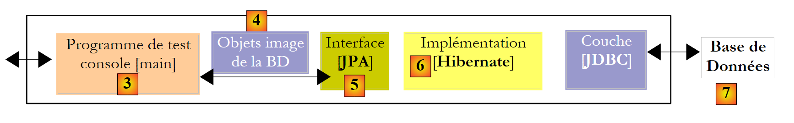 |
- في [7]: قاعدة البيانات التي سيتم إنشاؤها بناءً على تعليقات كيان [Person]، بالإضافة إلى التكوينات الإضافية المحددة في ملف باسم [persistence.xml]
- في [5، 6]: طبقة JPA تم تنفيذها بواسطة Hibernate
- في [4]: كيان [Person]
- في [3]: برنامج اختبار قائم على وحدة التحكم
سنقوم بإجراء تجارب مختلفة:
- إنشاء مخطط قاعدة البيانات باستخدام نصوص Ant وأدوات Hibernate
- إنشاء قاعدة البيانات وتهيئتها ببعض البيانات
- التفاعل مع قاعدة البيانات وتنفيذ العمليات الأساسية الأربع على جدول [person] (الإدراج، التحديث، الحذف، الاستعلام)
الأدوات اللازمة هي كما يلي:
- Eclipse ومكوناته الإضافية الموضحة في القسم 5.2.
- مشروع [hibernate-personnes-entites]، الذي يمكن العثور عليه في المجلد <examples>/hibernate/direct/personnes-entites
- أنظمة إدارة قواعد البيانات المختلفة الموضحة في الملاحق (القسم 5 وما بعده).
مشروع Eclipse هو كما يلي:
 |
- في [1]: مجلد مشروع Eclipse
- في [2]: المشروع المستورد إلى Eclipse (ملف / استيراد)
- في [3]: الكيان [Person] قيد الاختبار
- في [4]: برامج الاختبار
- في [5]: [persistence.xml] هو ملف التكوين لطبقة JPA
- في [6]: المكتبات المستخدمة. تم وصفها في القسم 1.5.
- في [8]: نصوص Ant التي ستُستخدم لإنشاء الجدول المرتبط بكيان [Person]
- في [9]: ملفات [persistence.xml] لكل نظام من أنظمة إدارة قواعد البيانات المستخدمة
- في [10]: مخططات قاعدة البيانات التي تم إنشاؤها لكل نظام من أنظمة إدارة قواعد البيانات المستخدمة
سنقوم بوصف هذه العناصر واحدة تلو الأخرى.
2.1.4. الكيان [Person] (2)
نقوم بإجراء تعديل طفيف على الوصف السابق للكيان [Person]، بالإضافة إلى إضافة بعض المعلومات الإضافية:
package entites;
...
@SuppressWarnings({ "unused", "serial" })
@Entity
@Table(name="jpa01_personne")
public class Personne implements Serializable{
@Id
@Column(name = "ID", nullable = false)
@GeneratedValue(strategy = GenerationType.AUTO)
private Integer id;
@Column(name = "VERSION", nullable = false)
@Version
private int version;
@Column(name = "NOM", length = 30, nullable = false, unique = true)
private String nom;
@Column(name = "PRENOM", length = 30, nullable = false)
private String prenom;
@Column(name = "DATENAISSANCE", nullable = false)
@Temporal(TemporalType.DATE)
private Date datenaissance;
@Column(name = "MARIE", nullable = false)
private boolean marie;
@Column(name = "NBENFANTS", nullable = false)
private int nbenfants;
// manufacturers
public Personne() {
}
public Personne(String nom, String prenom, Date datenaissance, boolean marie,
int nbenfants) {
....
}
// toString
public String toString() {
return String.format("[%d,%d,%s,%s,%s,%s,%d]", getId(), getVersion(),
getNom(), getPrenom(), new SimpleDateFormat("dd/MM/yyyy")
.format(getDatenaissance()), isMarie(), getNbenfants());
}
// getters and setters
...
}
- السطر 7: نسمي الجدول المرتبط بكيان [Person] [jpa01_personne]. في هذا المستند، سيتم إنشاء جداول متنوعة في مخطط يُسمى دائمًا jpa. بحلول نهاية هذا البرنامج التعليمي، سيحتوي مخطط jpa على العديد من الجداول. لمساعدة القارئ على تتبعها، ستحمل الجداول المرتبطة ببعضها البعض نفس البادئة jpaxx_.
- السطر 45: طريقة [toString] لعرض كائن [Person] على وحدة التحكم.
2.1.5. تكوين طبقة الوصول إلى البيانات
في مشروع Eclipse أعلاه، يتم تكوين طبقة JPA عبر ملف [META-INF/persistence.xml]:
 |
أثناء وقت التشغيل، يتم البحث عن ملف [META-INF/persistence.xml] في مسار فئات التطبيق. في مشروع Eclipse الخاص بنا، يتم نسخ كل ما يوجد في المجلد [/src] [1] إلى مجلد [/bin] [2]. هذا المجلد هو جزء من مسار فئات المشروع. ولهذا السبب سيتم العثور على [META-INF/persistence.xml] عندما تقوم طبقة JPA بتكوين نفسها.
بشكل افتراضي، لا يضع Eclipse شفرة المصدر في مجلد [/src] الخاص بالمشروع بل مباشرةً تحت مجلد المشروع نفسه. سيتم تكوين جميع مشاريع Eclipse الخاصة بنا بحيث تكون المصادر في [/src] والفئات المُجمَّعة في [/bin]، كما هو موضَّح في القسم 5.2.1.
دعونا نفحص تكوين طبقة JPA في ملف [persistence.xml] الخاص بمشروعنا:
<?xml version="1.0" encoding="UTF-8"?>
<persistence version="1.0" xmlns="http://java.sun.com/xml/ns/persistence">
<persistence-unit name="jpa" transaction-type="RESOURCE_LOCAL">
<!-- provider -->
<provider>org.hibernate.ejb.HibernatePersistence</provider>
<properties>
<!-- Persistent classes -->
<property name="hibernate.archive.autodetection" value="class, hbm" />
<!-- logs SQL
<property name="hibernate.show_sql" value="true"/>
<property name="hibernate.format_sql" value="true"/>
<property name="use_sql_comments" value="true"/>
-->
<!-- connection JDBC -->
<property name="hibernate.connection.driver_class" value="com.mysql.jdbc.Driver" />
<property name="hibernate.connection.url" value="jdbc:mysql://localhost:3306/jpa" />
<property name="hibernate.connection.username" value="jpa" />
<property name="hibernate.connection.password" value="jpa" />
<!-- automatic schematic creation -->
<property name="hibernate.hbm2ddl.auto" value="create" />
<!-- Dialect -->
<property name="hibernate.dialect" value="org.hibernate.dialect.MySQL5InnoDBDialect" />
<!-- properties DataSource c3p0 -->
<property name="hibernate.c3p0.min_size" value="5" />
<property name="hibernate.c3p0.max_size" value="20" />
<property name="hibernate.c3p0.timeout" value="300" />
<property name="hibernate.c3p0.max_statements" value="50" />
<property name="hibernate.c3p0.idle_test_period" value="3000" />
</properties>
</persistence-unit>
</persistence>
لفهم هذا التكوين، نحتاج إلى إعادة النظر في بنية الوصول إلى البيانات في تطبيقنا:
 |
- يقوم ملف [persistence.xml] بتكوين الطبقات [4، 5، 6]
- [4]: تنفيذ Hibernate لـ JPA
- [5]: يصل Hibernate إلى قاعدة البيانات عبر تجمع اتصالات. تجمع الاتصالات هو مجموعة من الاتصالات المفتوحة بنظام إدارة قواعد البيانات (DBMS). يتم الوصول إلى نظام إدارة قواعد البيانات (DBMS) من قبل عدة مستخدمين، ولكن لأسباب تتعلق بالأداء، لا يمكن أن يتجاوز عدد الاتصالات المفتوحة في وقت واحد الحد N. يفتح الكود المكتوب بشكل جيد اتصالاً بنظام إدارة قواعد البيانات (DBMS) لأقل وقت ممكن: فهو ينفذ أوامر SQL ويغلق الاتصال. وسيقوم بذلك بشكل متكرر، في كل مرة يحتاج فيها إلى العمل مع قاعدة البيانات. تكلفة فتح وإغلاق الاتصال ليست ضئيلة، وهنا يأتي دور مجموعة الاتصالات. عند بدء تشغيل التطبيق، تفتح مجموعة الاتصالات N1 اتصالاً بنظام إدارة قواعد البيانات (DBMS). يطلب التطبيق اتصالاً مفتوحاً من المجموعة كلما احتاج إلى واحد. يتم إرجاع الاتصال إلى المجمع بمجرد أن لا يعود التطبيق بحاجة إليه، ويفضل أن يكون ذلك بأسرع وقت ممكن. لا يتم إغلاق الاتصال ويظل متاحًا للمستخدم التالي. وبالتالي، فإن مجمع الاتصالات هو نظام لمشاركة الاتصالات المفتوحة.
- [6]: برنامج تشغيل JDBC لنظام إدارة قواعد البيانات المستخدم
الآن دعونا نرى كيف يقوم ملف [persistence.xml] بتكوين الطبقات [4، 5، 6] أعلاه:
- السطر 2: العلامة الجذرية لملف XML هي <persistence>.
- السطر 3: تُستخدم <persistence-unit> لتعريف وحدة الاستمرارية. يمكن أن يكون هناك عدة وحدات استمرارية. لكل منها اسم (سمة name) ونوع معاملة (سمة transaction-type). سيصل التطبيق إلى وحدة الاستمرارية عبر اسمها، وهو jpa في هذه الحالة. يشير نوع المعاملة RESOURCE_LOCAL إلى أن التطبيق يدير المعاملات مع نظام إدارة قواعد البيانات نفسه. وهذا هو الحال هنا. عندما يعمل التطبيق في حاوية EJB3، يمكنه استخدام خدمة المعاملات الخاصة بالحاوية. في هذه الحالة، سنقوم بتعيين transaction-type=JTA (Java Transaction API). JTA هي القيمة الافتراضية عند حذف سمة transaction-type.
- السطر 5: تُستخدم علامة <provider> لتعريف فئة تُنفذ واجهة [javax.persistence.spi.PersistenceProvider]، مما يسمح للتطبيق بتهيئة طبقة الاستمرارية . نظرًا لأننا نستخدم تنفيذ JPA/Hibernate، فإن الفئة المستخدمة هنا هي فئة Hibernate.
- السطر 6: تقدم علامة <properties> خصائص خاصة بالمزود المختار. وبالتالي، اعتمادًا على ما إذا كنت قد اخترت Hibernate أو TopLink أو Kodo أو غيرها، فستكون لديك خصائص مختلفة. فيما يلي الخصائص الخاصة بـ Hibernate.
- السطر 8: يوجه Hibernate إلى فحص مسار فئات المشروع للعثور على الفئات المُعلَّمة بـ @Entity حتى يتمكن من إدارتها. يمكن أيضًا إعلان فئات @Entity باستخدام علامات <class>class_name</class>، مباشرةً أسفل علامة <persistence-unit>. هذا ما سنفعله مع مزود JPA/Toplink.
- الأسطر 10-12، التي تم تعليقها هنا، تكوّن سجلات وحدة التحكم في Hibernate:
- السطر 10: لتمكين أو تعطيل عرض عبارات SQL الصادرة عن Hibernate إلى نظام إدارة قواعد البيانات (DBMS). وهذا مفيد جدًا خلال مرحلة التعلم. وبسبب الجسر العلائقي/الكائني، يعمل التطبيق على كائنات ثابتة يطبق عليها عمليات مثل [persist، merge، remove]. ومن المفيد جدًا معرفة عبارات SQL التي يتم إصدارها فعليًا لهذه العمليات. من خلال دراستها، تتعلم تدريجيًا توقع عبارات SQL التي سيقوم Hibernate بإنشائها عند تنفيذ مثل هذه العمليات على الكائنات الدائمة، ويبدأ جسر العلاقة/الكائن في التبلور في ذهنك.
- السطر 11: يمكن تنسيق عبارات SQL المعروضة على وحدة التحكم بشكل أنيق لتسهيل قراءتها
- السطر 12: سيتم أيضًا توضيح عبارات SQL المعروضة
- تحدد الأسطر 15-19 طبقة JDBC (الطبقة [6] في البنية):
- السطر 15: فئة برنامج تشغيل JDBC لنظام إدارة قواعد البيانات، وهنا MySQL5
- السطر 16: عنوان URL لقاعدة البيانات المستخدمة
- السطران 17 و 18: اسم المستخدم وكلمة المرور للاتصال
- نستخدم هنا العناصر التي تم شرحها في الملاحق الواردة في القسم 5.5. وننصح القارئ بالاطلاع على هذا القسم المتعلق بـ MySQL 5.
- السطر 22: يحتاج Hibernate إلى معرفة نظام إدارة قواعد البيانات (DBMS) الذي يعمل معه. وذلك لأن جميع أنظمة إدارة قواعد البيانات (DBMS) لديها امتدادات SQL خاصة بها، مثل طريقتها الخاصة في التعامل مع التوليد التلقائي لقيم المفاتيح الأساسية، ... مما يعني أن Hibernate يحتاج إلى معرفة نظام إدارة قواعد البيانات (DBMS) الذي يعمل معه من أجل إرسال أوامر SQL إليه والتي سيفهمها نظام إدارة قواعد البيانات (DBMS). [MySQL5InnoDBDialect] يشير إلى نظام إدارة قواعد البيانات MySQL5 مع جداول InnoDB التي تدعم المعاملات.
- تقوم الأسطر 24-28 بتكوين تجمع اتصالات c3p0 (الطبقة [5] في البنية):
- السطران 24 و25: الحد الأدنى (الافتراضي 3) والحد الأقصى لعدد الاتصالات (الافتراضي 15) في المجموعة. العدد الأولي الافتراضي للاتصالات هو 3.
- السطر 26: الحد الأقصى لوقت الانتظار بالمللي ثانية لطلب اتصال من العميل. بعد انتهاء مهلة الانتظار هذه، سيقوم c3p0 بإصدار استثناء.
- السطر 27: للوصول إلى قاعدة البيانات، يستخدم Hibernate عبارات SQL المعدة مسبقًا (PreparedStatement) التي يمكن لـ c3p0 تخزينها مؤقتًا. وهذا يعني أنه إذا طلب التطبيق عبارة SQL معدة مسبقًا موجودة بالفعل في ذاكرة التخزين المؤقت للمرة الثانية، فلن تكون هناك حاجة لإعدادها (إعداد عبارة SQL يترتب عليه تكلفة) وسيتم استخدام العبارة الموجودة في ذاكرة التخزين المؤقت. هنا، نحدد الحد الأقصى لعدد عبارات SQL المعدة التي يمكن أن تحتويها ذاكرة التخزين المؤقت، عبر جميع الاتصالات (تنتمي عبارة SQL المعدة إلى اتصال واحد).
- السطر 28: فاصل زمني للتحقق من صلاحية الاتصال بالمللي ثانية. يمكن أن يصبح الاتصال في المجمع غير صالح لأسباب مختلفة (يقوم برنامج تشغيل JDBC بإبطال صلاحية الاتصال لأنه ظل خاملاً لفترة طويلة جدًا، أو وجود أخطاء في برنامج تشغيل JDBC، وما إلى ذلك).
- السطر 20: هنا، نحدد أنه عند تهيئة طبقة الاستمرارية، يجب إنشاء مخطط قاعدة البيانات لكائنات @Entity. يمتلك Hibernate الآن جميع الأدوات اللازمة لإنشاء عبارات SQL لإنشاء جداول قاعدة البيانات:
- تسمح تكوين كائنات @Entity له بمعرفة الجداول التي يجب إنشاؤها
- تسمح الأسطر 15-18 و24-28 له بإنشاء اتصال مع نظام إدارة قواعد البيانات
- يحدد السطر 22 له لهجة SQL التي يجب استخدامها لإنشاء الجداول
وبالتالي، فإن ملف [persistence.xml] المستخدم هنا يعيد إنشاء قاعدة بيانات جديدة مع كل تنفيذ جديد للتطبيق. يتم إعادة إنشاء الجداول (create table) بعد حذفها (drop table) إذا كانت موجودة. لاحظ أن هذا بالطبع ليس شيئًا ينبغي فعله مع قاعدة بيانات الإنتاج...
أظهرت الاختبارات أن مرحلة حذف/إنشاء الجداول قد تفشل. كان هذا هو الحال بشكل خاص عندما قمنا، في نفس الاختبار، بالتحول من طبقة JPA/Hibernate إلى طبقة JPA/Toplink أو العكس. بدءًا من نفس كائنات @Entity، لا تنشئ الطريقتان نفس الجداول والمولدات والتسلسلات وما إلى ذلك بالضبط، وقد حدث أحيانًا أن فشلت مرحلة الحذف/الإنشاء، مما تطلب حذف الجداول يدويًا. يصف قسم "الملاحق"، بدءًا من الفقرة 5، الأدوات المتاحة لأداء هذه المهمة يدويًا. وتجدر الإشارة إلى أن تطبيق JPA/Hibernate أثبت أنه الأكثر كفاءة خلال هذه المرحلة الأولية من إنشاء محتوى قاعدة البيانات: حيث كانت حالات التعطل نادرة.
توجد الأدوات المستخدمة من قبل طبقة JPA/Hibernate في مكتبة [jpa-hibernate]، المعروضة في القسم 1.5، الصفحة 8. توجد برامج تشغيل JDBC المطلوبة للوصول إلى نظام إدارة قواعد البيانات (DBMS) في مكتبة [jpa-divers]. تمت إضافة هاتين المكتبتين إلى مسار الفئات (classpath) للمشروع المدروس هنا. فيما يلي ملخص لمحتوياتهما:
 |
2.1.6. إنشاء قاعدة البيانات باستخدام نصوص Ant
كما رأينا للتو، يوفر Hibernate أدوات لإنشاء مخطط قاعدة البيانات لكائنات @Entity الخاصة بالتطبيق. يمكن لـ Hibernate:
- إنشاء ملف نصي يحتوي على عبارات SQL التي تنشئ قاعدة البيانات. في هذه الحالة، يتم استخدام اللهجة المحددة في [persistence.xml] فقط.
- إنشاء الجداول التي تمثل كائنات @Entity في قاعدة البيانات الهدف المحددة في [persistence.xml]. في هذه الحالة، يتم استخدام ملف [persistence.xml] بالكامل.
سنقدم نصوص Ant قادرة على إنشاء مخطط قاعدة البيانات لكائنات @Entity. هذه النصوص ليست من تأليفي: فهي تستند إلى نصوص مشابهة من [ref1]. Ant (Another Neat Tool) هي أداة مهام دفعية لـ Java. نصوص Ant ليست سهلة الفهم للمبتدئين. سنستخدم واحدة فقط، وهي التي نعلق عليها الآن:
 |
- في [1]: بنية الدليل للأمثلة في هذا البرنامج التعليمي.
- في [2]: مجلد [people-entities] لمشروع Eclipse قيد الدراسة حاليًا
- في [3]: المجلد <lib> الذي يحتوي على المكتبات الخمس JAR المحددة في القسم 1.5.
- في [4]: أرشيف [hibernate-tools.jar] المطلوب لإحدى المهام في البرنامج النصي [ant-hibernate.xml] الذي سنقوم بفحصه.
 |
- في [5]: مشروع Eclipse والنص البرمجي [ant-hibernate.xml]
- في [6]: مجلد [src] الخاص بالمشروع
سيستخدم البرنامج النصي [ant-hibernate.xml] [5] ملفات JAR الموجودة في مجلد <lib> [3]، وتحديدًا ملف [hibernate-tools.jar] [4] الموجود في مجلد [lib/hibernate]. لقد قمنا بإعادة إنتاج شجرة الدليل حتى يتمكن القارئ من رؤية أنه للعثور على مجلد [lib] من مجلد [people-entities] [2] في البرنامج النصي [ant-hibernate.xml]، يجب عليك اتباع المسار: ../../../lib.
دعونا نفحص البرنامج النصي [ant-hibernate.xml]:
<project name="jpa-hibernate" default="compile" basedir=".">
<!-- nom du projet et version -->
<property name="proj.name" value="jpa-hibernate" />
<property name="proj.shortname" value="jpa-hibernate" />
<property name="version" value="1.0" />
<!-- Propriété globales -->
<property name="src.java.dir" value="src" />
<property name="lib.dir" value="../../../lib" />
<property name="build.dir" value="bin" />
<!-- le Classpath du projet -->
<path id="project.classpath">
<fileset dir="${lib.dir}">
<include name="**/*.jar" />
</fileset>
</path>
<!-- les fichiers de configuration qui doivent être dans le classpath-->
<patternset id="conf">
<include name="**/*.xml" />
<include name="**/*.properties" />
</patternset>
<!-- Nettoyage projet -->
<target name="clean" description="Nettoyer le projet">
<delete dir="${build.dir}" />
<mkdir dir="${build.dir}" />
</target>
<!-- Compilation projet -->
<target name="compile" depends="clean">
<javac srcdir="${src.java.dir}" destdir="${build.dir}" classpathref="project.classpath" />
</target>
<!-- Copier les fichiers de configuration dans le classpath -->
<target name="copyconf">
<mkdir dir="${build.dir}" />
<copy todir="${build.dir}">
<fileset dir="${src.java.dir}">
<patternset refid="conf" />
</fileset>
</copy>
</target>
<!-- Hibernate Tools -->
<taskdef name="hibernatetool" classname="org.hibernate.tool.ant.HibernateToolTask" classpathref="project.classpath" />
<!-- Générer la DDL de la base -->
<target name="DDL" depends="compile, copyconf" description="Génération DDL base">
<hibernatetool destdir="${basedir}">
<classpath path="${build.dir}" />
<!-- Utiliser META-INF/persistence.xml -->
<jpaconfiguration />
<!-- export -->
<hbm2ddl drop="true" create="true" export="false" outputfilename="ddl/schema.sql" delimiter=";" format="true" />
</hibernatetool>
</target>
<!-- Générer la base -->
<target name="BD" depends="compile, copyconf" description="Génération BD">
<hibernatetool destdir="${basedir}">
<classpath path="${build.dir}" />
<!-- Utiliser META-INF/persistence.xml -->
<jpaconfiguration />
<!-- export -->
<hbm2ddl drop="true" create="true" export="true" outputfilename="ddl/schema.sql" delimiter=";" format="true" />
</hibernatetool>
</target>
</project>
- السطر 1: يُسمى مشروع [ant] "jpa-hibernate". ويتألف من مجموعة من المهام، إحداها هي المهمة الافتراضية: وهي في هذه الحالة المهمة المسماة "compile". يتم استدعاء برنامج نصي Ant لتنفيذ مهمة T. إذا لم يتم تحديد أي مهمة، يتم تنفيذ المهمة الافتراضية. يشير basedir="." إلى أن نقطة البداية لجميع المسارات النسبية الموجودة في البرنامج النصي هي المجلد الذي يحتوي على البرنامج النصي Ant، وهو في هذه الحالة المجلد <examples>/hibernate/direct/people-entities.
- الأسطر 3–11: تحدد متغيرات البرنامج النصي باستخدام العلامة <property name="variableName" value="variableValue"/>. يمكن بعد ذلك استخدام المتغير في البرنامج النصي بالرمز ${variableName}. يمكن أن تكون الأسماء أي شيء. دعونا نلقي نظرة فاحصة على المتغيرات المحددة في الأسطر 9–11:
- السطر 9: يحدد متغيرًا باسم "src.java.dir" (الاسم تعسفي) والذي سيشير لاحقًا في البرنامج النصي إلى المجلد الذي يحتوي على كود مصدر Java. قيمته هي "src"، وهو مسار نسبي للمجلد المحدد بواسطة السمة basedir (السطر 1). وبالتالي، فإن هذا هو المسار "./src"، حيث تشير علامة النقطة (.) هنا إلى المجلد <examples>/hibernate/direct/people-entities. ويقع كود مصدر Java بالفعل في المجلد <people-entities>/src (انظر [6] أعلاه).
- السطر 10: يُعرّف متغيرًا باسم "lib.dir" والذي سيشير لاحقًا في البرنامج النصي إلى المجلد الذي يحتوي على ملفات JAR المطلوبة لمهام Java في البرنامج النصي. تشير قيمته ../../../lib إلى المجلد <examples>/lib (انظر [3] أعلاه).
- السطر 11: يحدد متغيرًا باسم "build.dir" والذي سيشير لاحقًا في البرنامج النصي إلى المجلد الذي يجب وضع ملفات .class فيه، وهي الملفات التي تم إنشاؤها من ترجمة مصادر .java. تشير قيمته "bin" إلى المجلد <personnes-entites>/bin. سبق أن أوضحنا أن المجلد <bin> في مشروع Eclipse الذي درسناه هو المكان الذي تم فيه إنشاء ملفات .class. وسيقوم Ant بنفس الشيء.
- الأسطر 14–18: تُستخدم علامة <path> لتعريف عناصر مسار الفصل (classpath) التي ستستخدمها مهام Ant. هنا، يتضمن المسار "project.classpath" (الاسم تعسفي) جميع ملفات .jar الموجودة في شجرة الدليل <examples>/lib.
- الأسطر 21–24: تُستخدم علامة <patternset> لتعيين مجموعة من الملفات باستخدام أنماط التسمية. هنا، تشير مجموعة الأنماط المسماة conf إلى جميع الملفات ذات الامتداد .xml أو .properties. سيتم استخدام مجموعة الأنماط هذه للإشارة إلى ملفات .xml و.properties الموجودة في المجلد <src> (persistence.xml، log4j.properties) (انظر [6])، وهي ملفات تكوين التطبيق. عند تنفيذ مهام معينة، يجب نسخ هذه الملفات إلى المجلد <bin> بحيث تكون موجودة في مسار فئة المشروع. سنستخدم بعد ذلك مجموعة الأنماط conf للإشارة إليها.
- الأسطر 27–30: تشير العلامة <target> إلى مهمة في البرنامج النصي. هذه هي المهمة الأولى التي نواجهها. كل ما سبق ذلك يتعلق بتكوين بيئة تنفيذ البرنامج النصي Ant. تسمى المهمة clean. يتم تشغيلها على خطوتين: يتم حذف المجلد <bin> (السطر 28) ثم إعادة إنشائه (السطر 29).
- الأسطر 33–35: مهمة compile، وهي المهمة الافتراضية للنص البرمجي (السطر 1). وهي تعتمد (السمة depends) على مهمة clean. وهذا يعني أنه قبل تنفيذ مهمة compile، يجب على Ant تنفيذ مهمة clean، أي تنظيف المجلد <bin>. الغرض من مهمة compile هنا هو ترجمة ملفات مصدر Java الموجودة في المجلد <src>.
- السطر 34: استدعاء لمترجم Java بثلاثة معلمات:
- srcdir: المجلد الذي يحتوي على ملفات مصدر Java، وهو هنا المجلد <src>
- destdir: المجلد الذي يجب تخزين ملفات .class التي تم إنشاؤها فيه، وهو هنا المجلد <bin>
- classpathref: مسار الفصل الذي سيتم استخدامه للتجميع، وهو هنا جميع ملفات JAR الموجودة في شجرة دليل <lib>
- (تابع)
- الأسطر 38–45: مهمة copyconf، والغرض منها هو نسخ جميع ملفات .xml و.properties من دليل <src> إلى دليل <bin>.
- السطر 48: تعريف مهمة باستخدام العلامة <taskdef>. تهدف هذه المهمة إلى إعادة استخدامها في مكان آخر في البرنامج النصي. وهذا لتسهيل عملية البرمجة. ونظرًا لأن المهمة تُستخدم في أماكن مختلفة في البرنامج النصي، يتم تعريفها مرة واحدة باستخدام العلامة <taskdef> ثم إعادة استخدامها عبر اسمها عند الحاجة.
- تسمى المهمة hibernatetool (سمة الاسم).
- يتم تحديد فئتها بواسطة السمة classname. وهنا، ستُوجد الفئة المحددة في ملف [hibernate-tools.jar] الذي ذكرناه سابقًا.
- تخبر السمة classpathref Ant أين يبحث عن الفئة السابقة
- (تابع)
- تتعلق الأسطر 51-60 بالمهمة التي تهمنا هنا: إنشاء مخطط قاعدة البيانات لكائنات @Entity في مشروع Eclipse الخاص بنا.
- السطر 51: تسمى المهمة DDL (اختصار لـ Data Definition Language، لغة تعريف البيانات، وهي لغة SQL المستخدمة لإنشاء كائنات قاعدة البيانات). وهي تعتمد على مهمتي compile و copyconf، بهذا الترتيب. وبالتالي، ستؤدي مهمة DDL إلى تشغيل مهام clean و compile و copyconf بالترتيب. عند بدء مهمة DDL، يحتوي المجلد <bin> على ملفات .class التي تم إنشاؤها من مصادر .java، ولا سيما كائنات @Entity، بالإضافة إلى ملف [META-INF/persistence.xml] الذي يقوم بتكوين طبقة JPA/Hibernate.
- الأسطر 53–59: يتم استدعاء مهمة [hibernatetool] المحددة في السطر 48. يتم تمرير العديد من المعلمات إليها، بالإضافة إلى تلك المحددة بالفعل في السطر 48:
- السطر 53: سيكون الدليل الناتج للنتائج التي تنتجها المهمة هو الدليل الحالي.
- السطر 54: سيكون مسار فئة المهمة هو المجلد <bin>.
- السطر 56: يحدد لمهمة [hibernatetool] كيفية تحديد بيئة وقت التشغيل الخاصة بها: تشير العلامة <jpaconfiguration/> إلى أنها في بيئة JPA وأنه يجب عليها بالتالي استخدام ملف [META-INF/persistence.xml]، الذي ستجده هنا في مسار فئتها.
- السطر 58 يحدد شروط إنشاء قاعدة البيانات: drop=true تشير إلى أنه يجب إصدار عبارات SQL لإزالة الجداول قبل إنشاء الجداول؛ create=true تشير إلى أنه يجب إنشاء الملف النصي الذي يحتوي على عبارات SQL لإنشاء قاعدة البيانات؛ outputfilename تحدد اسم ملف SQL هذا — هنا schema.sql في مجلد <ddl> لمشروع Eclipse؛ export=false تشير إلى أنه لا يجب تنفيذ عبارات SQL التي تم إنشاؤها في اتصال بنظام إدارة قواعد البيانات (DBMS). هذه النقطة مهمة: فهي تعني أن نظام إدارة قواعد البيانات (DBMS) المستهدف لا يحتاج إلى التشغيل لتنفيذ المهمة. يحدد delimiter الحرف الذي يفصل بين جملتي SQL في المخطط الذي تم إنشاؤه، ويطلب format=true تطبيق التنسيق الأساسي على النص الذي تم إنشاؤه.
- تتعلق الأسطر 51-60 بالمهمة التي تهمنا هنا: إنشاء مخطط قاعدة البيانات لكائنات @Entity في مشروع Eclipse الخاص بنا.
- (تابع)
- تحدد الأسطر 63–72 المهمة المسماة BD. وهي مطابقة لمهمة DDL السابقة، باستثناء أنها تقوم هذه المرة بإنشاء قاعدة البيانات (export="true" في السطر 70). تفتح المهمة اتصالاً بنظام إدارة قواعد البيانات (DBMS) باستخدام المعلومات الموجودة في [persistence.xml]، لتنفيذ مخطط SQL وإنشاء قاعدة البيانات. ولتشغيل مهمة BD، يجب أن يكون نظام إدارة قواعد البيانات (DBMS) قيد التشغيل.
2.1.7. تشغيل مهمة DDL في ant
لتشغيل البرنامج النصي [ant-hibernate.xml]، نحتاج أولاً إلى إجراء بعض التكوينات داخل Eclipse.
 |
- في [1]: حدد [External Tools]
- في [2]: قم بإنشاء تكوين Ant جديد
 |
- في [3]: قم بتسمية تكوين Ant
- في [5]: حدد البرنامج النصي لـ Ant باستخدام الزر [4]
- الخطوة [6]: تطبيق التغييرات
- في [7]: تم إنشاء تكوين DDL Ant
 |
 |
- في [8]: في علامة التبويب JRE، حدد بيئة JRE المراد استخدامها. عادةً ما يكون الحقل [10] مملوءًا مسبقًا ببيئة JRE التي يستخدمها Eclipse. ولذلك، لا يوجد عادةً ما يجب القيام به في هذه اللوحة. ومع ذلك، واجهت حالة لم يتمكن فيها البرنامج النصي Ant من العثور على المُترجم <javac>. لا يوجد هذا المُترجم في JRE (بيئة تشغيل Java) بل في JDK (مجموعة أدوات تطوير Java). تحدد أداة Ant في Eclipse موقع هذا المُترجم عبر متغير البيئة JAVA_HOME (ابدأ / لوحة التحكم / الأداء والصيانة / النظام / علامة التبويب خيارات متقدمة / زر متغيرات البيئة) [A]. إذا لم يتم تعريف هذا المتغير، يمكنك السماح لـ Ant بالعثور على المُجمِّع <javac> عن طريق تحديد JDK بدلاً من JRE في [10]. يتوفر JDK في نفس المجلد الذي يوجد فيه JRE [B]. استخدم الزر [9] لتسجيل JDK ضمن JREs المتاحة [C] حتى تتمكن بعد ذلك من تحديده في [10].
- في [12]: في علامة التبويب [Targets]، حدد مهمة DDL. وبالتالي، فإن تكوين Ant الذي أطلقنا عليه اسم DDL [7] سيتوافق مع تنفيذ المهمة المسماة DDL [12]، والتي، كما نعلم، تولد مخطط DDL لقاعدة البيانات التي تمثل كائنات @Entity الخاصة بالتطبيق.
 |
- في [13]: تحقق من صحة التكوين
- في [14]: قم بتشغيله
في عرض [Console]، سترى سجلات من تنفيذ مهمة DDL Ant:
Buildfile: C:\data\2006-2007\eclipse\dvp-jpa\hibernate\direct\personnes-entites\ant-hibernate.xml
clean:
[delete] Deleting directory C:\data\2006-2007\eclipse\dvp-jpa\hibernate\direct\personnes-entites\bin
[mkdir] Created dir: C:\data\2006-2007\eclipse\dvp-jpa\hibernate\direct\personnes-entites\bin
compile:
[javac] Compiling 3 source files to C:\data\2006-2007\eclipse\dvp-jpa\hibernate\direct\personnes-entites\bin
copyconf:
[copy] Copying 2 files to C:\data\2006-2007\eclipse\dvp-jpa\hibernate\direct\personnes-entites\bin
DDL:
[hibernatetool] Executing Hibernate Tool with a JPA Configuration
[hibernatetool] 1. task: hbm2ddl (Generates database schema)
[hibernatetool] drop table if exists jpa01_personne;
[hibernatetool] create table jpa01_personne (
[hibernatetool] ID integer not null auto_increment,
[hibernatetool] VERSION integer not null,
[hibernatetool] NOM varchar(30) not null unique,
[hibernatetool] PRENOM varchar(30) not null,
[hibernatetool] DATENAISSANCE date not null,
[hibernatetool] MARIE bit not null,
[hibernatetool] NBENFANTS integer not null,
[hibernatetool] primary key (ID)
[hibernatetool] ) ENGINE=InnoDB;
BUILD SUCCESSFUL
Total time: 5 seconds
- تذكر أن مهمة DDL تسمى [hibernatetool] (السطر 10) وتعتمد على المهام clean (السطر 2) و compile (السطر 5) و copyconf (السطر 7).
- السطر 10: تستخدم مهمة [hibernatetool] ملف [persistence.xml] من تكوين JPA
- السطر 11: ستقوم مهمة [hbm2ddl] بإنشاء مخطط DDL لقاعدة البيانات
- الأسطر 12–22: مخطط DDL لقاعدة البيانات
تذكر أننا أوعزنا لمهمة [hbm2ddl] بإنشاء مخطط DDL في موقع محدد:
<hbm2ddl drop="true" create="true" export="true" outputfilename="ddl/schema.sql" delimiter=";" format="true" />
- السطر 74: يجب إنشاء المخطط في الملف ddl/schema.sql. دعونا نتحقق من ذلك:
 |
- في [1]: ملف ddl/schema.sql موجود بالفعل (اضغط على F5 لتحديث شجرة الدليل)
- في [2]: محتوياته. هذا هو مخطط قاعدة بيانات MySQL5. وقد حدد ملف التكوين [persistence.xml] لطبقة JPA بالفعل نظام إدارة قواعد البيانات MySQL5 (السطر 8 أدناه):
<!-- connexion JDBC -->
<property name="hibernate.connection.driver_class" value="com.mysql.jdbc.Driver" />
...
<!-- création automatique du schéma -->
<property name="hibernate.hbm2ddl.auto" value="create" />
<!-- Dialecte -->
<property name="hibernate.dialect" value="org.hibernate.dialect.MySQL5InnoDBDialect" />
<!-- propriétés DataSource c3p0 -->
...
دعونا نفحص التعيين العلائقي للكائنات الذي تم تنفيذه هنا من خلال النظر إلى تكوين كائن @Entity Person ومخطط DDL الذي تم إنشاؤه:
 |
 |
هناك بعض النقاط الجديرة بالملاحظة:
- A1-B1: اسم الجدول المحدد في A1 هو بالفعل الاسم المستخدم في B1. لاحظ عبارة `DROP` التي تسبق `CREATE` في B1.
- A2-B2: يوضح كيفية إنشاء المفتاح الأساسي. أدى وضع AUTO المحدد في A2 إلى سمة التزايد التلقائي الخاصة بـ MySQL5. غالبًا ما يكون وضع إنشاء المفتاح الأساسي خاصًا بنظام إدارة قواعد البيانات (DBMS).
- A3-B3: يوضح نوع بت SQL الخاص بـ MySQL 5 المستخدم لتمثيل نوع boolean في Java.
دعونا نكرر هذا الاختبار مع نظام إدارة قواعد بيانات آخر:
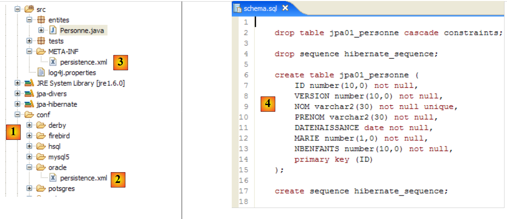 |
- يحتوي المجلد [conf] [1] على ملفات [persistence.xml] لأنظمة إدارة قواعد البيانات المختلفة. خذ ملف Oracle [2] على سبيل المثال، وضعه في المجلد [META-INF] [3] بدلاً من الملف السابق. ومحتوياته كما يلي:
<?xml version="1.0" encoding="UTF-8"?>
<persistence version="1.0" xmlns="http://java.sun.com/xml/ns/persistence">
<persistence-unit name="jpa" transaction-type="RESOURCE_LOCAL">
<!-- provider -->
<provider>org.hibernate.ejb.HibernatePersistence</provider>
<properties>
<!-- Persistent classes -->
<property name="hibernate.archive.autodetection" value="class, hbm" />
<!-- logs SQL
<property name="hibernate.show_sql" value="true"/>
<property name="hibernate.format_sql" value="true"/>
<property name="use_sql_comments" value="true"/>
-->
<!-- connection JDBC -->
<property name="hibernate.connection.driver_class" value="oracle.jdbc.OracleDriver" />
<property name="hibernate.connection.url" value="jdbc:oracle:thin:@localhost:1521:xe" />
<property name="hibernate.connection.username" value="jpa" />
<property name="hibernate.connection.password" value="jpa" />
<!-- automatic schematic creation -->
<property name="hibernate.hbm2ddl.auto" value="create" />
<!-- Dialect -->
<property name="hibernate.dialect" value="org.hibernate.dialect.OracleDialect" />
<!-- properties DataSource c3p0 -->
<property name="hibernate.c3p0.min_size" value="5" />
<property name="hibernate.c3p0.max_size" value="20" />
<property name="hibernate.c3p0.timeout" value="300" />
<property name="hibernate.c3p0.max_statements" value="50" />
<property name="hibernate.c3p0.idle_test_period" value="3000" />
</properties>
</persistence-unit>
</persistence>
يُنصح القراء بالرجوع إلى الملحق، وتحديداً القسم الخاص بـ Oracle (القسم 5.7)، لا سيما لفهم تكوين JDBC.
السطر 25 هو الوحيد المهم حقًا هنا: نحن نخبر Hibernate أن نظام إدارة قواعد البيانات (DBMS) هو الآن نظام Oracle. يؤدي تنفيذ مهمة ant DDL إلى النتيجة [4] الموضحة أعلاه. لاحظ أن مخطط Oracle يختلف عن مخطط MySQL5. هذه هي إحدى نقاط القوة الرئيسية لـ JPA: لا يحتاج المطور إلى القلق بشأن هذه التفاصيل، مما يزيد بشكل كبير من قابلية نقل تطبيقاته.
2.1.8. تنفيذ مهمة Ant " "
قد تتذكر أن مهمة Ant المسماة <bdi dir="ltr" class="odt-ltr-term">BD</bdi> تقوم بنفس الشيء الذي تقوم به مهمة *<bdi dir="ltr" class="odt-ltr-term">DDL</bdi>* ولكنها تقوم أيضًا بإنشاء قاعدة البيانات. لذلك يجب أن يكون نظام إدارة قواعد البيانات قيد التشغيل. سنستخدم نظام إدارة قواعد البيانات MySQL5 وندعو القارئ إلى نسخ الملف [conf/mysql5/persistence.xml] إلى المجلد [src/META-INF]. للتحقق من أن المهمة تعمل، سنستخدم المكون الإضافي SQL Explorer (انظر القسم 5.2.6) للتحقق من حالة قاعدة بيانات JPA قبل وبعد تشغيل مهمة Ant BD.
أولاً، نحتاج إلى إنشاء تكوين Ant جديد لتشغيل مهمة BD. وندعو القارئ إلى اتباع الإجراء الموضح لتكوين DDL في Ant في القسم 2.1.7. وسيُسمى تكوين Ant الجديد BD:
 |
- في [1]: نقوم بنسخ التكوين السابق المسمى DDL
- في [2]: نسمي التكوين الجديد BD. يقوم بتنفيذ مهمة ant BD [3]، التي تقوم بإنشاء قاعدة البيانات فعليًا.
- بمجرد الانتهاء من ذلك، قم بتشغيل نظام إدارة قواعد البيانات MySQL5 (القسم 5.5).
نستخدم الآن المكون الإضافي SQL Explorer لاستكشاف قواعد البيانات التي يديرها نظام إدارة قواعد البيانات. يجب على القارئ التعرف على هذا المكون الإضافي مسبقًا إذا لزم الأمر (انظر القسم 5.2.6).
 |
- [1]: افتح منظور SQL Explorer [Window / Open Perspective / Other]
- [2]: إذا لزم الأمر، قم بإنشاء اتصال [mysql5-jpa] (انظر القسم 5.5.5، الصفحة 252) وافتحه
- [3]: قم بتسجيل الدخول باسم jpa / jpa
- [4]: أنت الآن متصل بـ MySQL5.
 |
- في [5]: تحتوي قاعدة بيانات jpa على جدول واحد فقط: [articles]
- في [6]: قم بتشغيل مهمة Ant DB. نظرًا لأنك في منظور [SQL Explorer]، لا يمكنك رؤية عرض [Console]، الذي يعرض سجلات المهام. يمكنك عرض هذا العرض [Window / Show View / ...] أو العودة إلى منظور Java [Window / Open Perspective / ...].
- في [7]: بمجرد اكتمال مهمة قاعدة البيانات، عد إلى منظور [SQL Explorer] إذا لزم الأمر وقم بتحديث شجرة قاعدة بيانات JPA.
- في [8]: يمكنك رؤية الجدول [jpa01_personne] الذي تم إنشاؤه.
يُنصح القراء بتكرار عملية إنشاء قاعدة البيانات هذه مع أنظمة إدارة قواعد البيانات الأخرى. الإجراء كما يلي:
- انسخ الملف [conf/<dbms>/persistence.xml] إلى المجلد [src/META-INF]، حيث يمثل <dbms> نظام إدارة قواعد البيانات (DBMS) قيد الاختبار
- قم بتشغيل <dbms> باتباع الإرشادات الواردة في الملحق الخاص بنظام إدارة قواعد البيانات هذا
- في عرض مستكشف SQL، قم بإنشاء اتصال بـ <dbms>. وهذا موضح أيضًا في الملاحق الخاصة بكل نظام إدارة قواعد البيانات
- كرر الاختبارات السابقة
في هذه المرحلة، توصلنا إلى عدد من الاستنتاجات:
- لدينا فهم أفضل لمفهوم الجسر العلائقي للكائنات. هنا، تم تنفيذه باستخدام Hibernate. سنستخدم TopLink لاحقًا.
- نعلم أن جسر الكائنات والعلاقات هذا يتم تكوينه في مكانين:
- في كائنات @Entity، حيث نحدد العلاقات بين حقول الكائنات وأعمدة جداول قاعدة البيانات
- في [META-INF/persistence.xml]، حيث نزود تطبيق JPA بمعلومات حول مكوني الجسر بين الكائنات والعلاقات: كائنات @Entity (الكائنات) وقاعدة البيانات (العلاقات).
- لقد أنشأنا مهمتين في Ant، باسم DDL و DB، تسمحان لنا بإنشاء قاعدة البيانات بناءً على التكوين السابق، حتى قبل كتابة أي كود Java.
والآن بعد أن تم تكوين طبقة JPA لتطبيقنا بشكل صحيح، يمكننا البدء في استكشاف واجهة برمجة تطبيقات JPA باستخدام كود Java.
2.1.9. سياق ثبات التطبيق
دعونا نلقي نظرة فاحصة على بيئة وقت التشغيل لعميل JPA:
 |
نعلم أن طبقة JPA [2] تُنشئ جسراً بين الكائنات [3] والبيانات العلائقية [4]. يشير "سياق الاستمرارية" إلى مجموعة الكائنات التي تديرها طبقة JPA ضمن هذا الجسر بين الكائنات والعلاقات. للوصول إلى البيانات في سياق الاستمرارية، يجب على عميل JPA [1] المرور عبر طبقة JPA [2]:
- يمكنه إنشاء كائن وطلب من طبقة JPA جعله ثابتًا. ثم يصبح الكائن جزءًا من سياق الثبات.
- يمكنه طلب مرجع إلى كائن ثابت موجود من طبقة [JPA].
- يمكنه تعديل كائن ثابت تم الحصول عليه من طبقة JPA.
- يمكنه أن يطلب من طبقة JPA إزالة كائن من سياق الاستمرارية.
توفر طبقة JPA للعميل واجهة تسمى [EntityManager] والتي، كما يوحي اسمها، تسمح بإدارة كائنات @Entity في سياق الاستمرارية. فيما يلي الطرق الرئيسية لهذه الواجهة:
تضيف الكيان إلى سياق الاستمرارية | |
يزيل الكيان من سياق الاستمرارية | |
يدمج كائن كيان من العميل لا يديره سياق الاستمرارية مع كائن الكيان الموجود في سياق الاستمرارية الذي يحمل نفس المفتاح الأساسي. والنتيجة التي يتم إرجاعها هي كائن الكيان من سياق الاستمرارية. | |
يضع كائنًا تم استرداده من قاعدة البيانات عبر مفتاحه الأساسي. يسمح نوع T للكائن طبقة JPA بمعرفة الجدول الذي يجب الاستعلام عنه. يتم إرجاع الكائن الدائم الذي تم إنشاؤه بهذه الطريقة إلى العميل. | |
يُنشئ كائن Query من استعلام JPQL (لغة استعلام الاستمرارية في Java). استعلام JPQL مشابه للاستعلام SQL، باستثناء أنه يستعلم عن الكائنات بدلاً من الجداول. | |
طريقة مشابهة للطريقة السابقة، باستثناء أن queryText هو عبارة SQL بدلاً من استعلام JPQL. | |
طريقة مطابقة لـ createQuery، باستثناء أن استعلام JPQL queryText قد تم إخراجه إلى ملف تكوين وربطه باسم. هذا الاسم هو معلمة الطريقة. |
يتمتع كائن EntityManager بدورة حياة لا تتطابق بالضرورة مع دورة حياة التطبيق. له بداية ونهاية. وبالتالي، يمكن لعميل JPA العمل بالتتابع مع كائنات EntityManager مختلفة. يتمتع سياق الاستمرارية لـ المرتبط بـEntityManager بنفس دورة حياة EntityManager نفسه. وهما لا ينفصلان عن بعضهما البعض. عند إغلاق كائن EntityManager، تتم مزامنة سياق الاستمرارية الخاص به مع قاعدة البيانات إذا لزم الأمر، ثم يتوقف عن الوجود. يجب إنشاء EntityManager جديد للحصول على سياق استمرارية جديد.
يمكن لعميل JPA إنشاء EntityManager وبالتالي سياق استمرارية باستخدام العبارة التالية:
EntityManagerFactory emf = Persistence.createEntityManagerFactory("jpa");
- javax.persistence.Persistence هي فئة ثابتة تُستخدم للحصول على مصنع لكائنات EntityManager. يرتبط هذا المصنع بوحدة استمرارية محددة. تذكر أن ملف التكوين [META-INF/persistence.xml] يُستخدم لتعريف وحدات الاستمرارية، ولكل منها اسم:
<persistence-unit name="jpa" transaction-type="RESOURCE_LOCAL">
في المثال أعلاه، تسمى وحدة الاستمرارية jpa. وهي تأتي مع تكوينها الخاص، بما في ذلك نظام إدارة قواعد البيانات (DBMS) الذي تعمل معه. يُنشئ البيان [Persistence.createEntityManagerFactory("jpa")] كائن EntityManagerFactory قادرًا على توفير كائنات EntityManager المصممة لإدارة سياقات الاستمرارية المرتبطة بوحدة الاستمرارية المسماة jpa. يتم الحصول على كائن EntityManager — وبالتالي سياق الاستمرارية — من كائن EntityManagerFactory على النحو التالي:
تتيح لك الطرق التالية لواجهة [EntityManager] إدارة دورة حياة سياق الاستمرارية:
يتم إغلاق سياق الاستمرارية. يفرض مزامنة سياق الاستمرارية مع قاعدة البيانات:
| |
يتم مسح سياق الاستمرارية من جميع كائناته ولكن لا يتم إغلاقه. | |
يتم مزامنة سياق الاستمرارية مع قاعدة البيانات كما هو موضح في close() |
يمكن لعميل JPA فرض مزامنة سياق الاستمرارية مع قاعدة البيانات باستخدام طريقة [EntityManager].flush. يمكن أن تكون المزامنة صريحة أو ضمنية. في الحالة الأولى، يعود الأمر للعميل لتنفيذ عمليات التصفية عندما يرغب في المزامنة؛ وإلا، تحدث المزامنة في أوقات محددة سنحددها. يتم إدارة وضع المزامنة بواسطة الطرق التالية لواجهة [EntityManager]:
هناك قيمتان محتملتان لـ flushMode: FlushModeType.AUTO (الافتراضي): تتم المزامنة قبل كل استعلام SELECT يتم إجراؤه على قاعدة البيانات. FlushModeType.COMMIT: تتم المزامنة فقط في نهاية معاملات قاعدة البيانات. | |
تُرجع وضع المزامنة الحالي |
دعونا نلخص. في الوضع FlushModeType.AUTO، وهو الوضع الافتراضي، سيتم مزامنة سياق الاستمرارية مع قاعدة البيانات في الأوقات التالية:
- قبل كل عملية SELECT على قاعدة البيانات
- في نهاية معاملة في قاعدة البيانات
- بعد عملية مسح أو إغلاق في سياق الاستمرارية
في وضع FlushModeType.COMMIT، ينطبق الأمر نفسه باستثناء العملية 1، التي لا تحدث. الوضع العادي للتفاعل مع طبقة JPA هو وضع المعاملات. يقوم العميل بتنفيذ عمليات مختلفة على سياق الاستمرارية ضمن معاملة. في هذه الحالة، تكون نقاط المزامنة بين سياق الاستمرارية وقاعدة البيانات هي الحالتان 1 و 2 أعلاه في وضع AUTO، والحالة 2 فقط في وضع COMMIT.
لنختتم بواجهة برمجة التطبيقات (API) Query، التي تسمح لك بإصدار أوامر JPQL على سياق الاستمرارية أو أوامر SQL مباشرة على قاعدة البيانات لاسترداد البيانات. واجهة Query هي كما يلي:
 |
سنستخدم الطرق من 1 إلى 4 أعلاه:
- 1 - تنفذ طريقة getResultList استعلام SELECT الذي يُرجع كائنات متعددة. يتم إرجاع هذه الكائنات في كائن List. هذا الكائن هو واجهة. يوفر كائن Iterator الذي يسمح لك بالتكرار عبر عناصر القائمة L على النحو التالي:
Iterator iterator = L.iterator();
while (iterator.hasNext()) {
// exploiter l'objet iterator.next() qui représente l'élément courant de la liste
...
}
يمكن أيضًا تكرار القائمة L باستخدام حلقة for:
for (Object o : L) {
// exploiter objet o
}
- 2 - تُنفِّذ طريقة getSingleResult عبارة JPQL/SQL SELECT تُرجع كائنًا واحدًا.
- 3 - تقوم الطريقة `executeUpdate` بتنفيذ عبارة SQL UPDATE أو DELETE وتُرجع عدد الصفوف التي تأثرت بالعملية.
- 4 - تسمح لك الطريقة setParameter(String, Object) بتعيين قيمة لمعلمة مسماة في استعلام JPQL معلم.
- 5 - تقوم الطريقة setParameter(int, Object) بتعيين المعلمة، ولكن لا يتم تحديد المعلمة باسمها بل بموقعها في استعلام JPQL.
2.1.10. أول عميل JPA
لنعد إلى منظور Java للمشروع:
 |
نحن نعرف الآن كل شيء تقريبًا عن هذا المشروع باستثناء محتويات المجلد [src/tests]، الذي سنقوم بفحصه بعد ذلك. يحتوي المجلد على برنامجين للاختبار لطبقة JPA:
- [InitDB.java] هو برنامج يقوم بإدراج بضعة صفوف في جدول [jpa01_personne] في قاعدة البيانات. وسيقدم لنا كوده العناصر الأولى لطبقة JPA.
- [Main.java] هو برنامج يقوم بعمليات CRUD على الجدول [jpa01_personne]. ستسمح لنا دراسة كوده باستكشاف المفاهيم الأساسية لسياق الاستمرارية ودورة حياة الكائنات ضمن هذا السياق.
2.1.10.1. الكود
فيما يلي كود برنامج [InitDB.java]:
package tests;
import java.text.ParseException;
import java.text.SimpleDateFormat;
import javax.persistence.EntityManager;
import javax.persistence.EntityManagerFactory;
import javax.persistence.EntityTransaction;
import javax.persistence.Persistence;
import entites.Personne;
public class InitDB {
// constant
private final static String TABLE_NAME = "jpa01_personne";
public static void main(String[] args) throws ParseException {
// Persistence unit
EntityManagerFactory emf = Persistence.createEntityManagerFactory("jpa");
// retrieve a EntityManagerFactory from the persistence unit
EntityManager em = emf.createEntityManager();
// start of transaction
EntityTransaction tx = em.getTransaction();
tx.begin();
// delete items from the people table
em.createNativeQuery("delete from " + TABLE_NAME).executeUpdate();
// create two people
Personne p1 = new Personne("Martin", "Paul", new SimpleDateFormat("dd/MM/yy").parse("31/01/2000"), true, 2);
Personne p2 = new Personne("Durant", "Sylvie", new SimpleDateFormat("dd/MM/yy").parse("05/07/2001"), false, 0);
// persistence of people
em.persist(p1);
em.persist(p2);
// people display
System.out.println("[personnes]");
for (Object p : em.createQuery("select p from Personne p order by p.nom asc").getResultList()) {
System.out.println(p);
}
// end transaction
tx.commit();
// end EntityManager
em.close();
// end EntityManagerFactory
emf.close();
// log
System.out.println("terminé ...");
}
}
يجب قراءة هذا الكود في ضوء ما تم شرحه في القسم 2.1.9.
- السطر 19: يتم طلب كائن EntityManagerFactory (emf) لوحدة الاستمرارية JPA (المحددة في persistence.xml). عادةً ما يتم تنفيذ هذه العملية مرة واحدة فقط خلال دورة حياة التطبيق.
- السطر 21: يُطلب كائن EntityManager (em) لإدارة سياق الاستمرارية.
- السطر 23: يُطلب كائن Transaction لإدارة معاملة. لاحظ أن العمليات على سياق الاستمرارية يجب أن تُنفذ ضمن معاملة. سنرى أن هذا ليس مطلوبًا بشكل صارم، ولكن عدم القيام بذلك قد يؤدي إلى مشاكل. إذا كان التطبيق يعمل في حاوية EJB3، فإن العمليات على سياق الاستمرارية تُنفذ دائمًا ضمن معاملة.
- السطر 24: تبدأ المعاملة
- السطر 26: تنفيذ عبارة SQL للحذف على الجدول "jpa01_personne" (nativeQuery). نقوم بذلك لمسح الجدول من جميع المحتويات وبالتالي رؤية نتيجة تنفيذ التطبيق بشكل أفضل [InitDB]
- السطران 28-29: يتم إنشاء كائنين من نوع Person، هما p1 و p2. وهذان كائنان عاديان، ولا علاقة لهما في الوقت الحالي بسياق الاستمرارية. فيما يتعلق بسياق الاستمرارية، يشير Hibernate إلى هذين الكائنين على أنهما في حالة مؤقتة، على عكس الكائنات المستمرة التي يديرها سياق الاستمرارية. بدلاً من ذلك، سنشير إلى الكائنات غير الدائمة (وهو مصطلح غير قياسي) للإشارة إلى أنها لم تُدار بعد بواسطة سياق الاستمرارية، وإلى الكائنات الدائمة للإشارة إلى تلك التي تُدار بواسطته. سنواجه فئة ثالثة من الكائنات: الكائنات المنفصلة، وهي كائنات كانت ثابتة سابقًا ولكن تم إغلاق سياق الثبات الخاص بها. قد يحتفظ العميل بمراجع لهذه الكائنات، وهو ما يفسر سبب عدم تدميرها بالضرورة عند إغلاق سياق الثبات. ويُقال عندئذٍ إنها في حالة منفصلة. تسمح عملية [EntityManager].merge بإعادة ربطها بسياق ثبات تم إنشاؤه حديثًا.
- السطور 31-32: تتم إضافة الكيانات p1 و p2 إلى سياق الاستمرارية عبر عملية [EntityManager].persist. ثم تصبح كائنات مستمرة.
- الأسطر 35–37: يتم تنفيذ استعلام JPQL “select p from Person p order by p.name asc”. Person ليس الجدول (الذي يُسمى jpa01_person) بل الكائن @Entity المرتبط بالجدول. لدينا هنا استعلام JPQL (لغة استعلام الاستمرارية في Java) على سياق الاستمرارية، وليس استعلام SQL على قاعدة البيانات. ومع ذلك، وبصرف النظر عن كائن Person الذي حل محل الجدول jpa01_personne، فإن الصيغ متطابقة. تقوم حلقة for بالتكرار عبر القائمة (للأشخاص) الناتجة عن الاستعلام select لعرض كل عنصر على وحدة التحكم. هنا، نتحقق من أن العناصر الموضوعة في سياق الاستمرارية في الأسطر 31–32 موجودة بالفعل في الجدول. ستحدث مزامنة شفافة لسياق الاستمرارية مع قاعدة البيانات. في الواقع، سيتم إصدار استعلام SELECT، وقد لاحظنا أن هذه إحدى الحالات التي تحدث فيها المزامنة. لذلك، في هذه اللحظة، سيقوم JPA/Hibernate في الخلفية بإصدار جملتي SQL INSERT اللتين ستقومان بإدراج الشخصين في الجدول jpa01_personne. لم تقم عملية `persist` بذلك. تضيف هذه العملية كائنات إلى سياق الاستمرارية دون التأثير على قاعدة البيانات. يحدث العمل الفعلي أثناء المزامنة، وهنا قبل استعلام `SELECT` على قاعدة البيانات مباشرةً.
- السطر 39: ننهي المعاملة التي بدأت في السطر 24. ستحدث عملية مزامنة مرة أخرى. لن يحدث شيء هنا لأن سياق الاستمرارية لم يتغير منذ آخر عملية مزامنة.
- السطر 41: نغلق سياق الاستمرارية.
- السطر 43: نغلق مصنع EntityManager.
2.1.10.2. : تنفيذ الكود
- بدء تشغيل نظام إدارة قواعد البيانات MySQL5
- ضع ملف conf/mysql5/persistence.xml في META-INF/persistence.xml إذا لزم الأمر
- قم بتشغيل تطبيق [InitDB]
يتم الحصول على النتائج التالية:
 |
- في [1]: إخراج وحدة التحكم في منظور Java. تم الحصول على النتائج المتوقعة.
- في [2]: نتحقق من محتويات الجدول [jpa01_personne] باستخدام عرض مستكشف SQL، كما هو موضح في القسم 2.1.8. تجدر الإشارة إلى نقطتين:
- تم إنشاء معرف المفتاح الأساسي تلقائيًا
- وينطبق الأمر نفسه على رقم الإصدار. نلاحظ أن الإصدار الأول يحمل الرقم 0..
هنا لدينا العناصر الأولى لإطار عمل JPA. لقد نجحنا في إدراج البيانات في جدول. سنبني على هذا الأساس لكتابة الاختبار الثاني، ولكن دعونا أولاً نناقش السجلات.
2.1.11. تنفيذ سجلات Hibernate
من الممكن عرض عبارات SQL المرسلة إلى قاعدة البيانات بواسطة طبقة JPA/Hibernate. ومن المفيد فحصها لمعرفة ما إذا كانت طبقة JPA فعالة بقدر المطور الذي كتب عبارات SQL بنفسه.
مع JPA/Hibernate، يمكن تكوين تسجيل SQL في ملف [persistence.xml]:
<!-- Classes persistantes -->
<property name="hibernate.archive.autodetection" value="class, hbm" />
<!-- logs SQL
<property name="hibernate.show_sql" value="true"/>
<property name="hibernate.format_sql" value="true"/>
<property name="use_sql_comments" value="true"/>
-->
<!-- connexion JDBC -->
<property name="hibernate.connection.driver_class" value="com.mysql.jdbc.Driver" />
- الأسطر 4–6: لم تكن سجلات SQL ممكّنة في هذه المرحلة. سنقوم بتمكينها الآن عن طريق إزالة علامات التعليق من السطرين 3 و7.
نُعيد تشغيل تطبيق [InitDB]. يصبح إخراج وحدة التحكم عندئذٍ كما يلي:
- الأسطر 2-4: عبارة SQL DELETE الناتجة عن الأمر:
// supprimer les éléments de la table des personnes
em.createNativeQuery("delete from " + TABLE_NAME).executeUpdate();
- الأسطر 5-18: عبارات الإدراج SQL من التعليمات:
// persistance des personnes
em.persist(p1);
em.persist(p2);
- الأسطر 21-32: عبارة SQL SELECT الناتجة عن التعليمات:
for (Object p : em.createQuery("select p from Personne p order by p.nom asc").getResultList())
إذا قمنا بإجراء عمليات طباعة مؤقتة على وحدة التحكم، فسنلاحظ أن سجلات SQL الخاصة بالعبارة I في كود Java تُسجل عند تنفيذ العبارة I. وهذا لا يعني أن عبارة SQL المعروضة يتم تنفيذها على قاعدة البيانات في تلك اللحظة. بل يتم تخزينها مؤقتًا في ذاكرة التخزين المؤقت لتنفيذها أثناء عملية المزامنة التالية لسياق الاستمرارية مع قاعدة البيانات.
يمكن الحصول على سجلات إضافية عبر ملف [src/log4j.properties]:
 |
- في [1]، يتم استخدام ملف [log4j.properties] بواسطة أرشيف [log4j-1.2.13.jar] [2] من الأداة المسماة LOG4j (Logs for Java)، المتوفرة على الرابط [http://logging.apache.org/log4j/docs/index.html]. عند وضعه في مجلد [src] لمشروع Eclipse، نعلم أن ملف [log4j.properties] سيتم نسخه تلقائيًا إلى مجلد [bin] للمشروع [3]. وبمجرد الانتهاء من ذلك، يصبح الملف موجودًا في مسار فئات المشروع، ومن هناك سيقوم الأرشيف [2] باسترداده.
يتيح لنا ملف [log4j.properties] التحكم في سجلات Hibernate معينة. في عمليات التشغيل السابقة، كان محتواه كما يلي:
# Direct log messages to stdout
log4j.appender.stdout=org.apache.log4j.ConsoleAppender
log4j.appender.stdout.Target=System.out
log4j.appender.stdout.layout=org.apache.log4j.PatternLayout
log4j.appender.stdout.layout.ConversionPattern=%d{ABSOLUTE} %5p %c{1}:%L - %m%n
# Root logger option
log4j.rootLogger=ERROR, stdout
# Hibernate logging options (INFO only shows startup messages)
#log4j.logger.org.hibernate=INFO
# Log JDBC bind parameter runtime arguments
#log4j.logger.org.hibernate.type=DEBUG
لن أعلق كثيرًا على هذا التكوين لأنني لم أخصص وقتًا أبدًا للتعلم الجاد عن LOG4j.
- توجد الأسطر من 1 إلى 8 في جميع ملفات log4j.properties التي صادفتها
- السطور 10–14 موجودة في ملفات log4j.properties الخاصة بأمثلة Hibernate.
- السطر 11: يتحكم في السجلات العامة لـ Hibernate. نظرًا لأن السطر معلق، فإن هذه السجلات معطلة هنا. هناك عدة مستويات للسجلات: INFO (معلومات عامة حول ما يفعله Hibernate)، WARN (يحذرنا Hibernate من مشكلة محتملة)، DEBUG (سجلات تفصيلية). مستوى INFO هو الأقل تفصيلاً، بينما وضع DEBUG هو الأكثر تفصيلاً. يتيح لك تمكين السطر 11 رؤية ما يفعله Hibernate، خاصة عند بدء تشغيل التطبيق. وغالبًا ما يكون هذا مفيدًا.
- السطر 12، إذا تم تمكينه، يسمح لك برؤية الحجج الفعلية المستخدمة عند تنفيذ استعلامات SQL المعلمة.
لنبدأ بإلغاء تعليق السطر 14
# Log JDBC bind parameter runtime arguments
log4j.logger.org.hibernate.type=DEBUG
ثم أعد تشغيل [InitDB]. السجلات الجديدة التي تم إنشاؤها نتيجة لهذا التغيير هي كما يلي (عرض جزئي):
- الأسطر 8–10 هي سجلات جديدة تم إنشاؤها عن طريق تمكين السطر 14 من [log4j.properties]. وهي تشير إلى القيم الخمس المخصصة للمعلمات الرسمية ? للاستعلام المعلم في الأسطر 2–7. وبالتالي، نرى أن عمود VERSION سيتلقى القيمة 0 (السطر 8).
الآن دعونا نقوم بتمكين السطر 11 من [log4j.properties]:
ثم أعد تشغيل [InitDB]:
توفر قراءة هذه السجلات الكثير من المعلومات المثيرة للاهتمام:
- السطر 7: يشير Hibernate إلى اسم فئة @Entity التي عثر عليها
- السطر 8: يشير إلى أن فئة [Person] سيتم تعيينها إلى الجدول [jpa01_person]
- السطر 9: يشير إلى تجمع اتصالات C3P0 الذي سيتم استخدامه، واسم برنامج تشغيل JDBC، وعنوان URL لقاعدة البيانات التي سيتم إدارتها
- السطر 10: يوفر تفاصيل إضافية حول اتصال JDBC: المالك، ونوع الالتزام، وما إلى ذلك
- السطر 14: اللهجة المستخدمة للتواصل مع نظام إدارة قواعد البيانات
- السطر 15: نوع المعاملة المستخدمة. يشير JDBCTransactionFactory إلى أن التطبيق يدير معاملاته الخاصة. ولا يعمل في حاوية EJB3 التي توفر خدمة المعاملات الخاصة بها.
- تتعلق الأسطر التالية بخيارات تكوين Hibernate التي لم نواجهها من قبل. ننصح القراء المهتمين بالرجوع إلى وثائق Hibernate.
- السطر 37: سيتم عرض عبارات SQL على وحدة التحكم. تم طلب ذلك في [persistence.xml]:
<property name="hibernate.show_sql" value="true" />
<property name="hibernate.format_sql" value="true" />
<property name="use_sql_comments" value="true" />
- الأسطر 43–45: يتم تصدير مخطط قاعدة البيانات إلى نظام إدارة قواعد البيانات (DBMS)، أي يتم إفراغ قاعدة البيانات ثم إعادة إنشائها. تنبع هذه الآلية من التكوين الموجود في [persistence.xml] (السطر 4 أدناه):
...
<property name="hibernate.connection.password" value="jpa" />
<!-- création automatique du schéma -->
<property name="hibernate.hbm2ddl.auto" value="create" />
<!-- Dialecte -->
...
عندما "يتعطل" أحد التطبيقات بسبب استثناء Hibernate لا تفهمه، ابدأ بتمكين سجلات Hibernate في وضع DEBUG في [log4j.properties] للحصول على صورة أوضح:
# Root logger option
log4j.rootLogger=ERROR, stdout
# Hibernate logging options (INFO only shows startup messages)
log4j.logger.org.hibernate=DEBUG
في بقية هذا المستند، يتم تعطيل التسجيل افتراضيًا لضمان إخراج أكثر قابلية للقراءة على وحدة التحكم.
2.1.12. استكشاف لغة JPQL/HQL باستخدام وحدة التحكم في Hibernate
ملاحظة: يتطلب هذا القسم المكون الإضافي Hibernate Tools (القسم 5.2.5).
في كود تطبيق [InitDB]، استخدمنا استعلام JPQL. JPQL (لغة استعلام استمرارية Java) هي لغة لاستعلام سياق الاستمرارية. كان الاستعلام المستخدم كما يلي:
وقد اختار هذا الاستعلام جميع السجلات من الجدول المرتبط بـ @Entity [Person] وعرضها بترتيب تصاعدي حسب الاسم. في الاستعلام أعلاه، p.name هو حقل الاسم لمثيل p من فئة [Person]. وبالتالي، يعمل استعلام JPQL على كائنات @Entity في سياق الاستمرارية وليس مباشرة على جداول قاعدة البيانات. تقوم طبقة JPA بترجمة استعلام JPQL هذا إلى استعلام SQL مناسب لنظام إدارة قواعد البيانات (DBMS) الذي تعمل معه. وبالتالي، في حالة تنفيذ JPA/Hibernate متصل بنظام إدارة قواعد البيانات MySQL5، يتم ترجمة استعلام JPQL السابق إلى استعلام SQL التالي:
select
personne0_.ID as ID0_,
personne0_.VERSION as VERSION0_,
personne0_.NOM as NOM0_,
personne0_.PRENOM as PRENOM0_,
personne0_.DATENAISSANCE as DATENAIS5_0_,
personne0_.MARIE as MARIE0_,
personne0_.NBENFANTS as NBENFANTS0_
from
jpa01_personne personne0_
order by
personne0_.NOM asc
استخدمت طبقة JPA تكوين كائن @Entity [Person] لتوليد استعلام SQL الصحيح. وهذا مثال على تطبيق التعيين بين الكائنات والعلاقات هنا.
يوفر المكون الإضافي [Hibernate Tools] (القسم 5.2.5) أداة تسمى "Hibernate Console" تتيح
- إصدار استعلامات JPQL أو HQL (لغة استعلام Hibernate) في سياق الاستمرارية
- لاسترداد النتائج
- لرؤية ما يعادلها من SQL الذي تم تنفيذه على قاعدة البيانات
تعد Hibernate Console أداة لا تقدر بثمن لتعلم لغة JPQL والتعرف على جسر JPQL/SQL. من المعروف جيدًا أن JPA اعتمد بشكل كبير على أدوات ORM مثل Hibernate أو TopLink. JPQL مشابه جدًا لـ HQL الخاص بـ Hibernate ولكنه لا يتضمن جميع ميزاته. في وحدة التحكم في Hibernate، يمكنك إصدار أوامر HQL التي ستُنفَّذ بشكل طبيعي في وحدة التحكم ولكنها ليست جزءًا من لغة JPQL وبالتالي لا يمكن استخدامها في عميل JPA. عندما يكون هذا هو الحال، سنشير إلى ذلك.
لنقم بإنشاء وحدة تحكم Hibernate لمشروع Eclipse الحالي لدينا:
 |
- [1]: انتقل إلى منظور [Hibernate Console] (Window / Open Perspective / Other)
- [2]: نقوم بإنشاء تكوين جديد في نافذة [Hibernate Configuration]
- باستخدام الزر [4]، نختار مشروع Java الذي يتم إنشاء تكوين Hibernate له. يظهر اسمه في [3].
- في [5]، ندخل الاسم الذي نريده لهذا التكوين. هنا، استخدمنا [3].
- في [6]، نحدد أننا نستخدم تكوين JPA حتى تعرف الأداة أنه يجب عليها استخدام ملف [META-INF/persistence.xml]
- في [7]، نحدد أنه في ملف [META-INF/persistence.xml] هذا، يجب استخدام وحدة الاستمرارية المسماة jpa.
- في [8]، نقوم بالتحقق من صحة التكوين.
بعد ذلك، يجب تشغيل نظام إدارة قواعد البيانات (DBMS). هنا، نستخدم MySQL 5.
 |
- في [1]: يعرض التكوين الذي تم إنشاؤه شجرة ذات ثلاثة فروع
- في [2]: يسرد فرع [Configuration] الكائنات التي استخدمتها وحدة التحكم لتكوين نفسها: هنا، الكائن @Entity Person.
- في [3]: مصنع الجلسة (Session Factory) هو مفهوم في Hibernate مشابه لـ EntityManager في JPA. وهو يربط الفجوة بين الكائنات والعلاقات باستخدام الكائنات الموجودة في فرع [التكوين]. في [3]، تظهر كائنات سياق الاستمرارية؛ وهنا، مرة أخرى، الكائن @Entity Person.
- في [4]: قاعدة البيانات التي تم الوصول إليها عبر التكوين الموجود في [persistence.xml]. يوجد الجدول [jpa01_personne] هناك.
 |
- في [1]، نقوم بإنشاء محرر HQL
- في محرر HQL،
- في [2]، نختار تكوين Hibernate المراد استخدامه في حالة وجود أكثر من تكوين
- في [3]، نكتب أمر JPQL الذي نريد تنفيذه
- في [4]، نقوم بتنفيذه
- في [5]، تحصل على نتائج الاستعلام في نافذة [Hibernate Query Result]. قد تواجه مشكلتين هنا:
- لا تحصل على أي شيء (لا توجد صفوف). استخدمت وحدة التحكم في Hibernate محتويات [persistence.xml] لإنشاء اتصال مع نظام إدارة قواعد البيانات (DBMS). ومع ذلك، يحتوي هذا التكوين على خاصية توجه قاعدة البيانات إلى إفراغها:
<property name="hibernate.hbm2ddl.auto" value="create" />
لذلك، يجب إعادة تشغيل تطبيق [InitDB] قبل إعادة تنفيذ الأمر JPQL أعلاه.
- (تابع)
- لا يتم عرض نافذة [Hibernate Query Result]. يمكنك فتحها عبر [Window / Show View / ...]
تتيح لك نافذة [Hibernate Dynamic SQL preview] ([1] أدناه) رؤية استعلام SQL الذي سيتم تنفيذه لتشغيل أمر JPQL الذي تكتبه حاليًا. بمجرد أن تصبح صيغة أمر JPQL صحيحة، يظهر أمر SQL المقابل في هذه النافذة:
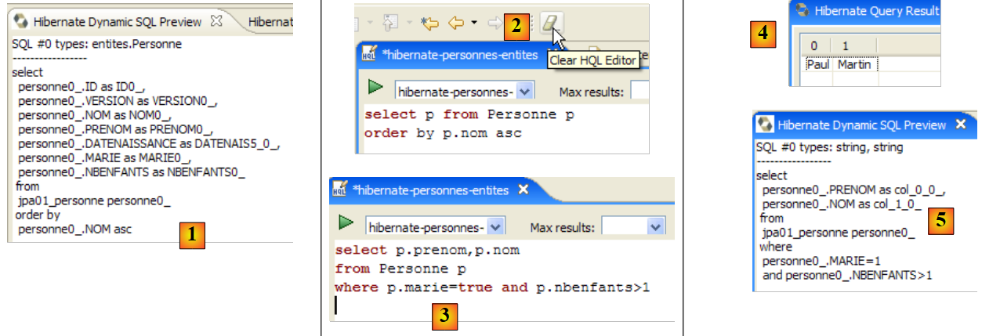 |
- في [2]، يمكنك مسح أمر HQL السابق
- في [3]، يمكنك تنفيذ أمر جديد
- في [4]، النتيجة
- في [5]، الأمر SQL الذي تم تنفيذه على قاعدة البيانات
يوفر محرر HQL المساعدة في كتابة أوامر HQL:
 |
- في [1]: بمجرد أن يدرك المحرر أن p هو كائن من نوع Person، يمكنه اقتراح حقول p أثناء الكتابة.
- في [2]: استعلام HQL غير صحيح. يجب كتابة where p.marie=true.
- في [3]: يتم الإبلاغ عن الخطأ في نافذة [معاينة SQL]
ندعو القارئ إلى إصدار أوامر HQL/JPQL أخرى على قاعدة البيانات.
2.1.13. عميل JPA ثانٍ
لنعد إلى منظور Java للمشروع:
|
- [InitDB.java] هو برنامج قام بإدراج بضعة صفوف في جدول [jpa01_personne] في قاعدة البيانات. وقد مكنتنا دراسة كوده من فهم أساسيات واجهة برمجة تطبيقات JPA.
- [Main.java] هو برنامج يقوم بعمليات CRUD على الجدول [jpa01_personne]. سيسمح لنا فحص كوده بإعادة النظر في المفاهيم الأساسية لسياق الاستمرارية ودورة حياة الكائنات داخل هذا السياق.
2.1.13.1. بنية الكود
سيُجري [Main.java] سلسلة من الاختبارات، صُمم كل منها لإظهار جانب معين من JPA:
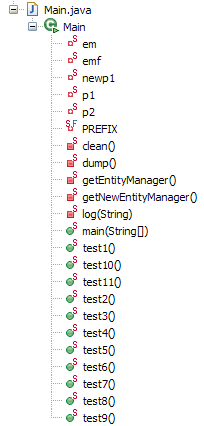 |
تقوم الطريقة [main]
- تستدعي بالتتابع الطرق من test1 إلى test11. سنعرض كود كل من هذه الطرق على حدة.
- كما تستخدم طرقًا مساعدة خاصة: clean، وdump، وlog، وgetEntityManager، وgetNewEntityManager.
نقدم الطريقة الرئيسية وما يُسمى بالطرق المساعدة:
package tests;
...
import entites.Personne;
@SuppressWarnings("unchecked")
public class Main {
// constant
private final static String TABLE_NAME = "jpa01_personne";
// Persistence context
private static EntityManagerFactory emf = Persistence.createEntityManagerFactory("jpa");
private static EntityManager em = null;
// shared objects
private static Personne p1, p2, newp1;
public static void main(String[] args) throws Exception {
// base cleaning
log("clean");clean();
// dump table
dump();
// test1
log("test1");test1();
...
// test11
log("test11");test11();
// fine persistence context
if (em.isOpen())
em.close();
// closure EntityManagerFactory
emf.close();
}
// retrieve the current EntityManager
private static EntityManager getEntityManager() {
if (em == null || !em.isOpen()) {
em = emf.createEntityManager();
}
return em;
}
// pick up a new EntityManager
private static EntityManager getNewEntityManager() {
if (em != null && em.isOpen()) {
em.close();
}
em = emf.createEntityManager();
return em;
}
// table content display
private static void dump() {
// current persistence context
EntityManager em = getEntityManager();
// start of transaction
EntityTransaction tx = em.getTransaction();
tx.begin();
// people display
System.out.println("[personnes]");
for (Object p : em.createQuery("select p from Personne p order by p.nom asc").getResultList()) {
System.out.println(p);
}
// end transaction
tx.commit();
}
// raz BD
private static void clean() {
// persistence context
EntityManager em = getEntityManager();
// start of transaction
EntityTransaction tx = em.getTransaction();
tx.begin();
// delete elements from the PERSONNES table
em.createNativeQuery("delete from " + TABLE_NAME).executeUpdate();
// end transaction
tx.commit();
}
// logs
private static void log(String message) {
System.out.println("main : ----------- " + message);
}
// object creation
public static void test1() throws ParseException {
...
}
// modify a context object
public static void test2() {
...
}
// request items
public static void test3() {
...
}
// delete an object belonging to the persistence context
public static void test4() {
....
}
// detach, reattach and modify
public static void test5() {
...
}
// delete an object not belonging to the persistence context
public static void test6() {
...
}
// modify an object not belonging to the persistence context
public static void test7() {
...
}
// reattach an object to the persistence context
public static void test8() {
...
}
// a select request causes synchronization
// with the persistence context
public static void test9() {
....
}
// version control (optimistic locking)
public static void test10() {
...
}
// transaction rollback
public static void test11() throws ParseException {
...
}
}
- السطر 13: يتم إنشاء كائن EntityManagerFactory (emf) من وحدة الاستمرارية JPA المحددة في [persistence.xml]. سيسمح لنا ذلك بإنشاء سياقات استمرارية متنوعة في جميع أنحاء التطبيق.
- السطر 14: سياق استمرارية EntityManager لم يتم تهيئته بعد
- السطر 17: ثلاثة كائنات [Person] مشتركة بين الاختبارات
- السطر 21: يتم مسح جدول jpa01_personne ثم عرضه في السطر 24 للتأكد من أننا نبدأ بجدول فارغ.
- الأسطر 27-31: سلسلة من الاختبارات
- السطران 34-35: إغلاق سياق الاستمرارية إذا كان مفتوحًا.
- السطر 38: يتم إغلاق كائن EntityManagerFactory emf.
- الأسطر 42-47: تُرجع الطريقة [getEntityManager] EntityManager الحالي (أو سياق الثبات) أو تنشئ واحدًا جديدًا إذا لم يكن موجودًا (الأسطر 43-44).
- الأسطر 50-56: تُرجع الطريقة [getNewEntityManager] سياق استمرارية جديدًا. إذا كان هناك سياق موجود مسبقًا، يتم إغلاقه (الأسطر 51-52)
- الأسطر 59-72: تعرض طريقة [dump] محتويات الجدول [jpa01_personne]. وقد سبق أن صادفنا هذا الرمز في [InitDB].
- الأسطر 75-85: تقوم الطريقة [clean] بإفراغ الجدول [jpa01_personne]. وقد سبق أن رأينا هذا الكود في [InitDB].
- الأسطر 88-90: تعرض طريقة [log] الرسالة التي تم تمريرها إليها كمعلمة على وحدة التحكم بحيث يتم ملاحظتها.
يمكننا الآن الانتقال إلى دراسة الاختبارات.
2.1.13.2. الاختبار 1
فيما يلي كود الاختبار 1:
// création d'objets
public static void test1() throws ParseException {
// contexte de persistance
EntityManager em = getEntityManager();
// création personnes
p1 = new Personne("Martin", "Paul", new SimpleDateFormat("dd/MM/yy").parse("31/01/2000"), true, 2);
p2 = new Personne("Durant", "Sylvie", new SimpleDateFormat("dd/MM/yy").parse("05/07/2001"), false, 0);
// début transaction
EntityTransaction tx = em.getTransaction();
tx.begin();
// persistance des personnes
em.persist(p1);
em.persist(p2);
// fin transaction
tx.commit();
// on affiche la table
dump();
}
لقد رأينا هذا الكود من قبل في [InitDB]: فهو ينشئ شخصين ويضعهما في سياق الاستمرارية.
- السطر 4: نسترد سياق الاستمرارية الحالي
- السطران 6-7: إنشاء الشخصين
- الأسطر 9–15: يتم وضع الشخصين في سياق الاستمرارية ضمن معاملة
- السطر 15: نظرًا لأن المعاملة قد تم تنفيذها، يتم مزامنة سياق الاستمرارية مع قاعدة البيانات. سيتم إضافة الشخصين إلى الجدول [jpa01_personne].
- السطر 17: يتم عرض الجدول
إخراج وحدة التحكم لهذا الاختبار الأول هو كما يلي:
main : ----------- test1
[personnes]
[2,0,Durant,Sylvie,05/07/2001,false,0]
[1,0,Martin,Paul,31/01/2000,true,2]
2.1.13.3. اختبار 2
فيما يلي كود الاختبار 2:
// modifier un objet du contexte
public static void test2() {
// contexte de persistance
EntityManager em = getEntityManager();
// début transaction
EntityTransaction tx = em.getTransaction();
tx.begin();
// on incrémente le nbre d'enfants de p1
p1.setNbenfants(p1.getNbenfants() + 1);
// on modifie son état marital
p1.setMarie(false);
// l'objet p1 est automatiquement sauvegardé (dirty checking)
// lors de la prochaine synchronisation (commit ou select)
// fin transaction
tx.commit();
// on affiche la nouvelle table
dump();
}
- يهدف الاختبار 2 إلى تعديل كائن في سياق الاستمرارية ثم عرض محتويات الجدول لمعرفة ما إذا كان التعديل قد تم
- السطر 4: استرداد سياق الاستمرارية الحالي
- السطران 6 و7: سيتم تنفيذ العمليات ضمن معاملة
- السطران 9 و11: تم تغيير عدد الأبناء للشخص p1، وكذلك حالته الاجتماعية
- السطر 15: نهاية المعاملة، وبالتالي تتم مزامنة سياق الاستمرارية مع قاعدة البيانات
- السطر 17: عرض الجدول
إخراج وحدة التحكم لاختبار 2 هو كما يلي:
- السطر 4: الشخص p1 قبل التعديل
- السطر 8: الشخص p1 بعد التعديل. لاحظ أن رقم الإصدار قد تغير إلى 1. يتم زيادة هذا الرقم بمقدار 1 في كل مرة يتم فيها تحديث السطر.
2.1.13.4. الاختبار 3
فيما يلي كود الاختبار 3:
// demander des objets
public static void test3() {
// contexte de persistance
EntityManager em = getEntityManager();
// début transaction
EntityTransaction tx = em.getTransaction();
tx.begin();
// on demande la personne p1
Personne p1b = em.find(Personne.class, p1.getId());
// parce que p1 est déjà dans le contexte de persistance, il n'y a pas eu d'accès à la base
// p1b et p1 sont les mêmes références
System.out.format("p1==p1b ? %s%n", p1 == p1b);
// demander un objet qui n'existe pas rend 1 pointeur null
Personne px = em.find(Personne.class, -4);
System.out.format("px==null ? %s%n", px == null);
// fin transaction
tx.commit();
}
- يركز الاختبار 3 على طريقة [EntityManager.find]، التي تسترد كائنًا من قاعدة البيانات وتضعه في سياق الاستمرارية. لن نوضح بعد الآن المعاملة التي تحدث في جميع الاختبارات ما لم يتم استخدامها بطريقة غير معتادة.
- السطر 9: نطلب من سياق الاستمرارية الشخص الذي له نفس المفتاح الأساسي مثل الشخص p1. هناك حالتان:
- p1 موجود بالفعل في سياق الاستمرارية. هذه هي الحالة هنا. لذلك، لا يتم إجراء أي وصول إلى قاعدة البيانات. تعيد طريقة find ببساطة مرجعًا إلى الكائن المستمر.
- p1 غير موجود في سياق الاستمرارية. في هذه الحالة، يتم إجراء استعلام قاعدة البيانات باستخدام المفتاح الأساسي المقدم. يتم إضافة السجل المسترد إلى سياق الاستمرارية، وتُرجع find مرجعًا إلى هذا الكائن المستمر الجديد.
- السطر 12: نتحقق من أن `find` قد أعادت الإشارة إلى الكائن `p1` الموجود بالفعل في السياق
- السطر 14: نطلب كائنًا لا يوجد في سياق الاستمرارية ولا في قاعدة البيانات. ثم تُرجع طريقة find مؤشرًا فارغًا. يتم التحقق من ذلك في السطر 15.
إخراج وحدة التحكم لاختبار 3 هو كما يلي:
2.1.13.5. الاختبار 4
فيما يلي كود الاختبار 4:
// supprimer un objet appartenant au contexte de persistance
public static void test4() {
// contexte de persistance
EntityManager em = getEntityManager();
// début transaction
EntityTransaction tx = em.getTransaction();
tx.begin();
// on supprime l'objet persisté p2
em.remove(p2);
// fin transaction
tx.commit();
// on affiche la nouvelle table
dump();
}
- يركز الاختبار 4 على طريقة [EntityManager.remove]، التي تسمح لك بإزالة عنصر من سياق الاستمرارية وبالتالي من قاعدة البيانات.
- السطر 9: تمت إزالة person p2 من سياق الاستمرارية
- السطر 11: مزامنة السياق مع قاعدة البيانات
- السطر 13: عرض الجدول. عادةً، لا ينبغي أن يكون الشخص p2 موجودًا هناك بعد الآن.
إخراج وحدة التحكم للاختبار 4 هو كما يلي:
- السطر 3: الشخص p2 في test1
- الأسطر 12-14: لم تعد موجودة بعد الاختبار 4.
2.1.13.6. الاختبار 5
فيما يلي كود الاختبار 5:
// détacher, réattacher et modifier
public static void test5() {
// nouveau contexte de persistance
EntityManager em = getNewEntityManager();
// début transaction
EntityTransaction tx = em.getTransaction();
tx.begin();
// p1 détaché
Personne oldp1=p1;
// on réattache p1 au nouveau contexte
p1 = em.find(Personne.class, p1.getId());
// vérification
System.out.format("p1==oldp1 ? %s%n", p1 == oldp1);
// fin transaction
tx.commit();
// on incrémente le nbre d'enfants de p1
p1.setNbenfants(p1.getNbenfants() + 1);
// on affiche la nouvelle table
dump();
}
- يختبر الاختبار 5 دورة حياة الكائنات الدائمة عبر عدة سياقات استمرارية متتالية. حتى الآن، كنا نستخدم دائمًا نفس سياق الاستمرارية عبر الاختبارات المختلفة.
- السطر 4: يتم طلب سياق استمرارية جديد. تغلق طريقة [getNewEntityManager] السياق السابق وتفتح سياقًا جديدًا. ونتيجة لذلك، لم تعد الكائنات p1 و p2 التي يحتفظ بها التطبيق في حالة استمرارية. فقد كانت تنتمي إلى سياق تم إغلاقه. ونقول إنها في حالة منفصلة. فهي لا تنتمي إلى سياق الاستمرارية الجديد.
- السطران 6-7: بداية المعاملة. هنا، سيتم استخدامها بطريقة غير معتادة.
- السطر 9: نلاحظ عنوان الكائن p1 المنفصل الآن.
- السطر 11: يتم الاستعلام عن سياق الاستمرارية للشخص p1 (باستخدام المفتاح الأساسي لـ p1). نظرًا لأن السياق جديد، فإن الشخص p1 غير موجود فيه. لذلك سيتم إجراء استعلام قاعدة بيانات. سيتم وضع الكائن المسترد في السياق الجديد.
- السطر 13: نتحقق من أن الكائن الدائم p1 في السياق يختلف عن الكائن oldp1، الذي كان الكائن المنفصل القديم p1.
- السطر 15: اكتملت المعاملة
- السطر 17: نقوم بتعديل الكائن p1 الجديد الدائم خارج المعاملة. ماذا يحدث في هذه الحالة؟ نريد أن نعرف.
- السطر 19: نطلب عرض الجدول. لاحظ أنه بسبب عبارة `SELECT` الصادرة عن طريقة `dump`، تتم مزامنة سياق الاستمرارية تلقائيًا مع قاعدة البيانات.
إخراج وحدة التحكم لاختبار 5 هو كما يلي:
- السطر 5: لقد قامت طريقة find بالفعل بالوصول إلى قاعدة البيانات؛ وإلا لكان المؤشران متساويين
- السطران 7 و 3: لقد زاد عدد أبناء p1 بالفعل بمقدار 1. وبالتالي، تم أخذ التعديل، الذي تم إجراؤه خارج المعاملة، في الاعتبار. يعتمد هذا في الواقع على نظام إدارة قواعد البيانات المستخدم. في نظام إدارة قواعد البيانات، يتم دائمًا تنفيذ عبارة SQL ضمن معاملة. إذا لم يبدأ عميل JPA معاملة صريحة بنفسه، فسيبدأ نظام إدارة قواعد البيانات معاملة ضمنية. هناك حالتان شائعتان:
- 1 - كل عبارة SQL فردية هي جزء من معاملة، تفتح قبل العبارة وتغلق بعدها. يُعرف هذا بوضع autocommit. وبالتالي، يتصرف كل شيء كما لو أن عميل JPA كان يقوم بمعاملات لكل عبارة SQL.
- 2 - لا يكون نظام إدارة قواعد البيانات (DBMS) في وضع الالتزام التلقائي ويبدأ معاملة ضمنية عند أول جملة SQL يصدرها عميل JPA خارج المعاملة، تاركًا للعميل مهمة إغلاقها. تصبح جميع جمل SQL الصادرة عن عميل JPA عندئذ جزءًا من المعاملة الضمنية. يمكن أن تنتهي هذه المعاملة بسبب أحداث مختلفة: إغلاق العميل للاتصال، أو بدء معاملة جديدة، وما إلى ذلك.
يعتمد هذا الموقف على تكوين نظام إدارة قواعد البيانات (DBMS). وبالتالي، فإن الكود غير قابل للنقل. سنعرض لاحقًا مثالًا على كود خالٍ من المعاملات وسنرى أن أنظمة إدارة قواعد البيانات (DBMS) لا تتصرف جميعها بنفس الطريقة مع هذا الكود. لذلك، سنعتبر العمل خارج نطاق المعاملات خطأً في البرمجة.
- السطر 7: لاحظ أن رقم الإصدار قد تم تحديثه إلى 2.
2.1.13.7. الاختبار 6
فيما يلي كود الاختبار 6:
// supprimer un objet n'appartenant pas au contexte de persistance
public static void test6() {
// nouveau contexte de persistance
EntityManager em = getNewEntityManager();
// début transaction
EntityTransaction tx = em.getTransaction();
tx.begin();
// on supprime p1 qui n'appartient pas au nouveau contexte
try {
em.remove(p1);
// fin transaction
tx.commit();
} catch (RuntimeException e1) {
System.out.format("Erreur à la suppression de p1 : [%s,%s]%n", e1.getClass().getName(), e1.getMessage());
// on fait un rollback de la transaction
try {
if (tx.isActive())
tx.rollback();
} catch (RuntimeException e2) {
System.out.format("Erreur au rollback [%s,%s]%n", e2.getClass().getName(), e2.getMessage());
}
}
// on affiche la nouvelle table
dump();
}
- يحاول الاختبار 6 حذف كائن لا ينتمي إلى سياق الاستمرارية.
- السطر 4: يتم طلب سياق استمرارية جديد. وبالتالي يتم إغلاق السياق القديم، وتصبح الكائنات التي كان يحتوي عليها منفصلة. وهذا هو الحال بالنسبة للكائن p1 من الاختبار 5 السابق.
- السطران 6 و7: بدء المعاملة.
- السطر 10: يتم حذف الكائن المنفصل p1. ونحن نعلم أن هذا سيؤدي إلى استثناء، لذا قمنا بتغليف العملية في كتلة try/catch.
- السطر 12: لن يتم تنفيذ الإقرار.
- السطور 16-21: يجب أن تنتهي المعاملة بالتثبيت (يتم التحقق من صحة جميع العمليات في المعاملة) أو التراجع (يتم التراجع عن جميع العمليات في المعاملة). حدث استثناء، لذا نقوم بالتراجع عن المعاملة. لا يوجد ما يمكن التراجع عنه لأن العملية الوحيدة في المعاملة فشلت، لكن التراجع ينهي المعاملة. هذه هي المرة الأولى التي نستخدم فيها عملية [EntityTransaction].rollback. كان يجب أن نفعل ذلك منذ الأمثلة الأولى. لم نفعل ذلك للحفاظ على بساطة الكود. ومع ذلك، يجب على القارئ أن يضع في اعتباره أنه يجب دائمًا مراعاة حالة التراجع عن المعاملة في الكود.
- السطر 24: نعرض الجدول. في العادة، لا ينبغي أن يكون قد طرأ عليه أي تغيير.
إخراج وحدة التحكم لاختبار 6 هو كما يلي:
- السطر 6: فشل حذف p1. توضح رسالة الاستثناء أنه تمت محاولة حذف كائن منفصل، وهو ليس جزءًا من السياق. وهذا غير ممكن.
- السطر 8: الشخص p1 لا يزال موجودًا.
2.1.13.8. الاختبار 7
فيما يلي كود الاختبار 7:
// modifier un objet n'appartenant pas au contexte de persistance
public static void test7() {
// nouveau contexte de persistance
EntityManager em = getNewEntityManager();
// début transaction
EntityTransaction tx = em.getTransaction();
tx.begin();
// on incrémente le nbre d'enfants de p1 qui n'appartient pas au nouveau contexte
p1.setNbenfants(p1.getNbenfants() + 1);
// fin transaction
tx.commit();
// on affiche la nouvelle table - elle n'a pas du changer
dump();
}
- يحاول الاختبار 7 تعديل كائن لا ينتمي إلى سياق الاستمرارية ويلاحظ تأثير ذلك على قاعدة البيانات. قد يتوقع المرء أنه لا يوجد أي تأثير. وهذا ما تظهره نتائج الاختبار.
- السطر 4: يتم طلب سياق استمرارية جديد. وبالتالي، لدينا سياق جديد لا يحتوي على أي كائنات مستمرة.
- السطران 6-7: بدء المعاملة.
- السطر 9: يتم تعديل الكائن المنفصل p1. هذه عملية لا تتضمن سياق الاستمرارية em. لذلك، لا ينبغي أن نتوقع حدوث استثناء أو أي شيء من هذا القبيل. إنها عملية أساسية على POJO.
- السطر 11: يقوم الإلتزام بمزامنة السياق مع قاعدة البيانات. هذا السياق فارغ. لذلك، تظل قاعدة البيانات دون تغيير.
- السطر 24: يتم عرض الجدول. عادةً، لا ينبغي أن يكون قد تغير.
إخراج وحدة التحكم للاختبار 7 هو كما يلي:
- السطر 7: لم يتغير الشخص p1 في قاعدة البيانات. لكن بالنسبة للاختبار التالي، سنضع في اعتبارنا أن عدد الأطفال في الذاكرة أصبح الآن 5.
2.1.13.9. الاختبار 8
فيما يلي كود الاختبار 8:
// réattacher un objet au contexte de persistance
public static void test8() {
// nouveau contexte de persistance
EntityManager em = getNewEntityManager();
// début transaction
EntityTransaction tx = em.getTransaction();
tx.begin();
// on réattache l'objet détaché p1 au nouveau contexte
newp1 = em.merge(p1);
// c'est newp1 qui fait désormais partie du contexte, pas p1
// fin transaction
tx.commit();
// on affiche la nouvelle table - le nbre d'enfants de p1 a du changer
dump();
}
- يُعيد الاختبار 8 ربط كائن منفصل بسياق الاستمرارية.
- السطر 4: يتم طلب سياق استمرارية جديد. وبالتالي، لدينا سياق جديد لا يحتوي على أي كائنات مستمرة.
- السطران 6-7: بدء المعاملة.
- السطر 9: يتم إعادة ربط الكائن المنفصل p1 بسياق الاستمرارية. يمكن أن تنطوي عملية الدمج على عدة سيناريوهات:
- الحالة 1: يوجد كائن ثابت ps1 في سياق الاستمرارية له نفس المفتاح الأساسي للكائن المنفصل p1. يتم نسخ محتويات p1 إلى ps1، وتُرجع عملية الدمج مرجعًا إلى ps1.
- الحالة 2: لا يوجد كائن ثابت ps1 في سياق الثبات له نفس المفتاح الأساسي للكائن المنفصل p1. ثم يتم الاستعلام عن قاعدة البيانات لتحديد ما إذا كان الكائن المطلوب موجودًا في قاعدة البيانات. إذا كان الأمر كذلك، يتم إدخال هذا الكائن إلى سياق الثبات، ويصبح الكائن الثابت ps1، ونعود إلى الحالة 1 السابقة.
- الحالة 3: لا يوجد كائن له نفس المفتاح الأساسي للكائن المنفصل p1، لا في سياق الاستمرارية ولا في قاعدة البيانات. ثم يتم إنشاء كائن [Person] جديد (new) ووضعه في سياق الاستمرارية. ثم نعود إلى الحالة 1.
- في النهاية: يظل الكائن المنفصل p1 منفصلاً. تُرجع عملية الدمج مرجعًا (هنا newp1) إلى الكائن الدائم ps1 الناتج عن الدمج. يجب أن يعمل تطبيق العميل الآن مع الكائن الدائم ps1 وليس مع الكائن المنفصل p1.
- لاحظ الفرق بين الحالتين 1 و 3 فيما يتعلق بعبارة SQL المستخدمة للدمج: في الحالتين 1 و 2، تكون عبارة UPDATE، بينما في الحالة 3، تكون عبارة INSERT.
- السطر 12: يقوم الأمر commit بمزامنة السياق مع قاعدة البيانات. لم يعد هذا السياق فارغًا. فهو يحتوي على الكائن newp1. سيتم الاحتفاظ بهذا الكائن في قاعدة البيانات.
- السطر 24: نعرض الجدول للتحقق منه.
إخراج وحدة التحكم لاختبار 8 هو كما يلي:
- كان عدد الأبناء لـ p1 هو 4 في الاختبار 6 (السطر 4)، ثم تغير إلى 5 في الاختبار 7 ولكن لم يتم حفظه في قاعدة البيانات (السطر 7). بعد الدمج، تم حفظ newp1 في قاعدة البيانات: السطر 10، لدينا الآن 5 أبناء.
- السطر 10: تم تحديث رقم إصدار newp1 إلى 3.
2.1.13.10. الاختبار 9
فيما يلي كود الاختبار 9:
// a select request causes synchronization
// with the persistence context
public static void test9() {
// persistence context
EntityManager em = getEntityManager();
// start of transaction
EntityTransaction tx = em.getTransaction();
tx.begin();
// increment the number of children of newp1
newp1.setNbenfants(newp1.getNbenfants() + 1);
// people display - the number of children in newp1 must have changed
System.out.println("[personnes]");
for (Object p : em.createQuery("select p from Personne p order by p.nom asc").getResultList()) {
System.out.println(p);
}
// end transaction
tx.commit();
}
- يوضح الاختبار 9 آلية مزامنة السياق التي تحدث تلقائيًا قبل جملة SELECT.
- السطر 5: لم يتغير سياق الاستمرارية. وبالتالي، فإن newp1 موجود داخله.
- السطران 7-8: بدء المعاملة.
- السطر 10: يزداد عدد العناصر التابعة للكائن الدائم newp1 بمقدار 1 (5 -> 6).
- الأسطر 12-15: يتم عرض الجدول باستخدام جملة SELECT. سيتم مزامنة السياق مع قاعدة البيانات قبل تنفيذ جملة SELECT.
- السطر 17: نهاية المعاملة
لعرض عملية المزامنة، قم بتمكين إخراج سجل Hibernate في وضع DEBUG (log4j.properties):
# Root logger option
log4j.rootLogger=ERROR, stdout
# Hibernate logging options (INFO only shows startup messages)
log4j.logger.org.hibernate=DEBUG
إخراج وحدة التحكم للاختبار 9 هو كما يلي:
- السطر 1: بدء الاختبار 9
- الأسطر 2–6: تبدأ معاملة JDBC. يتم تعطيل وضع الالتزام التلقائي لنظام إدارة قواعد البيانات (السطر 5)
- السطر 7: يتم تشغيل العرض بواسطة السطر 12 من كود Java. ستقوم الأسطر التالية من كود Java بتشغيل SELECT وبالتالي مزامنة سياق الاستمرارية مع قاعدة البيانات.
- السطر 8: تم بالفعل تنفيذ استعلام JPQL الذي نريد تنفيذه. يعثر Hibernate عليه في ذاكرة التخزين المؤقتة "للاستعلامات المعدة مسبقًا".
- السطر 9: يعلن Hibernate أنه سيقوم بتفريغ سياق الاستمرارية
- السطران 11-12: يكتشف Hibernate (Hb) أن كيان Person#1 (بالمفتاح الأساسي 1) قد تم تعديله (غير نظيف).
- السطران 12-13: يعلن Hb أنه يقوم بتحديث هذا العنصر ويزيد رقم إصداره من 3 إلى 4.
- السطر 15: ستؤدي مزامنة السياق إلى 0 عملية إدراج و1 عملية تحديث و0 عملية حذف
- الأسطر 17-34: مزامنة السياق (التفريغ). ملاحظة: زيادة الإصدار (السطر 19)، وعبارة تحديث SQL المعدة مسبقًا (السطر 21)، وقيم المعلمات لعبارة التحديث (الأسطر 24-31).
- السطر 35: يبدأ بيان SELECT
- السطر 38: عبارة SQL المراد تنفيذها
- السطر 40: يعرض SELECT صفًا واحدًا فقط
- السطر 42: يكتشف Hb أنه يحتوي بالفعل، في سياق الاستمرارية الخاص به، على كيان Person#1 الذي أعادته SELECT من قاعدة البيانات. لذلك لا يقوم بنسخ الصف الذي تم الحصول عليه من قاعدة البيانات إلى السياق، وهي عملية يطلق عليها "hydration".
- السطر 43: يتحقق مما إذا كانت الكائنات التي أعادها SELECT تحتوي على تبعيات (عادةً مفاتيح خارجية) تحتاج أيضًا إلى التحميل (مجموعات غير كسولة). هنا، لا توجد أي تبعيات.
- السطر 44: عرض تم تشغيله بواسطة كود Java
- السطر 45: نهاية معاملة JDBC المطلوبة بواسطة كود Java
- السطر 46: تبدأ المزامنة التلقائية للسياق، والتي تحدث أثناء عمليات الالتزام.
- السطر 48: يكتشف Hb أن السياق لم يتغير منذ آخر مزامنة.
- السطر 50: نهاية عملية الالتزام.
مرة أخرى، تثبت سجلات Hibernate في وضع DEBUG أنها مفيدة جدًا لفهم ما يفعله Hibernate بالضبط.
2.1.13.11. الاختبار رقم 10
فيما يلي كود الاختبار 10:
// contrôle de version (optimistic locking)
public static void test10() {
// contexte de persistance
EntityManager em = getEntityManager();
// début transaction
EntityTransaction tx = em.getTransaction();
tx.begin();
// incrémenter la version de newp1 directement dans la base (native query)
em.createNativeQuery(String.format("update %s set VERSION=VERSION+1 WHERE ID=%d", TABLE_NAME, newp1.getId())).executeUpdate();
// fin transaction
tx.commit();
// début nouvelle transaction
tx = em.getTransaction();
tx.begin();
// on incrémente le nbre d'enfants de newp1
newp1.setNbenfants(newp1.getNbenfants() + 1);
// fin transaction - elle doit échouer car newp1 n'a plus la bonne version
try {
tx.commit();
} catch (RuntimeException e1) {
System.out.format("Erreur lors de la mise à jour de newp1 [%s,%s,%s,%s]%n", e1.getClass().getName(), e1.getMessage(), e1.getCause().getClass().getName(), e1.getCause().getMessage());
// on fait un rollback de la transaction
try {
if (tx.isActive())
tx.rollback();
} catch (RuntimeException e2) {
System.out.format("Erreur au rollback [%s,%s]%n", e2.getClass().getName(), e2.getMessage());
}
}
// on ferme le contexte qui n'est plus à jour
em.close();
// dump de la table - la version de p1 a du changer
dump();
}
- يوضح الاختبار 10 الآلية التي أدخلها حقل الإصدار في @Entity Person، والذي تم توضيحه بعلامة JPA @Version. لقد أوضحنا أن هذه العلامة تؤدي إلى زيادة قيمة العمود المرتبط بعلامة @Version في قاعدة البيانات مع كل تحديث يتم إجراؤه على الصف الذي ينتمي إليه. تتطلب هذه الآلية، المعروفة أيضًا باسم القفل المتفائل، أن يكون لدى العميل الذي يرغب في تعديل كائن O في قاعدة البيانات أحدث إصدار من هذا الكائن. إذا لم يكن الأمر كذلك، فهذا يعني أن الكائن قد تم تعديله منذ أن حصل عليه العميل، ويجب إخطار العميل بذلك.
- السطر 4: لا نغير سياق الاستمرارية. وبالتالي، فإن newp1 موجود بداخله.
- السطران 6-7: بداية معاملة.
- السطر 9: يتم زيادة إصدار الكائن newp1 بمقدار 1 (4 -> 5) مباشرة في قاعدة البيانات. تتجاوز الاستعلامات من نوع nativeQuery سياق الاستمرارية وتكتب مباشرة في قاعدة البيانات. والنتيجة هي أن الكائن الدائم newp1 وتمثيله في قاعدة البيانات لم يعودا يحملان نفس الإصدار.
- السطر 10: نهاية المعاملة الأولى
- السطران 13-14: بداية معاملة ثانية
- السطر 16: يتم زيادة عدد العناصر التابعة للكائن الدائم newp1 بمقدار 1 (6 -> 7).
- السطر 19: نهاية المعاملة. وبالتالي، تتم المزامنة. سيؤدي هذا إلى تحديث عدد العناصر التابعة لـ newp1 في قاعدة البيانات. سيفشل هذا لأن الكائن الدائم newp1 له الإصدار 4، في حين أن الكائن المراد تحديثه في قاعدة البيانات له الإصدار 5. سيتم إلقاء استثناء، وهو ما يبرر وجود كتلة try/catch في الكود.
- السطر 21: يتم عرض الاستثناء وسبب حدوثه.
- السطر 25: التراجع عن المعاملة
- السطر 33: عرض الجدول: يجب أن نرى أن إصدار newp1 هو 5 في قاعدة البيانات.
إخراج وحدة التحكم لاختبار 10 هو كما يلي:
- السطر 5: يؤدي التثبيت بالفعل إلى إثارة استثناء. وهو من النوع [javax.persistence.RollbackException]. الرسالة المرتبطة به غامضة. إذا نظرنا إلى سبب هذا الاستثناء (Exception.getCause)، نرى أن لدينا استثناء Hibernate بسبب حقيقة أننا نحاول تعديل صف في قاعدة البيانات دون أن يكون لدينا الإصدار الصحيح.
- السطر 7: نرى أن إصدار newp1 في قاعدة البيانات قد تم تعيينه بالفعل إلى 5 بواسطة nativeQuery.
2.1.13.12. الاختبار 11
فيما يلي كود الاختبار 11:
// transaction rollback
public static void test11() throws ParseException {
// persistence context
EntityManager em = getEntityManager();
// start of transaction
EntityTransaction tx = null;
try {
tx = em.getTransaction();
tx.begin();
// reattach p1 to the context by fetching it from the base
p1 = em.find(Personne.class, p1.getId());
// increment the number of children in p1
p1.setNbenfants(p1.getNbenfants() + 1);
// display people - the number of children in p1 must have changed
System.out.println("[personnes]");
for (Object p : em.createQuery("select p from Personne p order by p.nom asc").getResultList()) {
System.out.println(p);
}
// creation of 2 persons with identical names, which is forbidden by the DDL
Personne p3 = new Personne("X", "Paul", new SimpleDateFormat("dd/MM/yy").parse("31/01/2000"), true, 2);
Personne p4 = new Personne("X", "Paul", new SimpleDateFormat("dd/MM/yy").parse("31/01/2000"), true, 2);
// persistence of people
em.persist(p3);
em.persist(p4);
// end transaction
tx.commit();
} catch (RuntimeException e1) {
// we had a problem
System.out.format("Erreur dans transaction [%s,%s,%s,%s,%s,%s]%n", e1.getClass().getName(), e1.getMessage(),
e1.getCause().getClass().getName(), e1.getCause().getMessage(), e1.getCause().getCause().getClass().getName(), e1.getCause().getCause()
.getMessage());
try {
if (tx.isActive())
tx.rollback();
} catch (RuntimeException e2) {
System.out.format("Erreur au rollback [%s]%n", e2.getMessage());
}
// we abandon the current context
em.clear();
}
// dump - table must not have changed due to rollback
dump();
}
- يركز الاختبار 11 على آلية التراجع عن المعاملة. تعمل المعاملة على أساس "كل شيء أو لا شيء": إما أن يتم تنفيذ جميع عمليات SQL التي تحتوي عليها بنجاح (التثبيت) أو يتم التراجع عنها جميعًا إذا فشلت أي منها (التراجع).
- السطر 4: نواصل باستخدام نفس سياق الاستمرارية. قد يتذكر القارئ أن السياق تم إغلاقه عقب التعطل في الاختبار السابق. في هذه الحالة، تُرجع [getEntityManager] سياقًا جديدًا تمامًا، وبالتالي فارغًا.
- الأسطر 7-27: كتلة try/catch واحدة لمعالجة أي مشكلات قد تنشأ
- السطران 8-9: بداية معاملة ستحتوي على عدة عمليات SQL
- السطر 11: يتم استرداد p1 من قاعدة البيانات ووضعه في السياق
- السطر 13: يتم زيادة عدد العناصر التابعة لـ p1 (6 → 7)
- الأسطر 15–18: نعرض محتويات قاعدة البيانات، مما سيؤدي إلى مزامنة السياق. في قاعدة البيانات، سيتغير عدد العناصر التابعة لـ p1 إلى 7، وهو ما يجب أن تؤكده مخرجات وحدة التحكم.
- السطران 20-21: إنشاء شخصين، p3 و p4، يحملان نفس الاسم. ومع ذلك، فإن حقل الاسم في @Entity Person يحتوي على السمة unique=true، مما يؤدي إلى قيد فريد على عمود NAME في جدول [jpa01_personne].
- السطران 23-24: تتم إضافة الشخصين p3 و p4 إلى سياق الاستمرارية.
- السطر 26: يتم تثبيت المعاملة. ويلي ذلك مزامنة ثانية للسياق، بعد أن حدثت المزامنة الأولى أثناء عبارة SELECT. سيصدر JPA عبارات SQL INSERT اثنتين للشخصين p3 و p4. سيتم إدراج p3. بالنسبة لـ p4، سيقوم نظام إدارة قواعد البيانات (DBMS) بإصدار استثناء لأن p4 يحمل نفس اسم p3. وبالتالي، لا يتم إدراج p4، ويقوم برنامج تشغيل JDBC بإصدار استثناء إلى العميل.
- السطر 27: نتعامل مع الاستثناء
- الأسطر 29-31: نعرض الاستثناء والسببين السابقين له في سلسلة الاستثناءات التي قادتنا إلى هذه النقطة.
- السطر 34: نقوم بإلغاء المعاملة النشطة حاليًا. بدأت هذه المعاملة في السطر 9 من كود Java. ومنذ ذلك الحين، تم تنفيذ عملية تحديث لتغيير عدد الأبناء لـ p1، تليها عملية إدراج للشخص p3. سيتم التراجع عن كل هذا من خلال عملية الإلغاء.
- السطر 39: يتم مسح سياق الثبات
- السطر 42: يتم عرض الجدول [jpa01_personne]. يجب أن نتحقق من أن p1 لا يزال لديه 6 أطفال وأن p3 و p4 غير موجودين في الجدول.
إخراج وحدة التحكم للاختبار 11 هو كما يلي:
main : ----------- test11
[personnes]
[1,6,Martin,Paul,31/01/2000,false,7]
14:50:30,312 ERROR JDBCExceptionReporter:72 - Duplicate entry 'X' for key 2
Erreur dans transaction [javax.persistence.EntityExistsException,org.hibernate.exception.ConstraintViolationException: could not insert: [entites.Personne],org.hibernate.exception.ConstraintViolationException,could not insert: [entites.Personne],java.sql.SQLException,Duplicate entry 'X' for key 2]
[personnes]
[1,5,Martin,Paul,31/01/2000,false,6]
- السطر 3: تغير عدد الأبناء لـ p1 من 6 إلى 7 في قاعدة البيانات؛ تم تحديث إصدار p1 إلى 6.
- السطر 4: الاستثناء الذي تم اكتشافه أثناء تنفيذ المعاملة. إذا قرأت بعناية، يمكنك أن ترى أن السبب هو تكرار المفتاح X (الاسم). إن إدراج p4 هو ما تسبب في هذا الخطأ، لأن p3، الذي تم إدراجه بالفعل، يحمل أيضًا الاسم X.
- السطر 7: الجدول بعد التراجع. عاد p1 إلى الإصدار 5 وأصبح لديه 6 أطفال مرة أخرى؛ ولم يتم إدراج p3 و p4.
2.1.13.13. الاختبار 12
فيما يلي كود الاختبار 12:
// we do the same thing again but without the transactions
// we obtain the same result as before with SGBD : FIREBIRD, ORACLE XE, POSTGRES, MYSQL5
// with SQLSERVER we have an empty table. The connection is left in a state that prevents reexecution
// of the program. The server must then be restarted.
// idem with SGBD Derby
// HSQL inserts 1st person - there is no rollback
public static void test12() throws ParseException {
// reconnect p1
p1 = em.find(Personne.class, p1.getId());
// increment the number of children in p1
p1.setNbenfants(p1.getNbenfants() + 1);
// display people - the number of children in p1 must have changed
System.out.println("[personnes]");
for (Object p : em.createQuery("select p from Personne p order by p.nom asc").getResultList()) {
System.out.println(p);
}
// creation of 2 persons with identical names, which is forbidden by the DDL
Personne p3 = new Personne("X", "Paul", new SimpleDateFormat("dd/MM/yy").parse("31/01/2000"), true, 2);
Personne p4 = new Personne("X", "Paul", new SimpleDateFormat("dd/MM/yy").parse("31/01/2000"), true, 2);
// persistence of people
em.persist(p3);
em.persist(p4);
// dump, which will sync the em context with the BD
try {
dump();
} catch (RuntimeException e3) {
System.out.format("Erreur dans dump [%s,%s,%s,%s]%n", e3.getClass().getName(), e3.getMessage(), e3.getCause().getClass().getName(), e3
.getCause().getMessage());
}
// we close the current context
em.close();
// dump
dump();
}
- يكرر الاختبار 12 نفس العملية التي أجريت في الاختبار 11 ولكن خارج نطاق المعاملة. نريد أن نرى ما يحدث في هذه الحالة.
- الأسطر 1-6: تعرض نتائج الاختبار مع أنظمة إدارة قواعد البيانات المختلفة:
- مع عدد من أنظمة إدارة قواعد البيانات (Firebird، Oracle، MySQL5، Postgres)، نحصل على نفس النتيجة كما في الاختبار 11. يشير هذا إلى أن أنظمة إدارة قواعد البيانات هذه بدأت معاملة من تلقاء نفسها تغطي جميع عبارات SQL المستلمة حتى تلك التي تسببت في الخطأ، وأنها بدأت عملية التراجع بنفسها.
- مع أنظمة إدارة قواعد البيانات الأخرى (SQL Server، Apache Derby)، يتعطل التطبيق و/أو نظام إدارة قواعد البيانات.
- مع نظام إدارة قواعد البيانات HSQLDB، يبدو أن المعاملة التي فتحها نظام إدارة قواعد البيانات في وضع الالتزام التلقائي: يتم تثبيت تعديل عدد العناصر التابعة لـ p1 وإدراج p3. فقط إدراج p4 يفشل.
وبالتالي، نحصل على نتيجة تعتمد على نظام إدارة قواعد البيانات، مما يجعل التطبيق غير قابل للنقل. لاحظ أن العمليات على سياق الاستمرارية يجب أن تتم دائمًا ضمن معاملة.
2.1.14. تغيير نظام إدارة قواعد البيانات
دعونا نعيد النظر في بنية الاختبار لمشروعنا الحالي:
 |
لا يرى تطبيق العميل [3] سوى واجهة JPA [5]. فهو لا يرى لا التنفيذ الفعلي لها ولا نظام إدارة قواعد البيانات المستهدف. لذلك يجب أن نكون قادرين على تغيير هذين العنصرين من السلسلة دون إجراء تغييرات على العميل [3]. وهذا ما سنحاول الآن توضيحه، بدءًا بتغيير نظام إدارة قواعد البيانات. حتى الآن، كنا نستخدم MySQL5. ونقدم ستة أنظمة أخرى موصوفة في الملاحق (القسم 5)، على أمل أن يكون من بينها نظام إدارة قواعد البيانات المفضل لدى القارئ.
على أي حال، فإن التعديل الذي يجب إجراؤه في مشروع Eclipse بسيط (انظر أدناه): استبدل ملف التكوين persistence.xml [1] لطبقة JPA بواحد من الملفات الموجودة في مجلد conf [2] الخاص بالمشروع. برامج تشغيل JDBC الخاصة بنظم إدارة قواعد البيانات هذه موجودة بالفعل في مكتبات [jpa-divers] [3] و[4].
 |
2.1.14.1. Oracle 10g Express
يتم عرض Oracle 10g Express في الملاحق في القسم 5.7. وفيما يلي ملف persistence.xml الخاص بـ Oracle:
<?xml version="1.0" encoding="UTF-8"?>
<persistence version="1.0" xmlns="http://java.sun.com/xml/ns/persistence">
<persistence-unit name="jpa" transaction-type="RESOURCE_LOCAL">
<!-- provider -->
<provider>org.hibernate.ejb.HibernatePersistence</provider>
<properties>
<!-- Persistent classes -->
<property name="hibernate.archive.autodetection" value="class, hbm" />
<!-- logs SQL
<property name="hibernate.show_sql" value="true"/>
<property name="hibernate.format_sql" value="true"/>
<property name="use_sql_comments" value="true"/>
-->
<!-- connection JDBC -->
<property name="hibernate.connection.driver_class" value="oracle.jdbc.OracleDriver" />
<property name="hibernate.connection.url" value="jdbc:oracle:thin:@localhost:1521:xe" />
<property name="hibernate.connection.username" value="jpa" />
<property name="hibernate.connection.password" value="jpa" />
<!-- automatic schematic creation -->
<property name="hibernate.hbm2ddl.auto" value="create" />
<!-- Dialect -->
<property name="hibernate.dialect" value="org.hibernate.dialect.OracleDialect" />
<!-- properties DataSource c3p0 -->
<property name="hibernate.c3p0.min_size" value="5" />
<property name="hibernate.c3p0.max_size" value="20" />
<property name="hibernate.c3p0.timeout" value="300" />
<property name="hibernate.c3p0.max_statements" value="50" />
<property name="hibernate.c3p0.idle_test_period" value="3000" />
</properties>
</persistence-unit>
</persistence>
هذا التكوين مطابق للتكوين المستخدم لنظام إدارة قواعد البيانات MySQL5، مع الاختلافات الطفيفة التالية:
- الأسطر 15–18، التي تهيئ اتصال JDBC بقاعدة البيانات
- السطر 22: الذي يحدد لهجة SQL المراد استخدامها
بالنسبة للأمثلة التالية، سنحدد فقط الأسطر التي تتغير. للحصول على شرح للتكوين، راجع الملحق المخصص لنظام إدارة قواعد البيانات المستخدم. يتم تقديم مثال على استخدام اتصال JDBC هناك في كل مرة، في سياق المكون الإضافي [SQL Explorer]. باستخدام المعلومات الواردة في الملحق، يمكن للقارئ تكرار عملية التحقق من نتيجة تطبيق [InitDB] التي تم تنفيذها في القسم 2.1.10.2.
نواصل كما هو موضح في القسم المذكور أعلاه:
- بدء تشغيل نظام إدارة قواعد البيانات Oracle
- ضع ملف conf/oracle/persistence.xml في META-INF/persistence.xml
- تشغيل تطبيق [InitDB]
تظهر النتائج التالية على وحدة التحكم:
 |
من الآن فصاعدًا، لن نعرض هذه اللقطة بعد الآن، لأنها تظل كما هي. والأمر الأكثر إثارة للاهتمام هو عرض مستكشف SQL لاتصال JDBC بنظام إدارة قواعد البيانات. سنتبع الإجراء الموضح في القسم 2.1.8.
 |
- في [1]: الاتصال بـ Oracle
- في [2]: شجرة الاتصال بعد تشغيل [InitDB]
- في [3]: بنية جدول [jpa01_personne]
- في [4]: محتوياته.
بمجرد الانتهاء من ذلك، يُدعى القارئ إلى تشغيل تطبيق [Main] ثم إيقاف تشغيل نظام إدارة قواعد البيانات.
2.1.14.2. PostgreSQL 8.2
يتم عرض PostgreSQL 8.2 في الملاحق في القسم 5.6. وفيما يلي ملف persistence.xml الخاص به:
<?xml version="1.0" encoding="UTF-8"?>
<persistence version="1.0" xmlns="http://java.sun.com/xml/ns/persistence">
<persistence-unit name="jpa" transaction-type="RESOURCE_LOCAL">
...
<!-- connection JDBC -->
<property name="hibernate.connection.driver_class" value="org.postgresql.Driver" />
<property name="hibernate.connection.url" value="jdbc:postgresql:jpa" />
<property name="hibernate.connection.username" value="jpa" />
<property name="hibernate.connection.password" value="jpa" />
...
<!-- Dialect -->
<property name="hibernate.dialect" value="org.hibernate.dialect.PostgreSQLDialect" />
...
</persistence-unit>
</persistence>
لتشغيل [InitDB]:
- ابدأ تشغيل نظام إدارة قواعد البيانات PostgreSQL
- ضع ملف conf/postgres/persistence.xml في META-INF/persistence.xml
- تشغيل تطبيق [InitDB]
تبدو طريقة عرض SQL Explorer للاتصال JDBC بنظام إدارة قواعد البيانات كما يلي:
 |
- في [1]: الاتصال بـ PostgreSQL
- في [2]: شجرة الاتصال بعد تشغيل [InitDB]
- في [3]: بنية جدول [jpa01_personne]
- في [4]: محتوياته.
بمجرد الانتهاء من ذلك، يُدعى القارئ إلى تشغيل تطبيق [Main] ثم إيقاف تشغيل نظام إدارة قواعد البيانات
2.1.14.3. SQL Server Express 2005
يتم عرض SQL Server Express 2005 في الملاحق في القسم 5.8، الصفحة 270. وملف persistence.xml الخاص به هو كما يلي:
<?xml version="1.0" encoding="UTF-8"?>
<persistence version="1.0" xmlns="http://java.sun.com/xml/ns/persistence">
<persistence-unit name="jpa" transaction-type="RESOURCE_LOCAL">
...
<!-- connection JDBC -->
<property name="hibernate.connection.driver_class" value="com.microsoft.sqlserver.jdbc.SQLServerDriver" />
<property name="hibernate.connection.url" value="jdbc:sqlserver://localhost\\SQLEXPRESS:1433;databaseName=jpa" />
<property name="hibernate.connection.username" value="jpa" />
<property name="hibernate.connection.password" value="jpa" />
...
<!-- Dialect -->
<property name="hibernate.dialect" value="org.hibernate.dialect.SQLServerDialect" />
...
</persistence-unit>
</persistence>
لتشغيل [InitDB]:
- ابدأ تشغيل نظام إدارة قواعد البيانات SQL Server
- ضع ملف conf/sqlserver/persistence.xml في META-INF/persistence.xml
- قم بتشغيل تطبيق [InitDB]
فيما يلي عرض SQL Explorer لاتصال JDBC بنظام إدارة قواعد البيانات:
 |
- في [1]: الاتصال بـ SQL Server
- في [2]: شجرة الاتصال بعد تشغيل [InitDB]
- في [3]: بنية جدول [jpa01_personne]
- في [4]: محتوياته.
بمجرد الانتهاء من ذلك، يُدعى القارئ إلى تشغيل تطبيق [Main] ثم إيقاف تشغيل نظام إدارة قواعد البيانات
2.1.14.4. Firebird 2.0
يتم عرض Firebird 2.0 في الملاحق في القسم 5.4. وفيما يلي ملف persistence.xml الخاص به:
<?xml version="1.0" encoding="UTF-8"?>
<persistence version="1.0" xmlns="http://java.sun.com/xml/ns/persistence">
<persistence-unit name="jpa" transaction-type="RESOURCE_LOCAL">
...
<!-- connection JDBC -->
<property name="hibernate.connection.driver_class" value="org.firebirdsql.jdbc.FBDriver" />
<property name="hibernate.connection.url" value="jdbc:firebirdsql:localhost/3050:C:\data\2006-2007\eclipse\dvp-jpa\annexes\firebird\jpa.fdb" />
<property name="hibernate.connection.username" value="sysdba" />
<property name="hibernate.connection.password" value="masterkey" />
...
<!-- Dialect -->
<property name="hibernate.dialect" value="org.hibernate.dialect.FirebirdDialect" />
...
</persistence-unit>
</persistence>
لتشغيل [InitDB]:
- ابدأ تشغيل نظام إدارة قواعد البيانات Firebird
- ضع ملف conf/firebird/persistence.xml في META-INF/persistence.xml
- قم بتشغيل تطبيق [InitDB]
فيما يلي عرض SQL Explorer للاتصال JDBC بنظام إدارة قواعد البيانات:
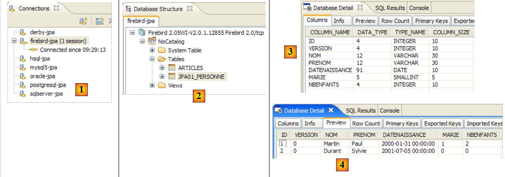 |
- في [1]: الاتصال بـ Firebird
- في [2]: شجرة الاتصال بعد تشغيل [InitDB]
- في [3]: بنية جدول [jpa01_personne]
- في [4]: محتوياته.
بمجرد الانتهاء من ذلك، يُدعى القارئ إلى تشغيل التطبيق [Main] ثم إيقاف تشغيل نظام إدارة قواعد البيانات.
2.1.14.5. أباتشي ديربي
يتم عرض Apache Derby في الملاحق في القسم 5.10. وفيما يلي ملف persistence.xml الخاص به:
<?xml version="1.0" encoding="UTF-8"?>
<persistence version="1.0" xmlns="http://java.sun.com/xml/ns/persistence">
<persistence-unit name="jpa" transaction-type="RESOURCE_LOCAL">
...
<!-- connection JDBC -->
<property name="hibernate.connection.driver_class" value="org.apache.derby.jdbc.ClientDriver" />
<property name="hibernate.connection.url" value="jdbc:derby://localhost:1527//data/2006-2007/eclipse/dvp-jpa/annexes/derby/jpa;create=true" />
<property name="hibernate.connection.username" value="jpa" />
<property name="hibernate.connection.password" value="jpa" />
...
<!-- Dialect -->
...
</persistence-unit>
</persistence>
لتشغيل [InitDB]:
- ابدأ تشغيل نظام إدارة قواعد البيانات Apache Derby
- ضع ملف conf/derby/persistence.xml في META-INF/persistence.xml
- قم بتشغيل تطبيق [InitDB]
فيما يلي عرض SQL Explorer لاتصال JDBC بنظام إدارة قواعد البيانات:
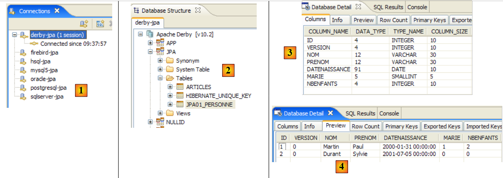 |
- في [1]: الاتصال بـ Apache Derby
- في [2]: شجرة الاتصال بعد تشغيل [InitDB]. لاحظ جدول [HIBERNATE_UNIQUE_KEY] الذي أنشأه JPA/Hibernate لتوليد قيم متتالية تلقائيًا لمعرف المفتاح الأساسي. وقد أشرنا سابقًا إلى أن هذه الآلية غالبًا ما تكون خاصة. وهذا واضح تمامًا هنا. وبفضل JPA، لا يتعين على المطور الخوض في تفاصيل نظام إدارة قواعد البيانات هذه.
- في [3]: بنية جدول [jpa01_personne]
- في [4]: محتوياته.
بمجرد الانتهاء من ذلك، يُدعى القارئ إلى تشغيل تطبيق [Main] ثم إيقاف تشغيل نظام إدارة قواعد البيانات.
2.1.14.6. HSQLDB
يتم عرض HSQLDB في الملاحق في القسم 5.9. وفيما يلي ملف persistence.xml الخاص به:
<?xml version="1.0" encoding="UTF-8"?>
<persistence version="1.0" xmlns="http://java.sun.com/xml/ns/persistence">
<persistence-unit name="jpa" transaction-type="RESOURCE_LOCAL">
...
<!-- connection JDBC -->
<property name="hibernate.connection.driver_class" value="org.hsqldb.jdbcDriver" />
<property name="hibernate.connection.url" value="jdbc:hsqldb:hsql://localhost" />
<property name="hibernate.connection.username" value="sa" />
<!--
<property name="hibernate.connection.password" value="" />
-->
...
<!-- Dialect -->
<property name="hibernate.dialect" value="org.hibernate.dialect.HSQLDialect" />
...
</properties>
</persistence-unit>
</persistence>
لتشغيل [InitDB]:
- ابدأ تشغيل نظام إدارة قواعد البيانات HSQL
- ضع ملف conf/hsql/persistence.xml في META-INF/persistence.xml
- قم بتشغيل تطبيق [InitDB]
فيما يلي عرض SQL Explorer لاتصال JDBC بنظام إدارة قواعد البيانات:
 |
- في [1]: الاتصال بـ HSQL
- في [2]: شجرة الاتصال بعد تشغيل [InitDB].
- في [3]: بنية جدول [jpa01_personne]
- في [4]: محتوياته.
بمجرد الانتهاء من ذلك، يُدعى القارئ إلى تشغيل التطبيق [Main] ثم إيقاف نظام إدارة قواعد البيانات.
2.1.15. تغيير تطبيق JPA
دعونا نعيد النظر في بنية الاختبار لمشروعنا الحالي:
 |
أظهرت الدراسة السابقة أننا تمكنا من تغيير نظام إدارة قواعد البيانات [7] دون تغيير أي شيء في كود العميل [3]. سنقوم الآن بتغيير تطبيق JPA [6] ونثبت مرة أخرى أنه يمكن القيام بذلك بشكل شفاف بالنسبة لكود العميل [3]. سنستخدم تطبيق TopLink [http://www.oracle.com/technology/products/ias/toplink/jpa/index.html]:
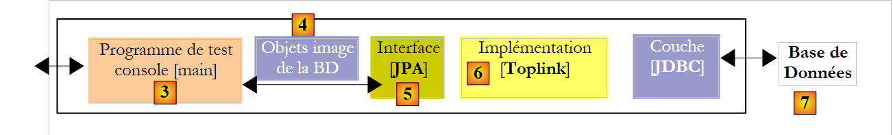 |
2.1.15.1. مشروع Eclipse
بالتزامن مع التغيير في تنفيذ JPA، نقوم بإنشاء مشروع Eclipse جديد حتى لا نلوث المشروع الحالي. في الواقع، يستخدم المشروع الجديد مكتبات ثبات قد تتعارض مع تلك الموجودة في Hibernate:
 |
- في [1]: يحتوي المجلد [<examples>/toplink/direct/people-entities] على مشروع Eclipse. قم باستيراده.
- في [2]: مشروع [toplink-personnes-entites] المستورد. وهو مطابق (تم نسخه) لمشروع [hibernate-personne-entites]، باستثناء تفصيلين:
- يقوم ملف [META-INF/persistence.xml] [3] الآن بتكوين طبقة JPA/Toplink
- تم استبدال مكتبة [jpa-hibernate] بمكتبة [jpa-toplink] [4] و [5] (انظر الفقرة 1.5).
- في [6]: يحتوي المجلد [conf] على نسخة من ملف [persistence.xml] لكل نظام إدارة قواعد البيانات (DBMS).
- في [7]: المجلد [ddl]، الذي سيحتوي على نصوص SQL لإنشاء مخطط قاعدة البيانات.
2.1.15.2. تكوين JPA / Toplink
نعلم أن طبقة JPA يتم تكوينها بواسطة ملف [META-INF/persistence.xml]. يقوم هذا الملف الآن بتكوين تطبيق JPA / Toplink. وفيما يلي محتواه لطبقة JPA التي تتفاعل مع نظام إدارة قواعد البيانات MySQL5:
<?xml version="1.0" encoding="UTF-8"?>
<persistence version="1.0" xmlns="http://java.sun.com/xml/ns/persistence">
<persistence-unit name="jpa" transaction-type="RESOURCE_LOCAL">
<!-- provider -->
<provider>oracle.toplink.essentials.PersistenceProvider</provider>
<!-- persistent classes -->
<class>entites.Personne</class>
<!-- persistence unit properties -->
<properties>
<!-- connection JDBC -->
<property name="toplink.jdbc.driver" value="com.mysql.jdbc.Driver" />
<property name="toplink.jdbc.url" value="jdbc:mysql://localhost:3306/jpa" />
<property name="toplink.jdbc.user" value="jpa" />
<property name="toplink.jdbc.password" value="jpa" />
<property name="toplink.jdbc.read-connections.max" value="3" />
<property name="toplink.jdbc.read-connections.min" value="1" />
<property name="toplink.jdbc.write-connections.max" value="5" />
<property name="toplink.jdbc.write-connections.min" value="2" />
<!-- SGBD -->
<property name="toplink.target-database" value="MySQL4" />
<!-- application server -->
<property name="toplink.target-server" value="None" />
<!-- generation diagram -->
<property name="toplink.ddl-generation" value="drop-and-create-tables" />
<property name="toplink.application-location" value="ddl/mysql5" />
<property name="toplink.create-ddl-jdbc-file-name" value="create.sql" />
<property name="toplink.drop-ddl-jdbc-file-name" value="drop.sql" />
<property name="toplink.ddl-generation.output-mode" value="both" />
<!-- logs -->
<property name="toplink.logging.level" value="OFF" />
</properties>
</persistence-unit>
</persistence>
- السطر 3: لم يتغير
- السطر 5: المزود الآن هو Toplink. يمكن العثور على الفئة المذكورة هنا في مكتبة [jpa-toplink] ([1] أدناه):
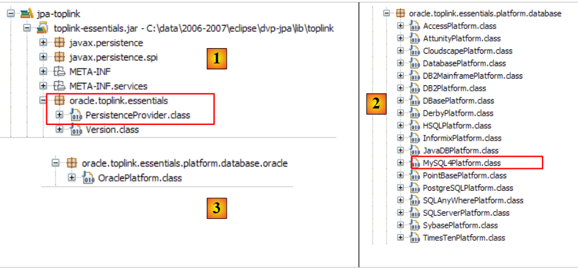 |
- السطر 7: تُستخدم علامة <class> لإدراج جميع فئات @Entity في المشروع؛ وهنا، فئة Person فقط. كان لدى Hibernate خيار تكوين سمح لنا بتجنب إدراج هذه الفئات. كان يقوم بمسح مسار فئات المشروع للعثور على فئات @Entity.
- السطر 9: تقدم علامة <properties> خصائص خاصة بتنفيذ JPA المستخدم، وهو Toplink في هذه الحالة.
- الأسطر 11–14: تكوين اتصال JDBC بنظام إدارة قواعد البيانات MySQL5
- الأسطر 15-18: تكوين تجمع اتصالات JDBC الذي تديره Toplink أصلاً:
- السطران 15 و 16: الحد الأقصى والحد الأدنى لعدد الاتصالات في تجمع اتصالات القراءة. القيمة الافتراضية (2،2)
- السطران 17 و 18: الحد الأقصى والحد الأدنى لعدد الاتصالات في مجموعة اتصالات الكتابة. القيمة الافتراضية (10،2)
- السطر 20: نظام إدارة قواعد البيانات (DBMS) المستهدف. تتوفر قائمة أنظمة إدارة قواعد البيانات المدعومة في الحزمة [oracle.toplink.essentials.platform.database] (انظر [2] أعلاه). لا يرد نظام إدارة قواعد البيانات MySQL5 في القائمة [2]، لذا اخترنا MySQL4. يدعم TopLink عددًا أقل قليلاً من أنظمة إدارة قواعد البيانات مقارنةً بـ Hibernate. وبالتالي، من بين أنظمة إدارة قواعد البيانات السبعة المستخدمة في أمثلةنا، لا يتم دعم Firebird. كما لا يوجد Oracle في القائمة. إنه موجود في الواقع في حزمة أخرى ([3] أعلاه). إذا تم تعيين نظام إدارة قواعد البيانات المستهدف في هاتين الحزمتين بواسطة فئة <Sgbd>Platform.class، فسيتم كتابة العلامة على النحو التالي:
<property name="toplink.target-database" value="<Sgbd>" />
- السطر 22: يحدد خادم التطبيق إذا كان التطبيق يعمل على مثل هذا الخادم. القيم الممكنة الحالية (None، OC4J_10_1_3، SunAS9). القيمة الافتراضية (None).
- الأسطر 24-28: عند تهيئة طبقة JPA، يتم توجيهها لمسح قاعدة البيانات المحددة بواسطة اتصال JDBC في الأسطر 11-14. وهذا يضمن أننا نبدأ بقاعدة بيانات فارغة.
- السطر 24: يتم توجيه TopLink لإزالة الجداول ثم إنشائها في مخطط قاعدة البيانات
- السطر 25: نوجه TopLink لإنشاء نصوص SQL لعمليات الحذف والإنشاء. يحدد application-location الدليل الذي سيتم إنشاء هذه النصوص فيه. الافتراضي: (الدليل الحالي).
- السطر 26: اسم البرنامج النصي SQL لعمليات الإنشاء. الافتراضي: createDDL.jdbc.
- السطر 27: اسم البرنامج النصي SQL لعمليات الحذف. الافتراضي: dropDDL.jdbc.
- السطر 28: وضع إنشاء المخطط (الافتراضي: كلاهما):
- كلاهما: البرامج النصية وقاعدة البيانات
- database: قاعدة البيانات فقط
- sql-script: البرامج النصية فقط
- السطر 30: تم تعطيل تسجيل TopLink (OFF). مستويات التسجيل المتاحة هي: OFF، SEVERE، WARNING، INFO، CONFIG، FINE، FINER، FINEST. الافتراضي: INFO.
انظر الرابط [http://www.oracle.com/technology/products/ias/toplink/JPA/essentials/toplink-jpa-extensions.html] للحصول على تعريف شامل لعلامات <property> التي يمكن استخدامها مع Toplink.
2.1.15.3. اختبار [InitDB]
لا يوجد شيء آخر للقيام به. نحن جاهزون لتشغيل أول اختبار [InitDB]:
- ابدأ تشغيل نظام إدارة قواعد البيانات (DBMS)، وهو في هذه الحالة MySQL5
- قم بتشغيل [InitDB]
 |
- في [1]: شاشة وحدة التحكم. نرى النتائج التي تم الحصول عليها بالفعل باستخدام JPA / Hibernate.
- في [3]: افتح منظور [SQL Explorer]، ثم افتح اتصال [mysql5-jpa]
- في [4]: شجرة قاعدة بيانات jpa. نرى أن تشغيل [InitDB] أنشأ جدولين: [jpa01_personne]، وهو ما كان متوقعًا، وجدول [sequence]، وهو ما لم يكن متوقعًا.
 |
- في [5]: بنية جدول [jpa01_personne] وفي [6] محتوياته
- في [7]: بنية جدول [sequence]، وفي [8] محتوياته.
طلب ملف التكوين [persistence.xml] إنشاء نصوص DDL:
<!-- génération schéma -->
<property name="toplink.ddl-generation" value="drop-and-create-tables" />
<property name="toplink.application-location" value="ddl/mysql5" />
<property name="toplink.create-ddl-jdbc-file-name" value="create.sql" />
<property name="toplink.drop-ddl-jdbc-file-name" value="drop.sql" />
<property name="toplink.ddl-generation.output-mode" value="both" />
دعونا نلقي نظرة على ما تم إنشاؤه في المجلد [ddl/mysql5]:
 |
create.sql
CREATE TABLE jpa01_personne (ID INTEGER NOT NULL, PRENOM VARCHAR(30) NOT NULL, DATENAISSANCE DATE NOT NULL, NOM VARCHAR(30) UNIQUE NOT NULL, MARIE TINYINT(1) default 0 NOT NULL, VERSION INTEGER NOT NULL, NBENFANTS INTEGER NOT NULL, PRIMARY KEY (ID))
CREATE TABLE SEQUENCE (SEQ_NAME VARCHAR(50) NOT NULL, SEQ_COUNT DECIMAL(38), PRIMARY KEY (SEQ_NAME))
INSERT INTO SEQUENCE(SEQ_NAME, SEQ_COUNT) values ('SEQ_GEN', 1)
- السطر 1: لغة تعريف البيانات (DDL) للجدول [jpa01_personne]. لاحظ أن Toplink لم تستخدم سمة التزايد التلقائي (autoincrement) للمفتاح الأساسي ID. ونتيجة لذلك، لا يتم زيادة قيمة ID تلقائيًا عند إدراج الصفوف.
- السطر 2: DDL لجدول [sequence]. يشير اسمه إلى أن Toplink يستخدم هذا الجدول لتوليد قيم للمفتاح الأساسي ID.
- السطر 3: إدراج صف واحد في [SEQUENCE]
drop.sql
DROP TABLE jpa01_personne
DELETE FROM SEQUENCE WHERE SEQ_NAME = 'SEQ_GEN'
- السطر 1: حذف الجدول [jpa01_personne]
- السطر 2: حذف صف معين من الجدول [SEQUENCE]. لا يتم حذف الجدول نفسه، ولا أي صفوف أخرى قد يحتوي عليها.
لمعرفة المزيد عن دور الجدول [SEQUENCE]، قم بتمكين سجلات TopLink على المستوى FINE في [persistence.xml]، وهو مستوى يتتبع عبارات SQL الصادرة عن TopLink:
<!-- logs -->
<property name="toplink.logging.level" value="FINE" />
قم بتشغيل InitDB مرة أخرى. فيما يلي عرض جزئي لمخرجات وحدة التحكم:
...
[TopLink Config]: 2007.05.28 12:07:52.796--ServerSession(12910198)--Connection(30708295)--Thread(Thread[main,5,main])--Connected: jdbc:mysql://localhost:3306/jpa
User: jpa@localhost
Database: MySQL Version: 5.0.37-community-nt
Driver: MySQL-AB JDBC Driver Version: mysql-connector-java-3.1.9 ( $Date: 2005/05/19 15:52:23 $, $Revision: 1.1.2.2 $ )
...
[TopLink Fine]: 2007.05.28 12:07:53.093--ServerSession(12910198)--Connection(19255406)--Thread(Thread[main,5,main])--DROP TABLE jpa01_personne
[TopLink Fine]: 2007.05.28 12:07:53.265--ServerSession(12910198)--Connection(30708295)--Thread(Thread[main,5,main])--CREATE TABLE jpa01_personne (ID INTEGER NOT NULL, PRENOM VARCHAR(30) NOT NULL, DATENAISSANCE DATE NOT NULL, NOM VARCHAR(30) UNIQUE NOT NULL, MARIE TINYINT(1) default 0 NOT NULL, VERSION INTEGER NOT NULL, NBENFANTS INTEGER NOT NULL, PRIMARY KEY (ID))
[TopLink Fine]: 2007.05.28 12:07:53.468--ServerSession(12910198)--Connection(19255406)--Thread(Thread[main,5,main])--CREATE TABLE SEQUENCE (SEQ_NAME VARCHAR(50) NOT NULL, SEQ_COUNT DECIMAL(38), PRIMARY KEY (SEQ_NAME))
[TopLink Warning]: 2007.05.28 12:07:53.468--ServerSession(12910198)--Thread(Thread[main,5,main])--Exception [TOPLINK-4002] (Oracle TopLink Essentials - 2.0 (Build b41-beta2 (03/30/2007)): oracle.toplink.essentials.exceptions.DatabaseException
Internal Exception: java.sql.SQLException: Table 'sequence' already exists
Error Code: 1050
Call: CREATE TABLE SEQUENCE (SEQ_NAME VARCHAR(50) NOT NULL, SEQ_COUNT DECIMAL(38), PRIMARY KEY (SEQ_NAME))
Query: DataModifyQuery()
[TopLink Fine]: 2007.05.28 12:07:53.468--ServerSession(12910198)--Connection(30708295)--Thread(Thread[main,5,main])--DELETE FROM SEQUENCE WHERE SEQ_NAME = 'SEQ_GEN'
[TopLink Fine]: 2007.05.28 12:07:53.609--ServerSession(12910198)--Connection(19255406)--Thread(Thread[main,5,main])--SELECT * FROM SEQUENCE WHERE SEQ_NAME = 'SEQ_GEN'
[TopLink Fine]: 2007.05.28 12:07:53.609--ServerSession(12910198)--Connection(30708295)--Thread(Thread[main,5,main])--INSERT INTO SEQUENCE(SEQ_NAME, SEQ_COUNT) values ('SEQ_GEN', 1)
[TopLink Fine]: 2007.05.28 12:07:53.734--ClientSession(15308417)--Connection(14069849)--Thread(Thread[main,5,main])--delete from jpa01_personne
[TopLink Fine]: 2007.05.28 12:07:53.750--ClientSession(15308417)--Connection(14069849)--Thread(Thread[main,5,main])--UPDATE SEQUENCE SET SEQ_COUNT = SEQ_COUNT + ? WHERE SEQ_NAME = ?
bind => [50, SEQ_GEN]
[TopLink Fine]: 2007.05.28 12:07:53.750--ClientSession(15308417)--Connection(14069849)--Thread(Thread[main,5,main])--SELECT SEQ_COUNT FROM SEQUENCE WHERE SEQ_NAME = ?
bind => [SEQ_GEN]
[personnes]
[TopLink Fine]: 2007.05.28 12:07:53.906--ClientSession(15308417)--Connection(14069849)--Thread(Thread[main,5,main])--INSERT INTO jpa01_personne (ID, PRENOM, DATENAISSANCE, NOM, MARIE, VERSION, NBENFANTS) VALUES (?, ?, ?, ?, ?, ?, ?)
bind => [3, Sylvie, 2001-07-05, Durant, false, 1, 0]
[TopLink Fine]: 2007.05.28 12:07:53.921--ClientSession(15308417)--Connection(14069849)--Thread(Thread[main,5,main])--INSERT INTO jpa01_personne (ID, PRENOM, DATENAISSANCE, NOM, MARIE, VERSION, NBENFANTS) VALUES (?, ?, ?, ?, ?, ?, ?)
bind => [2, Paul, 2000-01-31, Martin, true, 1, 2]
[TopLink Fine]: 2007.05.28 12:07:53.937--ClientSession(15308417)--Connection(14069849)--Thread(Thread[main,5,main])--SELECT ID, PRENOM, DATENAISSANCE, NOM, MARIE, VERSION, NBENFANTS FROM jpa01_personne ORDER BY NOM ASC
[3,1,Durant,Sylvie,05/07/2001,false,0]
[2,1,Martin,Paul,31/01/2000,true,2]
[TopLink Config]: 2007.05.28 12:07:54.062--ServerSession(12910198)--Connection(30708295)--Thread(Thread[main,5,main])--disconnect
[TopLink Info]: 2007.05.28 12:07:54.062--ServerSession(12910198)--Thread(Thread[main,5,main])--file:/C:/data/2006-2007/eclipse/dvp-jpa/toplink/direct/personnes-entites/bin/-jpa logout successful
...
terminé ...
- الأسطر 2-5: اتصال بنظام إدارة قواعد البيانات (DBMS) بمعلماته. في الواقع، تُظهر السجلات أن Toplink يقوم فعليًا بإنشاء 3 اتصالات بنظام إدارة قواعد البيانات. وعلينا التحقق مما إذا كان هذا العدد مرتبطًا بإحدى قيم التكوين المستخدمة لمجمع اتصالات JDBC:
<property name="toplink.jdbc.read-connections.max" value="3" />
<property name="toplink.jdbc.read-connections.min" value="1" />
<property name="toplink.jdbc.write-connections.max" value="5" />
<property name="toplink.jdbc.write-connections.min" value="2" />
- السطر 7: حذف الجدول [jpa01_personne]. هذا أمر طبيعي، لأن ملف [persistence.xml] يطلب تنظيف قاعدة بيانات JPA.
- السطر 8: إنشاء الجدول [jpa01_personne]. لاحظ أن معرف المفتاح الأساسي لا يحتوي على سمة التزايد التلقائي.
- السطر 9: إنشاء جدول [SEQUENCE]، الذي موجود بالفعل، حيث تم إنشاؤه أثناء التنفيذ السابق.
- الأسطر 10-13: يبلغ TopLink عن خطأ في إنشاء جدول [SEQUENCE].
- الأسطر 15-18: يقوم TopLink بمسح الجدول [SEQUENCE]. بعد هذا التنظيف، يحتوي الجدول [SEQUENCE] على صف واحد (SEQ_NAME، SEQ_COUNT) بالقيم ('i>;SEQ_GENdir="ltr" class="odt-ltr-term">'، 1).
- السطر 18: يتم إفراغ الجدول [jpa01_personne].
- السطور 19-20: يقوم Toplink بتحديث الصف الوحيد حيث SEQ_NAME = 'SEQ_GEN' في جدول [SEQUENCE]، وتغيير القيمة من ('SEQ_GEN', 1) إلى ('SEQ_GEN', 51).
- السطر 21: يسترد TopLink القيمة 51 من الصف ('SEQ_GEN', 51) في جدول [SEQUENCE].
- الأسطر 24-27: يقوم Toplink بإدراج الشخصين 'Martin' و 'Durant' في جدول [jpa01_personne]. هناك لغز هنا: تم تعيين قيمتي 2 و 3 للمفاتيح الأساسية لهذين الصفين، دون أي تفسير لكيفية الحصول على هاتين القيمتين. ومن غير الواضح ما إذا كانت قيمة SEQ_COUNT (51) التي تم الحصول عليها في السطر 21 قد خدمت أي غرض. لاحظ أن قيمة الإصدار للصفوف هي 1، في حين أن Hibernate بدأ من 0.
- السطر 28: يقوم TopLink بتنفيذ SELECT لاسترداد جميع الصفوف من جدول [jpa01_personne]
- السطران 29-30: الصفوف المعروضة بواسطة عميل Java
- السطران 31-32: يغلق TopLink اتصالاً. وسيكرر العملية لكل اتصال من الاتصالات التي تم فتحها في البداية.
<!-- logs -->
<property name="toplink.logging.level" value="FINEST" />
- السطر 4: نرى أن الرقم 51 المسترد من جدول [SEQUENCE] في السطر 2 يُستخدم لتحديد نطاق قيم للمفتاح الأساسي: [2,51]
- السطر 5: تم تعيين القيمة 2 للشخص الأول كمفتاح أساسي
- السطر 8: تم تعيين القيمة 3 للشخص الثاني كمفتاح أساسي
- السطر 12: يعرض إدارة الإصدارات للشخص الأول
- السطر 17: نفس الشيء بالنسبة للشخص الثاني
- ستنشئ تطبيقات JPA المختلفة مخططات قواعد بيانات مختلفة. في هذا المثال، لم ينشئ Hibernate و Toplink نفس المخططات.
- يجب استخدام مستويات السجل FINE و FINER و FINEST الخاصة بـ Toplink كلما أردت توضيحًا لما تفعله Toplink بالضبط.
 |
- في [1]: اجتازت جميع الاختبارات باستثناء الاختبار 11 [2]
- في [3]: السطر 376، وهو السطر الذي حدثت فيه الاستثناء
} catch (RuntimeException e1) {
// on a eu un pb
System.out.format("Erreur dans transaction [%s,%s,%s,%s,%s,%s]%n", e1.getClass().getName(), e1.getMessage(),
e1.getCause().getClass().getName(), e1.getCause().getMessage(), e1.getCause().getCause().getClass().getName(), e1.getCause().getCause()
.getMessage());
try {
...
- السطر [3]: سطر الاستثناء. لدينا استثناء NullPointerException، مما يشير إلى أن إحدى طرق getCause في السطرين 4 و 5 قد أعادت مؤشرًا فارغًا. يفترض تعبير مثل [e1.getCause().getCause()] أن سلسلة الاستثناءات تحتوي على 3 عناصر [e1.getCause().getCause()، e1.getCause()، e1]. إذا كانت تحتوي على عنصرين فقط، فسيؤدي التعبير الأول إلى حدوث استثناء.
} catch (RuntimeException e1) {
// on a eu un pb
System.out.format("Erreur dans transaction [%s,%s,%s,%s,]%n", e1.getClass().getName(), e1.getMessage(),
e1.getCause().getClass().getName(), e1.getCause().getMessage());
try {
...
...
[personnes]
[2,5,Martin,Paul,31/01/2000,false,6]
main : ----------- test11
[personnes]
Erreur dans transaction [javax.persistence.OptimisticLockException,Exception [TOPLINK-5006] (Oracle TopLink Essentials - 2.0 (Build b41-beta2 (03/30/2007))): oracle.toplink.essentials.exceptions.OptimisticLockException
Exception Description: The object [[2,6,Martin,Paul,31/01/2000,false,7]] cannot be updated because it has changed or been deleted since it was last read.
Class> entites.Personne Primary Key> [2],oracle.toplink.essentials.exceptions.OptimisticLockException,
Exception Description: The object [[2,6,Martin,Paul,31/01/2000,false,7]] cannot be updated because it has changed or been deleted since it was last read.
Class> entites.Personne Primary Key> [2],]
[personnes]
[2,5,Martin,Paul,31/01/2000,false,6]
 |
 |
<?xml version="1.0" encoding="UTF-8"?>
<persistence version="1.0" xmlns="http://java.sun.com/xml/ns/persistence">
<persistence-unit name="jpa" transaction-type="RESOURCE_LOCAL">
<!-- provider -->
<provider>oracle.toplink.essentials.PersistenceProvider</provider>
<!-- persistent classes -->
<class>entites.Personne</class>
<!-- persistence unit properties -->
<properties>
<!-- connection JDBC -->
<property name="toplink.jdbc.driver" value="oracle.jdbc.OracleDriver" />
<property name="toplink.jdbc.url" value="jdbc:oracle:thin:@localhost:1521:xe" />
<property name="toplink.jdbc.user" value="jpa" />
<property name="toplink.jdbc.password" value="jpa" />
<property name="toplink.jdbc.read-connections.max" value="3" />
<property name="toplink.jdbc.read-connections.min" value="1" />
<property name="toplink.jdbc.write-connections.max" value="5" />
<property name="toplink.jdbc.write-connections.min" value="2" />
<!-- SGBD -->
<property name="toplink.target-database" value="Oracle" />
<!-- application server -->
<property name="toplink.target-server" value="None" />
<!-- generation diagram -->
<property name="toplink.ddl-generation" value="drop-and-create-tables" />
<property name="toplink.application-location" value="ddl/oracle" />
<property name="toplink.create-ddl-jdbc-file-name" value="create.sql" />
<property name="toplink.drop-ddl-jdbc-file-name" value="drop.sql" />
<property name="toplink.ddl-generation.output-mode" value="both" />
<!-- logs -->
<property name="toplink.logging.level" value="OFF" />
</properties>
</persistence-unit>
</persistence>
- الأسطر 11–14، التي تهيئ اتصال JDBC بقاعدة البيانات
- السطر 20: الذي يحدد نظام إدارة قواعد البيانات المستهدف
- السطر 25: الذي يحدد الدليل لإنشاء نصوص DDL SQL
- ابدأ تشغيل نظام إدارة قواعد البيانات Oracle
- ضع ملف conf/oracle/persistence.xml في META-INF/persistence.xml
- قم بتشغيل تطبيق [InitDB]
 |
- [1]: شاشة وحدة التحكم
- [2]: اتصال [oracle-jpa] في مستكشف SQL
- [3]: قاعدة بيانات jpa
- [4]: أنشأ InitDB جدولين: JPA01_PERSONNE و SEQUENCE، كما هو الحال مع MySQL5. في بعض الأحيان، تظهر جداول [BIN*] في [4]. هذه الجداول تتوافق مع الجداول المحذوفة. لملاحظة هذه الظاهرة، ما عليك سوى إعادة تشغيل [InitDB]. تتضمن مرحلة تهيئة طبقة JPA عملية تنظيف لقاعدة بيانات JPA يتم خلالها حذف الجدول [JPA01_PERSONNE]:
 |
- [5، 6]: بنية ومحتويات جدول [JPA01_PERSONNE]
- [7، 8]: بنية ومحتويات جدول [SEQUENCE]
- بغض النظر عن نظام إدارة قواعد البيانات، يستخدم Toplink دائمًا نفس التقنية لإنشاء قيم معرف المفتاح الأساسي للجدول [JPA01_PERSONNE]: فهو يستخدم الجدول [SEQUENCE] الموصوف أعلاه.
- لا يدعم TopLink نظام إدارة قواعد البيانات Firebird. هناك إعداد عام لقاعدة البيانات لمثل هذه الحالات:
<!-- connexion JDBC -->
<property name="toplink.jdbc.driver" value="org.firebirdsql.jdbc.FBDriver" />
...
<!-- SGBD -->
<!--
TopLink ne reconnaît pas Firebird pour l'instant (05/07). Derby convient pour remplacer.
-->
<property name="toplink.target-database" value="Derby" />
...
- لا يمكن لـ Toplink إنشاء مخطط قاعدة البيانات الأصلي لنظام إدارة قواعد البيانات HSQLDB. أي أن التوجيه:
<!-- génération schéma -->
<property name="toplink.ddl-generation" value="drop-and-create-tables" />
[TopLink Fine]: 2007.05.29 09:44:18.515--ServerSession(12910198)--Connection(29775659)--Thread(Thread[main,5,main])--DROP TABLE jpa01_personne
[TopLink Fine]: 2007.05.29 09:44:18.531--ServerSession(12910198)--Connection(29775659)--Thread(Thread[main,5,main])--CREATE TABLE jpa01_personne (ID INTEGER NOT NULL, PRENOM VARCHAR(30) NOT NULL, DATENAISSANCE DATE NOT NULL, NOM VARCHAR(30) UNIQUE NOT NULL, MARIE TINYINT NOT NULL, VERSION INTEGER NOT NULL, NBENFANTS INTEGER NOT NULL, PRIMARY KEY (ID))
[TopLink Warning]: 2007.05.29 09:44:18.531--ServerSession(12910198)--Thread(Thread[main,5,main])--Exception [TOPLINK-4002] (Oracle TopLink Essentials - 2.0 (Build b41-beta2 (03/30/2007)): oracle.toplink.essentials.exceptions.DatabaseException
Internal Exception: java.sql.SQLException: Unexpected token: UNIQUE in statement [CREATE TABLE jpa01_personne (ID INTEGER NOT NULL, PRENOM VARCHAR(30) NOT NULL, DATENAISSANCE DATE NOT NULL, NOM VARCHAR(30) UNIQUE]
- إلى @Entity [Person] السابق، سنضيف حقل عنوان تم نمذجته بواسطة فئة [Address]. على جانب قاعدة البيانات، سننظر في تطبيقين محتملين. تؤدي كائنات [Person] و [Address] إلى
- جدول [Person] واحد يتضمن العنوان
- جدولين [person] و [address] مرتبطين بعلاقة مفتاح خارجي واحد إلى واحد.
- مثال على علاقة واحد إلى عدة حيث يرتبط جدول [العنصر] بجدول [الفئة] عبر مفتاح خارجي
- مثال على علاقة "كثير إلى كثير" حيث يرتبط جدولان [Person] و[Activity] بواسطة جدول ربط [Person_Activity].
1  | 2 |
- في [1]: قاعدة البيانات (مكون إضافي Azurri Clay)
- في [2]: لغة تعريف البيانات (DDL) التي أنشأها Hibernate لـ MySQL5
package entites;
...
@SuppressWarnings("serial")
@Embeddable
public class Adresse implements Serializable {
// fields
@Column(length = 30, nullable = false)
private String adr1;
@Column(length = 30)
private String adr2;
@Column(length = 30)
private String adr3;
@Column(length = 5, nullable = false)
private String codePostal;
@Column(length = 20, nullable = false)
private String ville;
@Column(length = 3)
private String cedex;
@Column(length = 20, nullable = false)
private String pays;
// manufacturers
public Adresse() {
}
public Adresse(String adr1, String adr2, String adr3, String codePostal, String ville, String cedex, String pays) {
...
}
// getters and setters
...
// toString
public String toString() {
return String.format("A[%s,%s,%s,%s,%s,%s,%s]", getAdr1(), getAdr2(), getAdr3(), getCodePostal(), getVille(), getCedex(), getPays());
}
}
- يكمن الابتكار الرئيسي في التعليق التوضيحي @Embeddable في السطر 5. لا تهدف فئة [Address] إلى إنشاء جدول، لذا فهي لا تحتوي على التعليق التوضيحي @Entity. تشير العلامة @Embeddable إلى أن الفئة مخصصة للتضمين داخل كائن @Entity وبالتالي داخل الجدول المرتبط به. ولهذا السبب، في مخطط قاعدة البيانات، لا تظهر فئة [Address] كجدول منفصل، بل كجزء من الجدول المرتبط بـ @Entity [Person].
package entites;
...
@Entity
@Table(name = "jpa02_hb_personne")
public class Personne implements Serializable{
@Id
@Column(nullable = false)
@GeneratedValue(strategy = GenerationType.AUTO)
private Long id;
@Column(nullable = false)
@Version
private int version;
@Column(length = 30, nullable = false, unique = true)
private String nom;
@Column(length = 30, nullable = false)
private String prenom;
@Column(nullable = false)
@Temporal(TemporalType.DATE)
private Date datenaissance;
@Column(nullable = false)
private boolean marie;
@Column(nullable = false)
private int nbenfants;
@Embedded
private Adresse adresse;
// manufacturers
public Personne() {
}
...
}
- يحدث التغيير في السطرين 33 و34. أصبح للكائن [Person] الآن حقل عنوان من النوع Address. وهذا خاص بالكائن POJO. أما التوضيح @Embedded فهو مخصص لجسر العلاقة بين الكائنات والقواعد. وهو يشير إلى أن حقل [Address address] يجب أن يكون مضمنًا في نفس الجدول الذي يوجد فيه كائن [Person].
 |
 |
drop table if exists jpa02_hb_personne;
create table jpa02_hb_personne (
id bigint not null auto_increment,
version integer not null,
nom varchar(30) not null unique,
prenom varchar(30) not null,
datenaissance date not null,
marie bit not null,
nbenfants integer not null,
adr1 varchar(30) not null,
adr2 varchar(30),
adr3 varchar(30),
codePostal varchar(5) not null,
ville varchar(20) not null,
cedex varchar(3),
pays varchar(20) not null,
primary key (id)
) ENGINE=InnoDB;
package tests;
...
public class InitDB {
// constant
private final static String TABLE_NAME = "jpa02_hb_personne";
public static void main(String[] args) throws ParseException {
// Persistence context
EntityManagerFactory emf = Persistence.createEntityManagerFactory("jpa");
EntityManager em = null;
// a EntityManager is retrieved from the previous EntityManagerFactory
em = emf.createEntityManager();
// start of transaction
EntityTransaction tx = em.getTransaction();
tx.begin();
// request
Query sql1;
// delete elements from the PERSONNE table
sql1 = em.createNativeQuery("delete from " + TABLE_NAME);
sql1.executeUpdate();
// creating people
Personne p1 = new Personne("Martin", "Paul", new SimpleDateFormat("dd/MM/yy").parse("31/01/2000"), true, 2);
Personne p2 = new Personne("Durant", "Sylvie", new SimpleDateFormat("dd/MM/yy").parse("05/07/2001"), false, 0);
// address creation
Adresse a1 = new Adresse("8 rue Boileau", null, null, "49000", "Angers", null, "France");
Adresse a2 = new Adresse("Apt 100", "Les Mimosas", "15 av Foch", "49002", "Angers", "03", "France");
// associations person <--> address
p1.setAdresse(a1);
p2.setAdresse(a2);
// persistence of people
em.persist(p1);
em.persist(p2);
// people display
System.out.println("[personnes]");
for (Object p : em.createQuery("select p from Personne p order by p.nom asc").getResultList()) {
System.out.println(p);
}
// end transaction
tx.commit();
// end EntityManager
em.close();
// end EntityManagerFactory
emf.close();
// log
System.out.println("terminé...");
}
}
 |
 |
- [1]: إخراج وحدة التحكم
- [2]: الجدول [jpa02_hb_personne] في عرض مستكشف SQL
- [3] و[4]: هيكله ومحتواه.
package tests;
...
import entites.Adresse;
import entites.Personne;
@SuppressWarnings( { "unused", "unchecked" })
public class Main {
// constant
private final static String TABLE_NAME = "jpa02_hb_personne";
// Persistence context
private static EntityManagerFactory emf = Persistence.createEntityManagerFactory("jpa");
private static EntityManager em = null;
// shared objects
private static Personne p1, p2, newp1;
private static Adresse a1, a2, a3, a4, newa1, newa4;
public static void main(String[] args) throws Exception {
// we retrieve a EntityManager from the EntityManagerFactory
em = emf.createEntityManager();
// base cleaning
log("clean");clean();
// dump table
dumpPersonne();
// test1
log("test1"); test1();
// test2
log("test2"); test2();
// test3
log("test3"); test3();
// test4
log("test4"); test4();
// test5
log("test5");test5();
// fine persistence context
if (em != null && em.isOpen())
em.close();
// closure EntityManagerFactory
emf.close();
}
// retrieve the current EntityManager
private static EntityManager getEntityManager() {
...
}
// pick up a new EntityManager
private static EntityManager getNewEntityManager() {
...
}
// display table content Person
private static void dumpPersonne() {
...
}
// raz BD
private static void clean() {
...
}
// logs
private static void log(String message) {
...
}
// object creation
public static void test1() throws ParseException {
// persistence context
EntityManager em = getEntityManager();
// creating people
p1 = new Personne("Martin", "Paul", new SimpleDateFormat("dd/MM/yy").parse("31/01/2000"), true, 2);
p2 = new Personne("Durant", "Sylvie", new SimpleDateFormat("dd/MM/yy").parse("05/07/2001"), false, 0);
// address creation
a1 = new Adresse("8 rue Boileau", null, null, "49000", "Angers", null, "France");
a2 = new Adresse("Apt 100", "Les Mimosas", "15 av Foch", "49002", "Angers", "03", "France");
// associations person <--> address
p1.setAdresse(a1);
p2.setAdresse(a2);
// start of transaction
EntityTransaction tx = em.getTransaction();
tx.begin();
// persistence of people
em.persist(p1);
em.persist(p2);
// end transaction
tx.commit();
// dump
dumpPersonne();
}
// modify a context object
public static void test2() {
// persistence context
EntityManager em = getEntityManager();
// start of transaction
EntityTransaction tx = em.getTransaction();
tx.begin();
// increment the number of children in p1
p1.setNbenfants(p1.getNbenfants() + 1);
// change your marital status
p1.setMarie(false);
// object p1 is automatically saved (dirty checking)
// at next synchronization (commit or select)
// end transaction
tx.commit();
// the new table is displayed
dumpPersonne();
}
// delete an object belonging to the persistence context
public static void test4() {
// persistence context
EntityManager em = getEntityManager();
// start of transaction
EntityTransaction tx = em.getTransaction();
tx.begin();
// delete attached object p2
em.remove(p2);
// end transaction
tx.commit();
// the new table is displayed
dumpPersonne();
}
// detach, reattach and modify
public static void test5() {
// new persistence context
EntityManager em = getNewEntityManager();
// start of transaction
EntityTransaction tx = em.getTransaction();
tx.begin();
// reattach p1 to the new context
p1 = em.find(Personne.class, p1.getId());
// end transaction
tx.commit();
// change p1's address
p1.getAdresse().setVille("Paris");
// the new table is displayed
dumpPersonne();
}
}
 |
 |
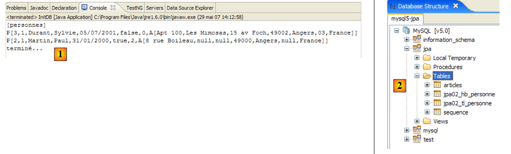 |
 |
- [1]: إخراج وحدة التحكم
- [2]: الجدولان [jpa02_tl_personne] و[SEQENCE] في عرض مستكشف SQL
- [3] و[4]: بنية ومحتوى [jpa02_tl_personne].
CREATE TABLE jpa02_tl_personne (ID BIGINT NOT NULL, PRENOM VARCHAR(30) NOT NULL, DATENAISSANCE DATE NOT NULL, VERSION INTEGER NOT NULL, MARIE TINYINT(1) default 0 NOT NULL, NBENFANTS INTEGER NOT NULL, NOM VARCHAR(30) UNIQUE NOT NULL, CODEPOSTAL VARCHAR(5) NOT NULL, ADR1 VARCHAR(30) NOT NULL, VILLE VARCHAR(20) NOT NULL, ADR3 VARCHAR(30), CEDEX VARCHAR(3), ADR2 VARCHAR(30), PAYS VARCHAR(20) NOT NULL, PRIMARY KEY (ID))
CREATE TABLE SEQUENCE (SEQ_NAME VARCHAR(50) NOT NULL, SEQ_COUNT DECIMAL(38), PRIMARY KEY (SEQ_NAME))
INSERT INTO SEQUENCE(SEQ_NAME, SEQ_COUNT) values ('SEQ_GEN', 1)
DROP TABLE jpa02_tl_personne
DELETE FROM SEQUENCE WHERE SEQ_NAME = 'SEQ_GEN'
1  | 2 |
- في [1]: قاعدة البيانات. هذه المرة، يتم تخزين عنوان الشخص في جدول منفصل [adresse]. ويرتبط جدول [personne] بهذا الجدول عبر مفتاح خارجي.
- في [2]: لغة تعريف البيانات (DDL) التي أنشأتها Hibernate لـ MySQL5:
- الأسطر 9–20: جدول [address] الذي سيتم ربطه بفئة [Address]، التي أصبحت كائن @Entity.
- السطر 10: المفتاح الأساسي لجدول [address]
- السطر 30: بدلاً من العنوان الكامل، يحتوي جدول [person] الآن على المعرف [address_id] لهذا العنوان.
- الأسطر 34–38: `person(address_id)` هو مفتاح خارجي في `address(id)`.
package entites;
...
@Entity
@Table(name = "jpa03_hb_personne")
public class Personne implements Serializable{
@Id
@Column(nullable = false)
@GeneratedValue(strategy = GenerationType.AUTO)
private Long id;
@Column(nullable = false)
@Version
private int version;
@Column(length = 30, nullable = false, unique = true)
private String nom;
@Column(length = 30, nullable = false)
private String prenom;
@Column(nullable = false)
@Temporal(TemporalType.DATE)
private Date datenaissance;
@Column(nullable = false)
private boolean marie;
@Column(nullable = false)
private int nbenfants;
@OneToOne(cascade = CascadeType.ALL, fetch=FetchType.LAZY)
@JoinColumn(name = "adresse_id", unique = true, nullable = false)
private Adresse adresse;
...
}
- الأسطر 32–34: عنوان الشخص
- السطر 32: تشير التعليقة التوضيحية @OneToOne إلى علاقة واحد إلى واحد: لكل شخص عنوان واحد على الأقل وعنوان واحد على الأكثر. تعني السمة cascade = CascadeType.ALL أن أي عملية (persist، merge، remove) على @Entity [Person] يجب أن تتسلسل إلى @Entity [Address]. من منظور سياق الثبات em، يعني هذا ما يلي. إذا كان p شخصًا ولديه عنوان:
- ستؤدي عملية em.persist(p) الصريحة إلى تشغيل عملية em.persist(a) ضمنية
- ستؤدي عملية em.merge(p) الصريحة إلى تشغيل عملية em.merge(a) ضمنية
- ستؤدي عملية em.remove(p) الصريحة إلى تشغيل عملية em.remove(a) ضمنية
- السطر 32: تشير التعليقة التوضيحية @OneToOne إلى علاقة واحد إلى واحد: لكل شخص عنوان واحد على الأقل وعنوان واحد على الأكثر. تعني السمة cascade = CascadeType.ALL أن أي عملية (persist، merge، remove) على @Entity [Person] يجب أن تتسلسل إلى @Entity [Address]. من منظور سياق الثبات em، يعني هذا ما يلي. إذا كان p شخصًا ولديه عنوان:
//@OneToOne(cascade = CascadeType.ALL, fetch=FetchType.LAZY)
@OneToOne(cascade = {CascadeType.MERGE, CascadeType.PERSIST, CascadeType.REFRESH, CascadeType.REMOVE}, fetch=FetchType.LAZY)
- (تابع)
- السطر 33: تحدد العلامة التوضيحية @JoinColumn المفتاح الخارجي الذي يمتلكه الجدول @Entity [Person] في الجدول @Entity [Address]. تحدد السمة name اسم العمود الذي يعمل كمفتاح خارجي. تفرض السمة unique=true علاقة واحد إلى واحد: لا يمكن أن تظهر نفس القيمة مرتين في عمود [address_id]. تفرض السمة nullable=false أن يكون لكل شخص عنوان.
package entites;
...
@Entity
@Table(name = "jpa03_hb_adresse")
public class Adresse implements Serializable {
// fields
@Id
@Column(nullable = false)
@GeneratedValue(strategy = GenerationType.AUTO)
private Long id;
@Column(nullable = false)
@Version
private int version;
@Column(length = 30, nullable = false)
private String adr1;
@Column(length = 30)
private String adr2;
@Column(length = 30)
private String adr3;
@Column(length = 5, nullable = false)
private String codePostal;
@Column(length = 20, nullable = false)
private String ville;
@Column(length = 3)
private String cedex;
@Column(length = 20, nullable = false)
private String pays;
@OneToOne(mappedBy = "adresse", fetch=FetchType.LAZY)
private Personne personne;
// manufacturers
public Adresse() {
}
...
}
- السطر 4: تصبح فئة [Address] كائنًا من نوع @Entity. وبالتالي، ستكون موضوعًا لجدول في قاعدة البيانات.
- الأسطر 9–12: مثل أي كائن @Entity، يحتوي [Address] على مفتاح أساسي. وقد أُطلق عليه اسم Id ويحتوي على نفس التعليقات التوضيحية (القياسية) التي يحتوي عليها المفتاح الأساسي Id الخاص بـ @Entity [Person].
- الأسطر 39-40: العلاقة واحد إلى واحد مع @Entity [Person]. هناك عدة تفاصيل دقيقة هنا:
- أولاً، الحقل `person` ليس مطلوباً. فهو يسمح لنا باستخدام عنوان لتحديد الشخص الوحيد المرتبط بهذا العنوان. إذا لم نرغب في هذه الوظيفة، فلن يكون الحقل `person` موجوداً، وسيظل كل شيء يعمل.
- تم بالفعل تكوين العلاقة واحد إلى واحد التي تربط بين الكيانين [Person] و [Address] في @Entity [Person]:
@OneToOne(cascade = CascadeType.ALL, fetch=FetchType.LAZY)
@JoinColumn(name = "adresse_id", unique = true, nullable = false)
private Adresse adresse;
@OneToOne(mappedBy = "adresse", fetch=FetchType.LAZY)
private Personne personne;
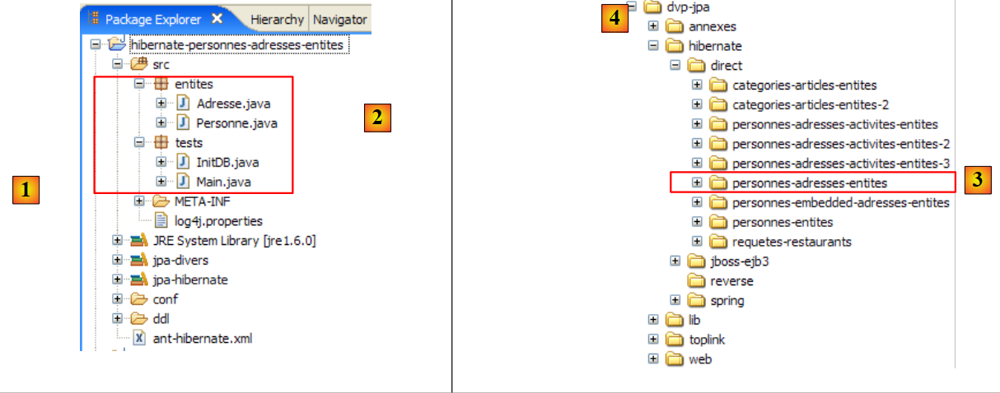 |
package tests;
...
import entites.Adresse;
import entites.Personne;
public class InitDB {
// constant
private final static String TABLE_PERSONNE = "jpa03_hb_personne";
private final static String TABLE_ADRESSE = "jpa03_hb_adresse";
public static void main(String[] args) throws ParseException {
// Persistence context
EntityManagerFactory emf = Persistence.createEntityManagerFactory("jpa");
EntityManager em = null;
// a EntityManager is retrieved from the previous EntityManagerFactory
em = emf.createEntityManager();
// start of transaction
EntityTransaction tx = em.getTransaction();
tx.begin();
// request
Query sql1;
// delete elements from the PERSONNE table
sql1 = em.createNativeQuery("delete from " + TABLE_PERSONNE);
sql1.executeUpdate();
// delete elements from the ADRESSE table
sql1 = em.createNativeQuery("delete from " + TABLE_ADRESSE);
sql1.executeUpdate();
// creating people
Personne p1 = new Personne("Martin", "Paul", new SimpleDateFormat("dd/MM/yy").parse("31/01/2000"), true, 2);
Personne p2 = new Personne("Durant", "Sylvie", new SimpleDateFormat("dd/MM/yy").parse("05/07/2001"), false, 0);
// address creation
Adresse a1 = new Adresse("8 rue Boileau", null, null, "49000", "Angers", null, "France");
Adresse a2 = new Adresse("Apt 100", "Les Mimosas", "15 av Foch", "49002", "Angers", "03", "France");
Adresse a3 = new Adresse("x", "x", "x", "x", "x", "x", "x");
Adresse a4 = new Adresse("y", "y", "y", "y", "y", "y", "y");
// associations person <--> address
p1.setAdresse(a1);
a1.setPersonne(p1);
p2.setAdresse(a2);
a2.setPersonne(p2);
// persistence of persons and cascading of their addresses
em.persist(p1);
em.persist(p2);
// and a3 and a4 addresses not linked to persons
em.persist(a3);
em.persist(a4);
// people display
System.out.println("[personnes]");
for (Object p : em.createQuery("select p from Personne p order by p.nom asc").getResultList()) {
System.out.println(p);
}
// address display
System.out.println("[adresses]");
for (Object a : em.createQuery("select a from Adresse a").getResultList()) {
System.out.println(a);
}
// end transaction
tx.commit();
// end EntityManager
em.close();
// end EntityManagerFactory
emf.close();
// log
System.out.println("terminé...");
}
}
- السطران 31–32: نقوم بإنشاء شخصين
- الأسطر 34–37: ننشئ أربعة عناوين
- الأسطر 39-42: نربط الأشخاص (p1، p2) بالعناوين (a1، a2). العناوين (a3، a4) أصبحت يتيمة. لا يوجد شخص يشير إليها. تسمح لغة DDL بذلك. في حين أنه يجب أن يكون لكل شخص عنوان، فإن العكس ليس صحيحًا.
- السطور 44-45: نقوم بحفظ الأشخاص (p1، p2). نظرًا لأننا قمنا بتعيين السمة cascade إلى CascadeType.ALL في العلاقة واحد إلى واحد التي تربط الشخص بعنوانه، يجب أيضًا حفظ عناوين (a1، a2) لهذين الشخصين. هذا ما نريد التحقق منه. بالنسبة للعناوين اليتيمة (a3، a4)، يتعين علينا القيام بذلك بشكل صريح (السطور 47-48).
- الأسطر 51-53: عرض جدول الأشخاص
- السطران 56-57: عرض جدول العناوين
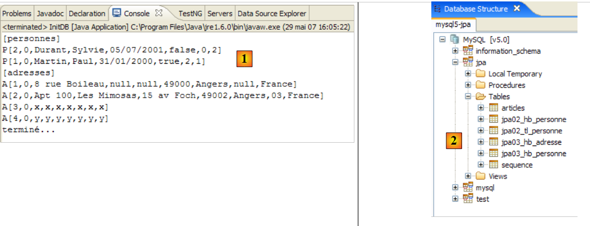 |
 |
- [1]: إخراج وحدة التحكم
- [2]: الجداول [jpa03_hb_*] في عرض مستكشف SQL
- [3]: جدول الأشخاص
- [4]: جدول العناوين. جميعها موجودة هناك. لاحظ أيضًا العلاقة بين عمود [adresse_id] في [3] وعمود [id] في [4] (مفتاح خارجي).
// création d'objets
public static void test1() throws ParseException {
// contexte de persistance
EntityManager em = getEntityManager();
// création personnes
p1 = new Personne("Martin", "Paul", new SimpleDateFormat("dd/MM/yy").parse("31/01/2000"), true, 2);
p2 = new Personne("Durant", "Sylvie", new SimpleDateFormat("dd/MM/yy").parse("05/07/2001"), false, 0);
// création adresses
a1 = new Adresse("8 rue Boileau", null, null, "49000", "Angers", null, "France");
a2 = new Adresse("Apt 100", "Les Mimosas", "15 av Foch", "49002", "Angers", "03", "France");
a3 = new Adresse("x", "x", "x", "x", "x", "x", "x");
a4 = new Adresse("y", "y", "y", "y", "y", "y", "y");
// associations personne <--> adresse
p1.setAdresse(a1);
a1.setPersonne(p1);
p2.setAdresse(a2);
a2.setPersonne(p2);
// début transaction
EntityTransaction tx = em.getTransaction();
tx.begin();
// persistance des personnes
em.persist(p1);
em.persist(p2);
// et des adresses a3 et a4 non liées à des personnes
em.persist(a3);
em.persist(a4);
// fin transaction
tx.commit();
// on affiche les tables
dumpPersonne();
dumpAdresse();
}
// modifier un objet du contexte
public static void test2() {
// contexte de persistance
EntityManager em = getEntityManager();
// début transaction
EntityTransaction tx = em.getTransaction();
tx.begin();
// on incrémente le nbre d'enfants de p1
p1.setNbenfants(p1.getNbenfants() + 1);
// on modifie son état marital
p1.setMarie(false);
// l'objet p1 est automatiquement sauvegardé (dirty checking)
// lors de la prochaine synchronisation (commit ou select)
// fin transaction
tx.commit();
// on affiche la nouvelle table
dumpPersonne();
}
- السطر 4: زاد عدد أطفال الشخص p1 بمقدار 1، وتغيرت نسخته من 0 إلى 1
// supprimer un objet appartenant au contexte de persistance
public static void test4() {
// contexte de persistance
EntityManager em = getEntityManager();
// début transaction
EntityTransaction tx = em.getTransaction();
tx.begin();
// on supprime l'objet attaché p2
em.remove(p2);
// fin transaction
tx.commit();
// on affiche les nouvelles tables
dumpPersonne();
dumpAdresse();
}
- السطر 9: نزيل الشخص p2. هذا الشخص له علاقة متسلسلة مع العنوان a2. لذلك، يجب إزالة العنوان a2 أيضًا.
- الشخص p2 الذي يظهر في السطر 3 من الاختبار 1 لم يعد موجودًا في الاختبار 4
- وينطبق الأمر نفسه على عنوانه a2، الذي يظهر في السطر 7 من الاختبار 1 ولكنه غائب عن الاختبار 4.
// détacher, réattacher et modifier
public static void test5() {
// nouveau contexte de persistance
EntityManager em = getNewEntityManager();
// début transaction
EntityTransaction tx = em.getTransaction();
tx.begin();
// on réattache p1 au nouveau contexte
p1 = em.find(Personne.class, p1.getId());
// on change l'adresse de p1
p1.getAdresse().setVille("Paris");
// fin transaction
tx.commit();
// on affiche les nouvelles tables
dumpPersonne();
dumpAdresse();
}
- السطر 4: لدينا سياق ثبات جديد، لذا فهو فارغ.
- السطر 9: نضيف الشخص p1 إليه. يتم جلب p1 من قاعدة البيانات لأنه غير موجود في السياق. لا يتم جلب العناصر التي تعتمد على p1 (عنوانه) من قاعدة البيانات لأننا كتبنا:
@OneToOne(..., fetch=FetchType.LAZY)
- السطر 11: نقوم بتعديل حقل المدينة في عنوان p1. وبسبب استدعاء getAddress، وإذا لم يكن عنوان p1 موجودًا بالفعل في سياق الاستمرارية، فسيتم استرجاعه من قاعدة البيانات.
- السطر 13: نقوم بتثبيت المعاملة، مما سيؤدي إلى مزامنة سياق الاستمرارية مع قاعدة البيانات. ستكتشف قاعدة البيانات أن عنوان الشخص p1 قد تم تعديله وستقوم بحفظه.
- الشخص p1 (السطر 3 من الاختبار 4، السطر 10 من الاختبار 5) لاحظ بشكل صحيح تغيير مدينته من أنجيه (السطر 5 من الاختبار 4) إلى باريس (السطر 12 من الاختبار 5).
// delete an Address object
public static void test6() {
EntityTransaction tx = null;
// new persistence context
EntityManager em = getNewEntityManager();
// start of transaction
tx = em.getTransaction();
tx.begin();
// reattach address a3 to new context
a3 = em.find(Adresse.class, a3.getId());
System.out.println(a3);
// we delete it
em.remove(a3);
// end transaction
tx.commit();
// dump table Address
dumpAdresse();
}
- السطر 5: نحن في سياق استمرارية جديد، لذا فهو فارغ.
- السطر 10: نضع العنوان a3 في سياق الاستمرارية
- السطر 13: نقوم بحذفه. كان عنوانًا يتيمًا (غير مرتبط بشخص). وبالتالي، يمكن حذفه.
- العنوان a3 من الاختبار 5 (السطر 6) قد اختفى من العناوين في الاختبار 6 (السطران 11-12)
// rollback
public static void test7() {
EntityTransaction tx = null;
try {
// nouveau contexte de persistance
EntityManager em = getNewEntityManager();
// début transaction
tx = em.getTransaction();
tx.begin();
// on réattache l'adresse a1 au nouveau contexte
newa1 = em.find(Adresse.class, a1.getId());
// on réattache l'adresse a4 au nouveau contexte
newa4 = em.find(Adresse.class, a4.getId());
// on essaie de les supprimer - devrait lancer une exception car on ne peut supprimer une adresse liée à une personne, ce qui est le cas de newa1
em.remove(newa4);
em.remove(newa1);
// fin transaction
tx.commit();
} catch (RuntimeException e1) {
// on a eu un pb
System.out.format("Erreur dans transaction [%s%n%s%n%s%n%s]%n", e1.getClass().getName(), e1.getMessage(), e1.getCause(), e1.getCause()
.getCause());
try {
if (tx.isActive())
tx.rollback();
} catch (RuntimeException e2) {
System.out.format("Erreur au rollback [%s]%n", e2.getMessage());
}
// on abandonne le contexte courant
em.clear();
}
// dump - la table Adresse n'a pas du changer à cause du rollback
dumpAdresse();
}
- test7: اختبار التراجع عن المعاملة
- السطر 6: نحن في سياق استمرارية جديد، لذا فهو فارغ.
- السطر 11: نضع العنوان a1 في سياق الاستمرارية، تحت المرجع newa1
- السطر 13: نضع العنوان a4 في سياق الاستمرارية، تحت المرجع newa4
- السطران 15-16: نحذف العنوانين newa1 و newa4. newa1 هو عنوان الشخص p1، وبالتالي يتم الإشارة إليه بواسطة p1 في قاعدة البيانات عبر مفتاح خارجي. وبالتالي، سيفشل حذف newa1 وسيؤدي إلى ظهور استثناء عند مزامنة سياق الاستمرارية عند إتمام المعاملة (السطر 18). سيتم التراجع عن المعاملة (السطر 25)، وبالتالي سيتم إلغاء كلتا العمليتين في المعاملة. لذلك، يجب أن نلاحظ أن العنوان newa4، الذي كان من الممكن حذفه بشكل قانوني، لم يتم حذفه.
main : ----------- test6
A[3,0,x,x,x,x,x,x,x]
[adresses]
A[1,1,8 rue Boileau,null,null,49000,Paris,null,France]
A[4,0,y,y,y,y,y,y,y]
main : ----------- test7
Erreur dans transaction [javax.persistence.RollbackException
Error while commiting the transaction
org.hibernate.ObjectDeletedException: deleted entity passed to persist: [entites.Adresse#<null>]
null]
[adresses]
A[1,1,8 rue Boileau,null,null,49000,Paris,null,France]
A[4,0,y,y,y,y,y,y,y]
- جدول العناوين في الاختبار 7 (السطور 12–13) مطابق للجدول الموجود في الاختبار 6 (السطور 4–5). يبدو أن عملية التراجع قد حدثت. ومع ذلك، فإن رسالة الخطأ في السطر 9 تظل لغزًا وتستدعي مزيدًا من التحقيق. يبدو أن الاستثناء الذي حدث ليس هو الاستثناء المتوقع. نحتاج إلى ضبط سجلات Hibernate على الوضع DEBUG في log4j.properties للحصول على صورة أوضح:
# Root logger option
log4j.rootLogger=ERROR, stdout
# Hibernate logging options (INFO only shows startup messages)
log4j.logger.org.hibernate=DEBUG
@OneToOne(mappedBy = "adresse", fetch=FetchType.LAZY)
private Personne personne;
- أهمية تمكين التسجيل التفصيلي لفهم ما يفعله ORM
- في حين أن ORM يمكن أن يجعل حياة المطور أسهل، إلا أنه يمكن أن يعقدها أيضًا من خلال إخفاء السلوكيات التي يحتاج المطور إلى معرفتها. في هذه الحالة، طريقة تحميل تبعيات @Entity.
 |
package entites;
...
@Entity
@Table(name = "jpa04_hb_adresse")
public class Adresse implements Serializable {
// fields
@Id
@Column(nullable = false)
@GeneratedValue(strategy = GenerationType.AUTO)
private Long id;
@Column(nullable = false)
@Version
private int version;
@Column(length = 30, nullable = false)
private String adr1;
...
@Column(length = 20, nullable = false)
private String pays;
// @OneToOne(mappedBy = "address", fetch=FetchType.LAZY)
// private Person person;
// manufacturers
public Adresse() {
}
- السطران 25-26: تمت إزالة العلاقة العكسية @OneToOne. من المهم أن نفهم أن العلاقة العكسية ليست ضرورية أبدًا. فقط العلاقة الأساسية هي الضرورية. يمكن استخدام العلاقة العكسية للراحة. هنا، وفرت طريقة بسيطة لاسترداد مالك العنوان. يمكن دائمًا استبدال العلاقة العكسية باستعلام JPQL. وهذا ما سنوضحه في المثال التالي.
main : ----------- test6
A[3,0,x,x,x,x,x,x,x]
[adresses]
A[1,1,8 rue Boileau,null,null,49000,Paris,null,France]
A[4,0,y,y,y,y,y,y,y]
main : ----------- test7
Erreur dans transaction [javax.persistence.RollbackException
Error while commiting the transaction
org.hibernate.exception.ConstraintViolationException: could not delete: [entites.Adresse#1]
java.sql.SQLException: Cannot delete or update a parent row: a foreign key constraint fails (`jpa/jpa04_hb_personne`, CONSTRAINT `FKEA3F04515FE379D0` FOREIGN KEY (`adresse_id`) REFERENCES `jpa04_hb_adresse` (`id`))]
[adresses]
A[1,1,8 rue Boileau,null,null,49000,Paris,null,France]
A[4,0,y,y,y,y,y,y,y]
- هذه المرة، نحصل على الاستثناء المتوقع: الاستثناء الذي أطلقه برنامج تشغيل JDBC لأننا حاولنا حذف صف في جدول [العناوين] الذي يشير إليه مفتاح خارجي من صف في جدول [الأشخاص]. يوضح الصف [10] سبب الخطأ بوضوح.
- وقد تم التراجع بالفعل: في نهاية الاختبار 7، أصبح جدول [address] (الصفوف 12–13) كما كان في نهاية الاختبار 6 (الصفوف 4–5).
// relation inverse un-à-un
// réalisée par une requête JPQL
public static void test8() {
EntityTransaction tx = null;
// nouveau contexte de persistance
EntityManager em = getNewEntityManager();
// début transaction
tx = em.getTransaction();
tx.begin();
// on réattache l'adresse a1 au nouveau contexte
newa1 = em.find(Adresse.class, a1.getId());
// on récupère la personne propriétaire de cette adresse
Personne p1 = (Personne) em.createQuery("select p from Personne p join p.adresse a where a.id=:adresseId").setParameter("adresseId", newa1.getId())
.getSingleResult();
// on les affiche
System.out.println("adresse=" + newa1);
System.out.println("personne=" + p1);
// fin transaction
tx.commit();
}
- السطر 6: سياق استمرارية فارغ جديد
- السطران 8-9: بدء المعاملة
- السطر 11: يتم إدخال العنوان a1 إلى سياق الاستمرارية ويتم الإشارة إليه بواسطة newa1.
- السطر 13: يتم استرداد الشخص p1 الذي له العنوان newa1 عبر استعلام JPQL. نعلم أن [Person] و [Address] مرتبطان بعلاقة مفتاح خارجي. في فئة [Person]، الحقل [address] هو الذي يحتوي على التعليق التوضيحي @OneToOne، الذي يحدد هذه العلاقة. تقوم عبارة JPQL "select p from Person p join p.address a" بإجراء ربط بين جدولي [Person] و [Address]. SQL المكافئ الذي تم إنشاؤه في وحدة تحكم Hibernate (انظر الأمثلة في القسم 2.1.12) هو كما يلي:
- السطران 16–17: نعرض العنوان newa1 والشخص p1 المرتبط بهذا العنوان، للتحقق.
 |
- [1]: انتقل إلى منظور [Hibernate Console] (Window / Open Perspective / Other)
- [2]: نقوم بإنشاء تكوين جديد
- باستخدام الزر [4]، نختار مشروع Java الذي يتم إنشاء تكوين Hibernate له. يظهر اسمه في [3].
- في [5]، ندخل الاسم الذي نريده لهذا التكوين. هنا، استخدمنا اسم مشروع Java.
- في [6]، نحدد أننا نستخدم تكوين JPA حتى تعرف الأداة أنه يجب عليها استخدام ملف [META-INF/persistence.xml]
- في [7]، نحدد في ملف [META-INF/persistence.xml] أنه يجب استخدام وحدة الاستمرارية المسماة jpa.
- في [8]، نقوم بالتحقق من صحة التكوين.
 |
- في [1]: يحتوي التكوين الذي تم إنشاؤه على بنية شجرية من ثلاثة فروع
- في [2]: يسرد فرع [Configuration] الكائنات التي استخدمتها وحدة التحكم لتكوين نفسها: هنا، @Entity Person و Address.
- في [3]: مصنع الجلسة (Session Factory) هو مفهوم في Hibernate مشابه لـ EntityManager في JPA. وهو يربط الفجوة بين الكائنات والعلاقات باستخدام كائنات من فرع [Configuration]. يعرض [3] كائنات سياق الاستمرارية، وهي في هذه الحالة كائنات @Entity Person و Address.
- في [4]: قاعدة البيانات التي يتم الوصول إليها عبر التكوين الموجود في [persistence.xml]. هنا نجد الجداول [jpa04_hb_*] التي تم إنشاؤها بواسطة مشروع Eclipse الحالي.
 |
- في [1]، نقوم بإنشاء محرر HQL
- في محرر HQL،
- في [2]، نختار تكوين Hibernate المراد استخدامه في حالة وجود أكثر من تكوين (وهذا هو الحال هنا)
- في [3]، اكتب أمر JPQL الذي تريد تنفيذه؛ هنا، أمر JPQL من الاختبار 8
- في [4]، نقوم بتنفيذه
- في [5]، تحصل على نتائج الاستعلام في نافذة [Hibernate Query Result].
- في [6]، تتيح لك نافذة [Hibernate Dynamic SQL preview] عرض استعلام SQL الذي تم تنفيذه.
 |
- في [1]: الأمر JPQL الذي يقوم بعملية الربط بين كيانات Person و Address. يشير [ref1] إلى هذا النموذج باسم "ربط ثيتا".
- في [2]: المكافئ في SQL
- في [3]: النتيجة
 |
- في [1]: استعلام HQL. لا يقبل JPQL الترميز p.address.id. فهو يقبل مستوى واحدًا فقط من الإحالة غير المباشرة.
- في [2]: المكافئ في SQL. لاحظ أنه يتجنب ربط الجداول.
- في [3]: النتيجة
 |
- في [1]: قائمة الأشخاص مع عناوينهم
- في [2]: المكافئ في لغة SQL.
- في [3]: النتيجة
 |
- في [1]: قائمة العناوين مع مالكها، إن وجد، أو لا شيء بخلاف ذلك (الربط الخارجي الأيمن: كيان العنوان، الذي سيوفر الصفوف غير المرتبطة بالشخص، يقع على يمين كلمة الربط).
- في [2]: المكافئ في SQL.
- في [3]: النتيجة
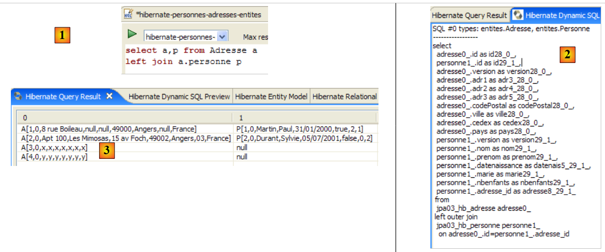 |
- في [1]: قائمة العناوين مع مالكها إن وجد، أو لا شيء في حالة عدم وجود مالك (الربط الخارجي الأيسر: كيان العنوان، الذي سيعرض صفوفًا لا علاقة لها بكيان الشخص، يقع على الجانب الأيسر من كلمة الربط).
- في [2]: المكافئ في SQL.
- في [3]: النتيجة
 |
 |
<persistence-unit name="jpa" transaction-type="RESOURCE_LOCAL">
<!-- provider -->
<provider>oracle.toplink.essentials.PersistenceProvider</provider>
<!-- classes persistantes -->
<class>entites.Personne</class>
<class>entites.Adresse</class>
<!-- propriétés de l'unité de persistance -->
...
- السطران 5 و 6: الكيانان المُديران
 |
CREATE TABLE jpa04_tl_personne (ID BIGINT NOT NULL, PRENOM VARCHAR(30) NOT NULL, DATENAISSANCE DATE NOT NULL, VERSION INTEGER NOT NULL, MARIE TINYINT(1) default 0 NOT NULL, NBENFANTS INTEGER NOT NULL, NOM VARCHAR(30) UNIQUE NOT NULL, adresse_id BIGINT UNIQUE NOT NULL, PRIMARY KEY (ID))
CREATE TABLE jpa04_tl_adresse (ID BIGINT NOT NULL, ADR3 VARCHAR(30), CODEPOSTAL VARCHAR(5) NOT NULL, ADR1 VARCHAR(30) NOT NULL, VILLE VARCHAR(20) NOT NULL, VERSION INTEGER NOT NULL, CEDEX VARCHAR(3), ADR2 VARCHAR(30), PAYS VARCHAR(20) NOT NULL, PRIMARY KEY (ID))
ALTER TABLE jpa04_tl_personne ADD CONSTRAINT FK_jpa04_tl_personne_adresse_id FOREIGN KEY (adresse_id) REFERENCES jpa04_tl_adresse (ID)
CREATE TABLE SEQUENCE (SEQ_NAME VARCHAR(50) NOT NULL, SEQ_COUNT DECIMAL(38), PRIMARY KEY (SEQ_NAME))
INSERT INTO SEQUENCE(SEQ_NAME, SEQ_COUNT) values ('SEQ_GEN', 1)
ALTER TABLE jpa04_tl_personne DROP FOREIGN KEY FK_jpa04_tl_personne_adresse_id
DROP TABLE jpa04_tl_personne
DROP TABLE jpa04_tl_adresse
DELETE FROM SEQUENCE WHERE SEQ_NAME = 'SEQ_GEN'
1  | 2 |
- في [1]، قاعدة البيانات، وفي [2]، لغة تعريف البيانات (DDL) الخاصة بها (MySQL5)
package entites;
...
@Entity
@Table(name="jpa05_hb_article")
public class Article implements Serializable {
// fields
@Id
@GeneratedValue(strategy = GenerationType.AUTO)
private Long id;
@SuppressWarnings("unused")
@Version
private int version;
@Column(length = 30)
private String nom;
// main relationship Article (many) -> Category (one)
// implemented by a foreign key (categorie_id) in Article
// 1 Article must have 1 Category (nullable=false)
@ManyToOne(fetch=FetchType.LAZY)
@JoinColumn(name = "categorie_id", nullable = false)
private Categorie categorie;
// manufacturers
public Article() {
}
// getters and setters
...
// toString
public String toString() {
return String.format("Article[%d,%d,%s,%d]", id, version, nom, categorie.getId());
}
}
- الأسطر 9-11: المفتاح الأساسي لـ @Entity
- الأسطر 13-15: رقم إصداره
- السطور 17-18: اسم المقالة
- الأسطر 20-25: علاقة "كثير إلى واحد" تربط @Entity Article بـ @Entity Category:
- السطر 23: تعليق ManyToOne. يشير Many إلى @Entity Article الذي نحن فيه، ويشير One إلى @Entity Category (السطر 25). يمكن أن تحتوي الفئة (One) على مقالات متعددة (Many).
- السطر 24: تعريف ManyToOne يحدد عمود المفتاح الخارجي في جدول [article]. سيتم تسميته (name) categorie_id، ويجب أن يحتوي كل صف على قيمة في هذا العمود (nullable=false).
- السطر 25: الفئة التي ينتمي إليها المقال. عند إضافة مقال إلى سياق الاستمرارية، نطلب عدم إضافة فئته على الفور (fetch=FetchType.LAZY، السطر 23). لا نعرف ما إذا كان هذا الطلب منطقيًا. سنرى.
package entites;
...
@Entity
@Table(name="jpa05_hb_categorie")
public class Categorie implements Serializable {
// fields
@Id
@GeneratedValue(strategy = GenerationType.AUTO)
private Long id;
@SuppressWarnings("unused")
@Version
private int version;
@Column(length = 30)
private String nom;
// inverse relationship Category (one) -> Article (many) from relationship Article (many) -> Category (one)
// cascade insertion Category -> insertion Articles
// cascade maj Category -> maj Articles
// cascade delete Category -> delete Articles
@OneToMany(mappedBy = "categorie", cascade = { CascadeType.ALL })
private Set<Article> articles = new HashSet<Article>();
// manufacturers
public Categorie() {
}
// getters and setters
...
// toString
public String toString() {
return String.format("Categorie[%d,%d,%s]", id, version, nom);
}
// bidirectional association Category <--> Article
public void addArticle(Article article) {
// the item is added to the collection of items in the category
articles.add(article);
// article changes category
article.setCategorie(this);
}
}
- الأسطر 8-11: المفتاح الأساسي لـ @Entity
- الأسطر 12-14: إصداره
- السطور 16-17: اسم الفئة
- الأسطر 19-24: مجموعة العناصر في الفئة
- السطر 23: تشير التعليقة التوضيحية @OneToMany إلى علاقة واحد إلى العديد. يشير "One" إلى @Entity [Category] التي نحن فيها حاليًا، ويشير "Many" إلى النوع [Article] في السطر 24: فئة واحدة (One) تحتوي على العديد (Many) من المقالات.
- السطر 23: التعليق التوضيحي هو العكس (mappedBy) للتعليق التوضيحي ManyToOne الموضوع على حقل الفئة في @Entity Article: mappedBy=category. علاقة ManyToOne الموضوعة على حقل الفئة في @Entity Article هي العلاقة الأساسية. وهي ضرورية. فهي تنفذ علاقة المفتاح الأجنبي التي تربط @Entity Article بـ @Entity Category. العلاقة OneToMany الموضوعة على حقل المقالات في @Entity Category هي العلاقة العكسية. وهي ليست أساسية. إنها وسيلة ملائمة لاسترجاع مقالات فئة ما. وبدون هذه الوسيلة الملائمة، سيتم استرجاع هذه المقالات عبر استعلام JPQL.
- السطر 23: `cascadeType.ALL` يحدد أن العمليات (persist، merge، remove) التي يتم إجراؤها على `@Entity Category` يجب أن تنتقل إلى مقالاتها.
- السطر 24: سيتم وضع المقالات الموجودة في فئة ما في كائن من النوع `Set<Article>`. ولا يسمح النوع `Set` بوجود تكرارات. وبالتالي، لا يمكن إضافة المقالة نفسها مرتين إلى كائن `Set<Article>`. ما المقصود بـ«المقالة نفسها»؟ للإشارة إلى أن المقالة `a` هي نفس المقالة `b`، تستخدم لغة جافا التعبير `a.equals(b)`. في فئة Object، وهي الفئة الأم لجميع الفئات، يكون a.equals(b) صحيحًا إذا كان a==b، أي إذا كان للكائنين a و b نفس موقع الذاكرة. قد يرغب المرء في القول إن العنصرين a و b متطابقان إذا كان لهما نفس الاسم. في هذه الحالة، يجب على المطور إعادة تعريف طريقتين في فئة [Item]:
- equals: التي يجب أن ترجع true إذا كان للعنصرين نفس الاسم
- hashCode: يجب أن ترجع قيمة عددية متطابقة لكائنين [Article] تعتبرهما طريقة equals متساويين. هنا، سيتم بناء القيمة من اسم المقالة. يمكن أن تكون القيمة التي ترجعها hashCode أي عدد صحيح. وتُستخدم في حاويات كائنات متنوعة، لا سيما القواميس (Hashtable).
- السطر 38: تسمح لنا طريقة [addArticle] بإضافة مقال إلى فئة. تضمن الطريقة تحديث طرفي علاقة OneToMany التي تربط [Category] بـ [Article].
 |
package tests;
...
public class InitDB {
// constant
private final static String TABLE_ARTICLE = "jpa05_hb_article";
private final static String TABLE_CATEGORIE = "jpa05_hb_categorie";
public static void main(String[] args) {
// Persistence context
EntityManagerFactory emf = Persistence.createEntityManagerFactory("jpa");
EntityManager em = null;
// a EntityManager is retrieved from the previous EntityManagerFactory
em = emf.createEntityManager();
// start of transaction
EntityTransaction tx = em.getTransaction();
tx.begin();
// request
Query sql1;
// delete elements from the ARTICLE table
sql1 = em.createNativeQuery("delete from " + TABLE_ARTICLE);
sql1.executeUpdate();
// delete elements from the CATEGORIE table
sql1 = em.createNativeQuery("delete from " + TABLE_CATEGORIE);
sql1.executeUpdate();
// create three categories
Categorie categorieA = new Categorie();
categorieA.setNom("A");
Categorie categorieB = new Categorie();
categorieB.setNom("B");
Categorie categorieC = new Categorie();
categorieC.setNom("C");
// create 3 items
Article articleA1 = new Article();
articleA1.setNom("A1");
Article articleA2 = new Article();
articleA2.setNom("A2");
Article articleB1 = new Article();
articleB1.setNom("B1");
// link them to their category
categorieA.addArticle(articleA1);
categorieA.addArticle(articleA2);
categorieB.addArticle(articleB1);
// persist categories and cascade (insert) articles
em.persist(categorieA);
em.persist(categorieB);
em.persist(categorieC);
// category display
System.out.println("[categories]");
for (Object p : em.createQuery("select c from Categorie c order by c.nom asc").getResultList()) {
System.out.println(p);
}
// item display
System.out.println("[articles]");
for (Object p : em.createQuery("select a from Article a order by a.nom asc").getResultList()) {
System.out.println(p);
}
// end transaction
tx.commit();
// end EntityManager
em.close();
// end EntityMangerFactory
emf.close();
// log
System.out.println("terminé...");
}
}
- الأسطر 22-27: يتم إفراغ الجدولين [article] و [category]. لاحظ أنه يجب أن نبدأ بالجدول الذي يحتوي على المفتاح الخارجي. إذا بدأنا بالجدول [category]، فسنحذف الفئات المشار إليها بواسطة الصفوف في الجدول [article]، وسيرفض نظام إدارة قواعد البيانات (DBMS) ذلك.
- الأسطر 29-34: نقوم بإنشاء ثلاث فئات A و B و C
- الأسطر 36–41: نقوم بإنشاء ثلاث مقالات: A1 و A2 و B1 (يشير الحرف إلى الفئة)
- الأسطر 43-45: يتم وضع المقالات الثلاثة في فئاتها الخاصة
- الأسطر 47-49: يتم وضع الفئات الثلاث في سياق الاستمرارية. وبسبب التسلسل الهرمي Category → Article، سيتم وضع المقالات المرتبطة بها هناك أيضًا. وبالتالي، أصبحت جميع الكائنات التي تم إنشاؤها الآن في سياق الاستمرارية.
- الأسطر 50-59: يتم الاستعلام عن سياق الاستمرارية للحصول على قائمة الفئات والعناصر. ونعلم أن هذا سيؤدي إلى مزامنة السياق مع قاعدة البيانات. وفي هذه المرحلة، سيتم حفظ الفئات والعناصر في الجداول الخاصة بها.
 |
- [1]: إخراج وحدة التحكم
- [2]: الجداول [jpa05_hb_*] في عرض مستكشف SQL
- [3]: جدول الفئات
- [4]: جدول المقالات. لاحظ العلاقة بين [categorie_id] في [4] و[id] في [3] (مفتاح خارجي).
// search for a particular item
public static void test3() {
// new persistence context
EntityManager em = getNewEntityManager();
// transaction
EntityTransaction tx = em.getTransaction();
tx.begin();
// loading category
Categorie categorie = em.find(Categorie.class, categorieA.getId());
// category display and related articles
System.out.format("Articles de la catégorie %s :%n", categorie);
for (Article a : categorie.getArticles()) {
System.out.println(a);
}
// end transaction
tx.commit();
}
- السطر 4: لدينا سياق ثبات جديد، لذا فهو فارغ
- السطران 6-7: بدء المعاملة
- السطر 9: يتم استرداد الفئة A من قاعدة البيانات إلى سياق الاستمرارية
- السطر 11: نعرض الفئة A
- الأسطر 12-14: نعرض العناصر الموجودة في الفئة A. يوضح هذا فائدة العلاقة العكسية OneToMany لـ @Entity Category. وجودها يوفر علينا الحاجة إلى إجراء استعلام JPQL لاسترداد العناصر الموجودة في الفئة A. للحصول عليها، نستخدم طريقة get لحقل العناصر.
- السطر 20: الفئة A
- السطران 21-22: العنصران في الفئة أ
// supprimer un article
@SuppressWarnings("unchecked")
public static void test4() {
// nouveau contexte de persistance
EntityManager em = getNewEntityManager();
// transaction
EntityTransaction tx = em.getTransaction();
tx.begin();
// chargement article A1
Article newarticle1 = em.find(Article.class, articleA1.getId());
// suppression article A1 (aucune catégorie n'est actuellement chargée)
em.remove(newarticle1);
// toplink : l'article doit être enlevé de sa catégorie sinon le test6 plante
// hibernate : ce n'est pas nécessaire
newarticle1.getCategorie().getArticles().remove(newarticle1);
// fin transaction
tx.commit();
// dump des articles
dumpArticles();
}
- الاختبار 4 يحذف العنصر A1
- السطر 5: نبدأ بسياق جديد فارغ
- السطر 10: تتم إضافة المقالة A1 إلى سياق الاستمرارية. وسيتم الإشارة إليها هناك بواسطة newarticle1.
- السطر 12: يتم إزالته من السياق
- السطر 15: الفئات A و B و C، والعناصر A1 و A2 و B1، إذا لم تعد ثابتة، فإنها لا تزال موجودة في الذاكرة. إنها ببساطة منفصلة عن سياق الثبات. يتم إزالة المقالة A1، ، التي تعد جزءًا من المقالات في الفئة A، منها. سيسمح هذا لاحقًا بإعادة ربط الفئة A بسياق الاستمرارية. إذا لم يتم ذلك، فسيتم إعادة ربط الفئة A بمجموعة من المقالات، تم حذف إحداها. لا يبدو أن هذا يزعج Hibernate، ولكنه يتسبب في تعطل TopLink.
- السطر 19: نعرض جميع العناصر للتحقق من اختفاء A1.
// modification d'1 article
public static void test5() {
// nouveau contexte de persistance
EntityManager em = getNewEntityManager();
// transaction
EntityTransaction tx = em.getTransaction();
tx.begin();
// modification articleA2
articleA2.setNom(articleA2.getNom() + "-");
// articleA2 est remis dans le contexte de persistance
em.merge(articleA2);
// fin transaction
tx.commit();
// dump des articles
dumpArticles();
}
- الاختبار 5 يغير اسم العنصر A2
- السطر 4: نبدأ بسياق جديد فارغ
- السطر 9: نغير اسم العنصر المنفصل A2، ليصبح "A2-".
- السطر 11: يتم إعادة ربط العنصر المنفصل A2 بسياق الاستمرارية. لاحظ أن A2 يظل كائنًا منفصلاً. إن الكائن em.merge(itemA2) هو الذي أصبح الآن جزءًا من سياق الاستمرارية. لم يتم تخزين هذا الكائن في متغير هنا، كما هو معتاد. وبالتالي، لا يمكن الوصول إليه.
- السطر 13: مزامنة سياق الاستمرارية مع قاعدة البيانات. سيتم تعديل المقالة A2 في قاعدة البيانات، وسيتغير رقم إصدارها من N إلى N+1. لم يعد إصدار الذاكرة المنفصل articleA2 صالحًا. وينطبق الأمر نفسه على الكائن المنفصل الذي يمثل الفئة A، لأنه يحتوي على articleA2 ضمن مقالاته.
- السطر 15: نعرض جميع العناصر للتحقق من تغيير اسم العنصر A2
// modification d'1 catégorie et de ses articles
public static void test6() {
// nouveau contexte de persistance
EntityManager em = getNewEntityManager();
// transaction
EntityTransaction tx = em.getTransaction();
tx.begin();
// chargement catégorie
categorieA = em.find(Categorie.class, categorieA.getId());
// liste des articles de la catégorie A
for (Article a : categorieA.getArticles()) {
a.setNom(a.getNom() + "-");
}
// modification nom catégorie
categorieA.setNom(categorieA.getNom() + "-");
// fin transaction
tx.commit();
// dump des catégories et des articles
dumpCategories();
dumpArticles();
}
- يغير الاختبار 6 اسم الفئة A وجميع مقالاتها
- السطر 4: نبدأ بسياق جديد فارغ
- السطر 9: نسترد الفئة A من قاعدة البيانات. لا ندمج كائن الفئة A المنفصل لأننا نعلم أنه يحتوي على مرجع إلى المقالة A2، التي أصبحت قديمة. لذلك نبدأ من الصفر.
- السطران 11-12: نغير اسم جميع المقالات في الفئة A. مرة أخرى، نستخدم العلاقة العكسية OneToMany عبر طريقة getArticles.
- السطر 15: يتم تغيير اسم الفئة أيضًا
- السطر 17: نهاية المعاملة. تتم مزامنة السياق مع قاعدة البيانات. سيتم تحديث جميع الكائنات في السياق التي تم تعديلها في قاعدة البيانات.
- السطران 21-22: يتم عرض العناصر والفئات للتحقق
// category deletion
public static void test7() {
// new persistence context
EntityManager em = getNewEntityManager();
// transaction
EntityTransaction tx = em.getTransaction();
tx.begin();
// persistence catégorieB and cascade (merge) associated items
Categorie mergedcategorieB = em.merge(categorieB);
// category deletion and cascading (delete) of associated items
em.remove(mergedcategorieB);
// end transaction
tx.commit();
// dump categories and articles
dumpCategories();
dumpArticles();
}
- الاختبار 7 يحذف الفئة B وبالتالي مقالاتها
- السطر 4: نبدأ بسياق جديد فارغ
- السطر 9: الفئة B موجودة في الذاكرة ككائن منفصل عن سياق الاستمرارية. نقوم بدمجها مرة أخرى في سياق الاستمرارية. ونتيجة لذلك، سيتم أيضًا دمج مقالاتها (المقالة B1) وبالتالي إعادة دمجها في سياق الاستمرارية.
- السطر 11: الآن بعد أن أصبحت الفئة B في السياق، يمكننا إزالتها. وبالتتابع، سيتم أيضًا إزالة عناصرها. هذه العملية ممكنة لأن عملية الدمج في السطر 9 أعادت دمجها في سياق الاستمرارية.
- السطر 13: نهاية المعاملة. سيتم مزامنة السياق. سيتم حذف الكائنات الموجودة في السياق والتي تمت إزالتها من قاعدة البيانات.
- السطران 15-16: نعرض العناصر والفئات للتحقق
// requêtes
@SuppressWarnings("unchecked")
public static void test8() {
// nouveau contexte de persistance
EntityManager em = getNewEntityManager();
// transaction
EntityTransaction tx = em.getTransaction();
tx.begin();
// liste des articles de la catégorie A
List articles = em
.createQuery(
"select a from Categorie c join c.articles a where c.nom like 'A%' order by a.nom asc")
.getResultList();
// affichages articles
System.out.println("Articles de la catégorie A");
for (Object a : articles) {
System.out.println(a);
}
// fin transaction
tx.commit();
}
- يوضح الاختبار 7 كيفية استرداد العناصر من فئة ما دون استخدام العلاقة العكسية. وهذا يثبت أن العلاقة العكسية ليست ضرورية.
- السطر 4: نبدأ بسياق جديد فارغ
- السطر 10: استعلام JPQL يسترد جميع المقالات في فئة يبدأ اسمها بحرف A
- الأسطر 15–17: عرض نتائج الاستعلام.
 |
...
@Entity
@Table(name="jpa05_hb_categorie")
public class Categorie implements Serializable {
// fields
@Id
@GeneratedValue(strategy = GenerationType.AUTO)
private Long id;
@SuppressWarnings("unused")
@Version
private int version;
@Column(length = 30)
private String nom;
// relationship OneToMany not inverse (no mappedby) Category (one) -> Article (many)
// implemented by a Categorie_Article join table, so that, starting from a category
// you can reach the items in this category
@OneToMany(cascade=CascadeType.ALL, fetch=FetchType.LAZY)
private Set<Article> articles = new HashSet<Article>();
// manufacturers
...
- الأسطر 18–22: ما زلنا نرغب في الاحتفاظ بالقدرة على العثور على المقالات في فئة معينة باستخدام العلاقة @OneToMany في السطر 21. ومع ذلك، نريد فهم تأثير السمة mappedBy، التي تحول العلاقة إلى عكس العلاقة الأساسية المحددة في مكان آخر في كيان @Entity آخر. هنا، تمت إزالة السمة mappedBy.
 |
- تم إنشاء جدول جديد [categorie_article] [1]. لم يكن موجودًا من قبل.
- هذا جدول ربط بين الجدولين [categorie] [2] و [article] [3]. إذا كانت كائنات المقالة a1 و a2 تنتمي إلى الفئة c1، فسيحتوي جدول الربط على الصفوف التالية:
- تم إنشاء جدول الربط [category_article] [1] بواسطة Hibernate بحيث يمكننا، بدءًا من كائن الفئة c، استرداد كائنات المقالات a التابعة لـ c. إن علاقة @OneToMany هي التي فرضت إنشاء هذا الجدول. ولأننا لم نعلنها على أنها العكس للعلاقة الأساسية @ManyToOne الخاصة بـ @Entity Article، لم يكن Hibernate على علم بإمكانية استخدام هذه العلاقة الأساسية لاسترداد مقالات فئة c. ولذلك، فقد وجد طريقة أخرى.
- يساعد هذا المثال في توضيح مفاهيم العلاقات الأساسية والعكسية. تستخدم إحداهما (العكسية) خصائص الأخرى (الأساسية).
alter table jpa05_hb_categorie_jpa06_hb_article
drop
foreign key FK79D4BA1D26D17756;
alter table jpa05_hb_categorie_jpa06_hb_article
drop
foreign key FK79D4BA1D424C61C9;
alter table jpa06_hb_article
drop
foreign key FK4547168FECCE8750;
drop table if exists jpa05_hb_categorie;
drop table if exists jpa05_hb_categorie_jpa06_hb_article;
drop table if exists jpa06_hb_article;
create table jpa05_hb_categorie (
id bigint not null auto_increment,
version integer not null,
nom varchar(30),
primary key (id)
) ENGINE=InnoDB;
create table jpa05_hb_categorie_jpa06_hb_article (
jpa05_hb_categorie_id bigint not null,
articles_id bigint not null,
primary key (jpa05_hb_categorie_id, articles_id),
unique (articles_id)
) ENGINE=InnoDB;
create table jpa06_hb_article (
id bigint not null auto_increment,
version integer not null,
nom varchar(30),
categorie_id bigint not null,
primary key (id)
) ENGINE=InnoDB;
alter table jpa05_hb_categorie_jpa06_hb_article
add index FK79D4BA1D26D17756 (jpa05_hb_categorie_id),
add constraint FK79D4BA1D26D17756
foreign key (jpa05_hb_categorie_id)
references jpa05_hb_categorie (id);
alter table jpa05_hb_categorie_jpa06_hb_article
add index FK79D4BA1D424C61C9 (articles_id),
add constraint FK79D4BA1D424C61C9
foreign key (articles_id)
references jpa06_hb_article (id);
alter table jpa06_hb_article
add index FK4547168FECCE8750 (categorie_id),
add constraint FK4547168FECCE8750
foreign key (categorie_id)
references jpa05_hb_categorie (id);
- الأسطر 19–24: إنشاء جدول [categorie]، والأسطر 33–39: إنشاء جدول [article]. لاحظ أن هذه الأسطر مطابقة لتلك الموجودة في المثال السابق.
- الأسطر 26–31: إنشاء جدول الربط [categorie_article] بسبب وجود علاقة @OneToMany غير العكسية لفئة @Entity Categorie. الصفوف في هذا الجدول من النوع [c,a]، حيث c هو المفتاح الأساسي لفئة c و a هو المفتاح الأساسي لعنصر a الذي ينتمي إلى الفئة c. يتكون المفتاح الأساسي لجدول الربط هذا من المفتاحين الأساسيين [c,a] المربوطين معًا (السطر 29).
- الأسطر 41-45: قيد المفتاح الخارجي من جدول [categorie_article] إلى جدول [categorie]
- الأسطر 47–51: قيد المفتاح الخارجي من الجدول [categorie_article] إلى الجدول [article]
- الأسطر 53–57: قيد المفتاح الخارجي من جدول [article] إلى جدول [categorie]
 |
 |
...
<!-- classes persistantes -->
<class>entites.Categorie</class>
<class>entites.Article</class>
...
- السطران 3 و 4: الكيانان المُديران
 |
CREATE TABLE jpa05_tl_article (ID BIGINT NOT NULL, VERSION INTEGER, NOM VARCHAR(30), categorie_id BIGINT NOT NULL, PRIMARY KEY (ID))
CREATE TABLE jpa05_tl_categorie (ID BIGINT NOT NULL, VERSION INTEGER, NOM VARCHAR(30), PRIMARY KEY (ID))
ALTER TABLE jpa05_tl_article ADD CONSTRAINT FK_jpa05_tl_article_categorie_id FOREIGN KEY (categorie_id) REFERENCES jpa05_tl_categorie (ID)
CREATE TABLE SEQUENCE (SEQ_NAME VARCHAR(50) NOT NULL, SEQ_COUNT DECIMAL(38), PRIMARY KEY (SEQ_NAME))
INSERT INTO SEQUENCE(SEQ_NAME, SEQ_COUNT) values ('SEQ_GEN', 1)
ALTER TABLE jpa05_tl_article DROP FOREIGN KEY FK_jpa05_tl_article_categorie_id
DROP TABLE jpa05_tl_article
DROP TABLE jpa05_tl_categorie
DELETE FROM SEQUENCE WHERE SEQ_NAME = 'SEQ_GEN'
@Entity
@Table(name = "jpa06_tl_categorie")
public class Categorie implements Serializable {
// fields
@Id
@GeneratedValue(strategy = GenerationType.AUTO)
private Long id;
@Version
private int version;
@Column(length = 30)
private String nom;
// relation OneToMany not inverse (no mappedby) Category (one) ->
// Article (many)
// implemented by a Categorie_Article join table, so that from
// category
// several items can be reached
@OneToMany(cascade = CascadeType.ALL, fetch = FetchType.LAZY)
private Set<Article> articles = new HashSet<Article>();
CREATE TABLE jpa06_tl_categorie (ID BIGINT NOT NULL, VERSION INTEGER, NOM VARCHAR(30), PRIMARY KEY (ID))
CREATE TABLE jpa06_tl_categorie_jpa06_tl_article (Categorie_ID BIGINT NOT NULL, articles_ID BIGINT NOT NULL, PRIMARY KEY (Categorie_ID, articles_ID))
CREATE TABLE jpa06_tl_article (ID BIGINT NOT NULL, VERSION INTEGER, NOM VARCHAR(30), categorie_id BIGINT NOT NULL, PRIMARY KEY (ID))
ALTER TABLE jpa06_tl_categorie_jpa06_tl_article ADD CONSTRAINT FK_jpa06_tl_categorie_jpa06_tl_article_articles_ID FOREIGN KEY (articles_ID) REFERENCES jpa06_tl_article (ID)
ALTER TABLE jpa06_tl_categorie_jpa06_tl_article ADD CONSTRAINT jpa06_tl_categorie_jpa06_tl_article_Categorie_ID FOREIGN KEY (Categorie_ID) REFERENCES jpa06_tl_categorie (ID)
ALTER TABLE jpa06_tl_article ADD CONSTRAINT FK_jpa06_tl_article_categorie_id FOREIGN KEY (categorie_id) REFERENCES jpa06_tl_categorie (ID)
CREATE TABLE SEQUENCE (SEQ_NAME VARCHAR(50) NOT NULL, SEQ_COUNT DECIMAL(38), PRIMARY KEY (SEQ_NAME))
INSERT INTO SEQUENCE(SEQ_NAME, SEQ_COUNT) values ('SEQ_GEN', 1)
- السطر 2: جدول الربط الذي ينفذ علاقة @OneToMany غير المعكوسة السابقة.
- السطر 3: الدمج في الفئة B
- السطر 4: يتم وضع المقالة التابعة B1 في السياق
- السطر 5: نفس الشيء بالنسبة للفئة B نفسها
- السطر 6: الإزالة في الفئة B
- السطر 7: الإزالة في العنصر B1 (تسلسلي)
- السطر 8: يطلب كود Java إجراء التزام بالمعاملة
- السطر 9: تبدأ المعاملة — لذا يبدو أنها لم تكن قد بدأت بعد.
- السطر 10: العنصر B1 على وشك الحذف بواسطة عملية DELETE في جدول [item]. وهنا تكمن المشكلة. يحتوي جدول الربط [category_item] على مرجع إلى الصف B1 في جدول [item]. سيؤدي حذف B1 من [item] إلى انتهاك قيد المفتاح الخارجي.
- السطر 13 وما بعده: تحدث الاستثناء
- مرة أخرى، لدينا مشكلة قابلية النقل بين Hibernate و Toplink: اجتاز Hibernate هذا الاختبار
- يواجه TopLink صعوبة في التعامل مع المواقف التي تكون فيها علاقتان معكوستين فعليًا لبعضهما البعض، بحيث لا يتم إعلان إحداهما كعلاقة أساسية والأخرى كعلاقة معكوسة. وهذا مقبول لأن هذا السيناريو يمثل في الواقع خطأ في التكوين. في مثالنا، لا توجد علاقة بين جدول [article] وجدول الربط [categorie_article]. لذلك يبدو من الطبيعي ألا يحاول Toplink العمل مع جدول [categorie_article] أثناء إجراء عملية على جدول [article].
|
- في [1]، قاعدة بيانات MySQL5
- سيمثل الكائن @Entity Person جدول [person]
- سيتم تمثيل @Entity Address بالجدول [address]
- ستمثل كائن @Entity Activity الجدول [activity]
- وستمثل @Entity PersonneActivite الجدول [personne_activite]
- تربط علاقة واحد إلى واحد كيان Person بكيان Address: الشخص p له عنوان a. سيكون كيان Person الذي يحمل المفتاح الخارجي هو الكيان الأساسي، وسيكون كيان Address هو الكيان العكسي.
- تربط علاقة متعددة إلى متعددة كيانات Person و Activity: لكل شخص أنشطة متعددة، ويقوم عدة أشخاص بممارسة النشاط الواحد. يمكن تنفيذ هذه العلاقة مباشرةً باستخدام تعليق @ManyToMany في كل من الكيانين، مع إعلان أحدهما على أنه عكس الآخر. سيتم استكشاف هذا الحل لاحقًا. هنا، ننفذ العلاقة المتعددة إلى متعددة باستخدام علاقتين من نوع واحد إلى متعدد:
- علاقة واحد إلى كثير تربط كيان "Person" بكيان "PersonActivity": يتم الإشارة إلى صف واحد (One) في جدول [person] بواسطة عدة (Many) صفوف في جدول [person_activity]. سيحتوي جدول [person_activity]، الذي يحمل المفتاح الخارجي، على العلاقة الأساسية @ManyToOne، وسيحتوي كيان "Person" على العلاقة العكسية @OneToMany.
- علاقة واحد إلى العديد تربط كيان Activity بكيان PersonActivity: يتم الإشارة إلى صف واحد (One) في جدول [activity] بواسطة العديد (Many) من الصفوف في جدول [person_activity]. سيحتوي جدول [person_activity]، الذي يحتوي على المفتاح الخارجي، على العلاقة الأساسية @ManyToOne، وسيحتوي كيان Activity على العلاقة العكسية @OneToMany.
@Entity
@Table(name = "jpa07_hb_personne")
public class Personne implements Serializable {
@Id
@Column(nullable = false)
@GeneratedValue(strategy = GenerationType.AUTO)
private Long id;
@Column(nullable = false)
@Version
private int version;
@Column(length = 30, nullable = false, unique = true)
private String nom;
@Column(length = 30, nullable = false)
private String prenom;
@Column(nullable = false)
@Temporal(TemporalType.DATE)
private Date datenaissance;
@Column(nullable = false)
private boolean marie;
@Column(nullable = false)
private int nbenfants;
// main relationship Person (one) -> Address (one)
// implemented by the foreign key Person(adresse_id) -> Address
// cascade insert Person -> insert Address
// cascade shift Person -> shift Address
// cascade deletion Person -> deletion Address
// a Person must have 1 Address (nullable=false)
// 1 Address belongs to 1 person only (unique=true)
@OneToOne(cascade = CascadeType.ALL)
@JoinColumn(name = "adresse_id", unique = true, nullable = false)
private Adresse adresse;
// relation Person (one) -> PersonneActivite (many)
// inverse of existing relationship PersonneActivite (many) -> Personne (one)
// cascade deletion Person -> supression PersonneActivite
@OneToMany(mappedBy = "personne", cascade = { CascadeType.REMOVE })
private Set<PersonneActivite> activites = new HashSet<PersonneActivite>();
// manufacturers
- الأسطر 30–39: علاقة @OneToOne (واحد إلى واحد) مع الكيان @Entity Address، يتم تنفيذها عبر مفتاح خارجي [address_id] (السطر 38) الذي سيحتوي عليه جدول [Person] في جدول [Address].
- الأسطر 41–45: علاقة واحد إلى كثير (@OneToMany) مع @Entity PersonneActivite. يتم الإشارة إلى شخص (واحد) من خلال عدة (كثير) صفوف في جدول الربط [personne_activite] الذي يمثله @Entity PersonneActivite. سيتم وضع كائنات PersonneActivite هذه في نوع Set<PersonneActivite>، حيث PersonneActivite هو نوع سنقوم بتعريفه بعد قليل.
- السطر 44: العلاقة واحد إلى كثير المحددة هنا هي عكس العلاقة الأساسية المحددة في حقل person في @Entity PersonneActivite (الكلمة الرئيسية mappedBy). لدينا تسلسل Person -> Activity عند الحذف: سيؤدي حذف شخص p إلى حذف العناصر الدائمة من النوع PersonneActivite الموجودة في مجموعة p.activites.
@Entity
@Table(name = "jpa07_hb_adresse")
public class Adresse implements Serializable {
// fields
@Id
@Column(nullable = false)
@GeneratedValue(strategy = GenerationType.AUTO)
private Long id;
@Column(nullable = false)
@Version
private int version;
@Column(length = 30, nullable = false)
private String adr1;
@Column(length = 30)
private String adr2;
@Column(length = 30)
private String adr3;
@Column(length = 5, nullable = false)
private String codePostal;
@Column(length = 20, nullable = false)
private String ville;
@Column(length = 3)
private String cedex;
@Column(length = 20, nullable = false)
private String pays;
@OneToOne(mappedBy = "adresse")
private Personne personne;
- السطران 28-29: علاقة @OneToOne التي تمثل العكس لعلاقة @OneToOne الخاصة بالعنوان في كيان @Entity Person (السطران 37-38 من Person).
@Entity
@Table(name = "jpa07_hb_activite")
public class Activite implements Serializable {
// fields
@Id
@Column(nullable = false)
@GeneratedValue(strategy = GenerationType.AUTO)
private Long id;
@Column(nullable = false)
@Version
private int version;
@Column(length = 30, nullable = false, unique = true)
private String nom;
// relation Activite (one) -> PersonneActivite (many)
// inverse of existing relationship PersonneActivite (many) -> Activite (one)
// cascade suppression Activite -> supression PersonneActivite
@OneToMany(mappedBy = "activite", cascade = { CascadeType.REMOVE })
private Set<PersonneActivite> personnes = new HashSet<PersonneActivite>();
- الأسطر 6-9: المفتاح الأساسي للنشاط
- الأسطر 11-13: رقم إصدار النشاط
- السطور 15-16: اسم النشاط
- الأسطر 18-22: العلاقة "واحد إلى العديد" التي تربط @Entity Activity بـ @Entity PersonActivity: يتم الإشارة إلى نشاط واحد (One) بواسطة عدة (Many) صفوف في جدول الربط [person_activity] الذي يمثله @Entity PersonActivity. سيتم وضع كائنات PersonneActivite هذه في نوع Set<PersonneActivite>.
- السطر 22: العلاقة "واحد إلى العديد" المحددة هنا هي عكس العلاقة الأساسية المحددة في حقل `activity` في `@Entity PersonneActivite` (باستخدام الكلمة الرئيسية `mappedBy`). لدينا تسلسل Activity -> PersonActivity عند الحذف: سيؤدي حذف نشاط من جدول [activity] إلى حذف كيانات PersonActivity الدائمة الموجودة في مجموعة a.people من جدول الربط [person_activity].
@Entity
// join table
@Table(name = "jpa07_hb_personne_activite")
public class PersonneActivite {
@Embeddable
public static class Id implements Serializable {
// composite key components
// points to a Person
@Column(name = "PERSONNE_ID")
private Long personneId;
// on an Activity
@Column(name = "ACTIVITE_ID")
private Long activiteId;
// manufacturers
...
// getters and setters
...
// toString
public String toString() {
return String.format("[%d,%d]", getPersonneId(), getActiviteId());
}
}
// fields of the Personne_Activite class
// composite key
@EmbeddedId
private Id id = new Id();
// main relationship PersonneActivite (many) -> Nobody (one)
// implemented by the foreign key: personneId (PersonneActivite (many) -> Personne (one)
// personneId is also part of the composite primary key
// JPA does not need to manage this foreign key (insertable = false, updatable = false), as this is done by the application itself in its constructor
@ManyToOne
@JoinColumn(name = "PERSONNE_ID", insertable = false, updatable = false)
private Personne personne;
// main relationship PersonneActivite -> Activity
// implemented by the foreign key: activiteId (PersonneActivite (many) -> Activite (one)
// activiteId is also part of the composite primary key
// JPA does not need to manage this foreign key (insertable = false, updatable = false), as this is done by the application itself in its constructor
@ManyToOne()
@JoinColumn(name = "ACTIVITE_ID", insertable = false, updatable = false)
private Activite activite;
// manufacturers
public PersonneActivite() {
}
public PersonneActivite(Personne p, Activite a) {
// foreign keys are set by the application
getId().setPersonneId(p.getId());
getId().setActiviteId(a.getId());
// two-way associations
this.setPersonne(p);
this.setActivite(a);
p.getActivites().add(this);
a.getPersonnes().add(this);
}
// getters and setters
...
// toString
public String toString() {
return String.format("[%s,%s,%s]", getId(), getPersonne().getNom(), getActivite().getNom());
}
}
- يحتوي الجدول [person_activity] على صفوف بالشكل [p,a]، حيث p هو المفتاح الأساسي لشخص ما و a هو المفتاح الأساسي لنشاط ما. يجب أن يكون لكل جدول مفتاح أساسي، و [person_activity] ليس استثناءً. حتى الآن، كنا قد عرّفنا مفاتيح أساسية تم إنشاؤها ديناميكيًا بواسطة نظام إدارة قواعد البيانات (DBMS). يمكننا أن نفعل الشيء نفسه هنا. سنستخدم تقنية أخرى، حيث يحدد التطبيق نفسه قيم المفتاح الأساسي للجدول. هنا، يشير الصف [p1,a1] إلى أن الشخص p1 يشارك في النشاط a1. لا يمكن أن يظهر هذا الصف نفسه مرة ثانية في الجدول. وبالتالي، فإن الزوج (p,a) هو مرشح جيد ليكون مفتاحًا أساسيًا. وهذا ما يُسمى بالمفتاح الأساسي المركب.
- السطران 30-31: المفتاح الأساسي المركب. التعليق التوضيحي @EmbeddedId (المعروف سابقًا باسم @Id) مشابه لترميز @Embedded المطبق على حقل Address الخاص بالشخص. في تلك الحالة، كان ذلك يعني أن حقل Address كان مثيلًا لفئة خارجية ولكن كان يجب إدراجه في نفس الجدول الذي يوجد فيه الشخص. هنا، المعنى هو نفسه، باستثناء أنه للإشارة إلى أننا نتعامل مع المفتاح الأساسي، يصبح التعليق التوضيحي @EmbeddedId.
- السطر 31: يتم إنشاء كائن فارغ يمثل المفتاح الأساسي `id` عند إنشاء مثيل الكائن `PersonneActivite`. يتم تعريف الفئة التي تمثل المفتاح الأساسي في الأسطر 7-26 كفئة عامة ثابتة داخلية لفئة `PersonneActivite`. إن كونها عامة وثابتة هو أمر مطلوب من قبل Hibernate. إذا استبدلنا public static بـ private، تحدث استثناء، وتشير رسالة الخطأ المرتبطة إلى أن Hibernate حاول تنفيذ العبارة new PersonneActivite$Id. لذلك، يجب أن تكون فئة Id ثابتة وعامة.
- السطر 6: تم إعلان فئة Id للمفتاح الأساسي على أنها @Embeddable. تذكر أن المفتاح الأساسي id في السطر 31 تم إعلانه على أنه @EmbeddedId. لذلك يجب أن تحتوي الفئة المقابلة على التعليق التوضيحي @Embeddable.
- ذكرنا أن المفتاح الأساسي لجدول [person_activity] يتكون من الزوج (p, a)، حيث p هو المفتاح الأساسي للشخص و a هو المفتاح الأساسي للنشاط. نجد العنصرين (p، a) للمفتاح المركب في السطر 11 (personId) والسطر 15 (activityId). تسمى الأعمدة المرتبطة بهذين الحقلين: PERSON_ID للشخص، و ACTIVITY_ID للنشاط.
- السطر 31: تم تعريف المفتاح الأساسي بعموديه (PERSON_ID، ACTIVITY_ID). لا توجد أعمدة أخرى في جدول [person_activity]. كل ما تبقى هو تعريف العلاقات بين @Entity PersonneActivite التي نصفها حاليًا و@Entities الأخرى في المخطط العلائقي. تعكس هذه العلاقات قيود المفتاح الخارجي التي يمتلكها جدول [personne_activite] مع الجداول الأخرى.
- الأسطر 33-39: تحدد المفتاح الخارجي من جدول [person_activity] إلى جدول [person]
- السطر 37: العلاقة من النوع @ManyToOne: يتم الإشارة إلى صف واحد (One) في جدول [person] من قبل العديد (Many) من الصفوف في جدول [person_activity].
- السطر 38: نسمي عمود المفتاح الأجنبي. نستخدم نفس الاسم الذي أُعطي لمكون "person" في المفتاح الأجنبي (السطر 10). توجد السمات insertable=false و updatable=false لمنع Hibernate من إدارة المفتاح الأجنبي. هذا المفتاح هو، في الواقع، مكون من مكونات مفتاح أساسي يحسبه التطبيق، ويجب ألا يتدخل Hibernate.
- الأسطر 41–47: تعريف المفتاح الأجنبي من جدول [person_activity] إلى جدول [activity]. التفسيرات هي نفسها التي تم تقديمها سابقًا.
- الأسطر 54–63: منشئ لكائن PersonActivity استنادًا إلى شخص p ونشاط a. تذكر أنه عند إنشاء كائن PersonActivity، كان المفتاح الأساسي id في السطر 31 يشير إلى كائن Id فارغ. تقوم الأسطر 56-57 بتعيين قيمة لكل حقل (personId، activityId) من كائن Id. هذه القيم هي، على التوالي، المفاتيح الأساسية للشخص p والنشاط a التي تم تمريرها كمعلمات إلى المنشئ. وبالتالي، أصبح للمفتاح الأساسي id (السطر 31) الآن قيمة.
- السطر 59: تم تعيين القيمة p لحقل "الشخص" في السطر 39
- السطر 60: يتم تعيين القيمة a لحقل activite في السطر 47
- تم الآن إنشاء كائن [PersonActivity] وتهيئته. نقوم بتحديث العلاقات العكسية بين @Entity Person (السطر 61) و Activity (السطر 62) باستخدام @Entity PersonActivity الذي تم إنشاؤه للتو.
 في [1]، مشروع Eclipse؛ وفي [2]، كود Java. يقع المشروع في [3] داخل مجلد الأمثلة [4]. سنقوم باستيراده.
### 2.5.4. إنشاء DDL لقاعدة البيانات
باتباع التعليمات الواردة في [القسم 2.1.](#ant-ddl)7، فإن DDL الذي تم إنشاؤه لنظام إدارة قواعد البيانات MySQL5 هو كما يلي:
في [1]، مشروع Eclipse؛ وفي [2]، كود Java. يقع المشروع في [3] داخل مجلد الأمثلة [4]. سنقوم باستيراده.
### 2.5.4. إنشاء DDL لقاعدة البيانات
باتباع التعليمات الواردة في [القسم 2.1.](#ant-ddl)7، فإن DDL الذي تم إنشاؤه لنظام إدارة قواعد البيانات MySQL5 هو كما يلي:
alter table jpa07_hb_personne
drop
foreign key FKB5C817D45FE379D0;
alter table jpa07_hb_personne_activite
drop
foreign key FKD3E49B06CD852024;
alter table jpa07_hb_personne_activite
drop
foreign key FKD3E49B0668C7A284;
drop table if exists jpa07_hb_activite;
drop table if exists jpa07_hb_adresse;
drop table if exists jpa07_hb_personne;
drop table if exists jpa07_hb_personne_activite;
create table jpa07_hb_activite (
id bigint not null auto_increment,
version integer not null,
nom varchar(30) not null unique,
primary key (id)
) ENGINE=InnoDB;
create table jpa07_hb_adresse (
id bigint not null auto_increment,
version integer not null,
adr1 varchar(30) not null,
adr2 varchar(30),
adr3 varchar(30),
codePostal varchar(5) not null,
ville varchar(20) not null,
cedex varchar(3),
pays varchar(20) not null,
primary key (id)
) ENGINE=InnoDB;
create table jpa07_hb_personne (
id bigint not null auto_increment,
version integer not null,
nom varchar(30) not null unique,
prenom varchar(30) not null,
datenaissance date not null,
marie bit not null,
nbenfants integer not null,
adresse_id bigint not null unique,
primary key (id)
) ENGINE=InnoDB;
create table jpa07_hb_personne_activite (
PERSONNE_ID bigint not null,
ACTIVITE_ID bigint not null,
primary key (PERSONNE_ID, ACTIVITE_ID)
) ENGINE=InnoDB;
alter table jpa07_hb_personne
add index FKB5C817D45FE379D0 (adresse_id),
add constraint FKB5C817D45FE379D0
foreign key (adresse_id)
references jpa07_hb_adresse (id);
alter table jpa07_hb_personne_activite
add index FKD3E49B06CD852024 (ACTIVITE_ID),
add constraint FKD3E49B06CD852024
foreign key (ACTIVITE_ID)
references jpa07_hb_activite (id);
alter table jpa07_hb_personne_activite
add index FKD3E49B0668C7A284 (PERSONNE_ID),
add constraint FKD3E49B0668C7A284
foreign key (PERSONNE_ID)
references jpa07_hb_personne (id);
- الأسطر 21-26: جدول [activity]
- الأسطر 28-39: جدول [address]
- الأسطر 41-51: جدول [person]
- الأسطر 53-57: جدول الربط [person_activity]. لاحظ المفتاح المركب (السطر 56)
- الأسطر 59-63: المفتاح الخارجي من جدول [person] إلى جدول [address]
- الأسطر 65-69: المفتاح الأجنبي من جدول [person_activity] إلى جدول [activity]
- الأسطر 71-75: المفتاح الأجنبي من جدول [person_activity] إلى جدول [person]
package tests;
...
public class InitDB {
// constant
private final static String TABLE_PERSONNE_ACTIVITE = "jpa07_hb_personne_activite";
private final static String TABLE_PERSONNE = "jpa07_hb_personne";
private final static String TABLE_ACTIVITE = "jpa07_hb_activite";
private final static String TABLE_ADRESSE = "jpa07_hb_adresse";
public static void main(String[] args) throws ParseException {
// Persistence context
EntityManagerFactory emf = Persistence.createEntityManagerFactory("jpa");
EntityManager em = null;
// we retrieve a EntityManager from the EntityManagerFactory
// previous
em = emf.createEntityManager();
// start of transaction
EntityTransaction tx = em.getTransaction();
tx.begin();
// request
Query sql1;
// delete elements from the PERSONNE_ACTIVITE table
sql1 = em.createNativeQuery("delete from " + TABLE_PERSONNE_ACTIVITE);
sql1.executeUpdate();
// delete elements from the PERSONNE table
sql1 = em.createNativeQuery("delete from " + TABLE_PERSONNE);
sql1.executeUpdate();
// delete elements from the ACTIVITE table
sql1 = em.createNativeQuery("delete from " + TABLE_ACTIVITE);
sql1.executeUpdate();
// delete elements from the ADRESSE table
sql1 = em.createNativeQuery("delete from " + TABLE_ADRESSE);
sql1.executeUpdate();
// creation activities
Activite act1 = new Activite();
act1.setNom("act1");
Activite act2 = new Activite();
act2.setNom("act2");
Activite act3 = new Activite();
act3.setNom("act3");
// persistence activities
em.persist(act1);
em.persist(act2);
em.persist(act3);
// creating people
Personne p1 = new Personne("p1", "Paul", new SimpleDateFormat("dd/MM/yy").parse("31/01/2000"), true, 2);
Personne p2 = new Personne("p2", "Sylvie", new SimpleDateFormat("dd/MM/yy").parse("05/07/2001"), false, 0);
Personne p3 = new Personne("p3", "Sylvie", new SimpleDateFormat("dd/MM/yy").parse("05/07/2001"), false, 0);
// address creation
Adresse adr1 = new Adresse("adr1", null, null, "49000", "Angers", null, "France");
Adresse adr2 = new Adresse("adr2", "Les Mimosas", "15 av Foch", "49002", "Angers", "03", "France");
Adresse adr3 = new Adresse("adr3", "x", "x", "x", "x", "x", "x");
Adresse adr4 = new Adresse("adr4", "y", "y", "y", "y", "y", "y");
// associations person <--> address
p1.setAdresse(adr1);
adr1.setPersonne(p1);
p2.setAdresse(adr2);
adr2.setPersonne(p2);
p3.setAdresse(adr3);
adr3.setPersonne(p3);
// persistence of persons and therefore of associated addresses
em.persist(p1);
em.persist(p2);
em.persist(p3);
// persistence of a4 address not linked to a person
em.persist(adr4);
// people display
System.out.println("[personnes]");
for (Object p : em.createQuery("select p from Personne p order by p.nom asc").getResultList()) {
System.out.println(p);
}
// address display
System.out.println("[adresses]");
for (Object a : em.createQuery("select a from Adresse a").getResultList()) {
System.out.println(a);
}
System.out.println("[activites]");
for (Object a : em.createQuery("select a from Activite a").getResultList()) {
System.out.println(a);
}
// associations person <-->activity
PersonneActivite p1act1 = new PersonneActivite(p1, act1);
PersonneActivite p1act2 = new PersonneActivite(p1, act2);
PersonneActivite p2act1 = new PersonneActivite(p2, act1);
PersonneActivite p2act3 = new PersonneActivite(p2, act3);
// persistence of person <--> activity associations
em.persist(p1act1);
em.persist(p1act2);
em.persist(p2act1);
em.persist(p2act3);
// people display
System.out.println("[personnes]");
for (Object p : em.createQuery("select p from Personne p order by p.nom asc").getResultList()) {
System.out.println(p);
}
// address display
System.out.println("[adresses]");
for (Object a : em.createQuery("select a from Adresse a").getResultList()) {
System.out.println(a);
}
System.out.println("[activites]");
for (Object a : em.createQuery("select a from Activite a").getResultList()) {
System.out.println(a);
}
System.out.println("[personnes/activites]");
for (Object pa : em.createQuery("select pa from PersonneActivite pa").getResultList()) {
System.out.println(pa);
}
// end transaction
tx.commit();
// end EntityManager
em.close();
// end EntityManagerFactory
emf.close();
// log
System.out.println("terminé...");
}
}
- الأسطر 27-38: يتم إفراغ الجداول [person_activity] و[person] و[address] و[activity]. لاحظ أنه يجب أن نبدأ بالجداول التي تحتوي على مفاتيح خارجية.
- الأسطر 40-45: نقوم بإنشاء ثلاث أنشطة: act1 و act2 و act3
- الأسطر 47–49: يتم وضعها في سياق الاستمرارية.
- الأسطر 51-53: يتم إنشاء ثلاثة أشخاص، p1 و p2 و p3.
- الأسطر 55-58: يتم إنشاء أربعة عناوين (adr1 إلى adr4).
- الأسطر 60-65: يتم ربط العناوين adr1-adr4 بالأشخاص p1-p3. هناك عمليتان يجب إجراؤهما في كل مرة لأن العلاقة بين الشخص والعنوان ثنائية الاتجاه.
- الأسطر 67-69: يتم وضع الأشخاص p1 إلى p3 في سياق الاستمرارية. وبسبب التسلسل الشخص -> العنوان، سيكون هذا هو الحال أيضًا بالنسبة للعناوين adr1 إلى adr3.
- السطر 71: يتم وضع العنوان الرابع، adr4، الذي لا يرتبط بأي شخص، بشكل صريح في سياق الاستمرارية.
- الأسطر 73–85: يتم الاستعلام عن سياق الاستمرارية لاسترداد قوائم الكيانات من النوع [Person] و[Address] و[Activity]. نحن نعلم أن هذه الاستعلامات ستؤدي إلى مزامنة السياق مع قاعدة البيانات: سيتم إدراج الكيانات التي تم إنشاؤها في قاعدة البيانات وتعيين مفاتيحها الأساسية. من المهم فهم هذا لما سيأتي لاحقًا.
- الأسطر 87-90: نقوم بإنشاء أربعة ارتباطات بين Person <-> Activity. تشير أسمائها إلى الشخص المرتبط بالنشاط. قد تتذكر أن المفتاح الأساسي لكيان PersonActivity هو مفتاح مركب يتكون من المفاتيح الأساسية لـ Person و Activity. هذه العملية ممكنة لأن كيانات Person و Activity حصلت على مفاتيحها الأساسية خلال مزامنة سابقة.
- الأسطر 92-95: تتم إضافة هذه الارتباطات الأربعة إلى سياق الاستمرارية.
- الأسطر 87–86: يتم الاستعلام عن سياق الاستمرارية لاسترداد قوائم الكيانات من النوع [Person] و[Address] و[Activity] و[PersonActivity]. ونحن نعلم أن هذه الاستعلامات ستؤدي إلى مزامنة السياق مع قاعدة البيانات: سيتم إدراج كيانات PersonActivity التي تم إنشاؤها في قاعدة البيانات.
- يتم إضافة النشاط a إلى المجموعة p.activities
- يتم إضافة الشخص p إلى المجموعة a.personnes
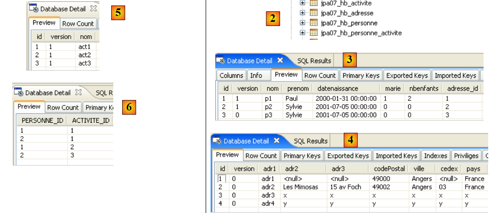 |
- [2]: [jpa07_hb_*]
- [3]: جدول الأشخاص
- [4]: جدول العناوين.
- [5]: جدول الأنشطة
- [6]: جدول ربط الشخص <-> النشاط
// suppression Personne p1
public static void test2() {
// contexte de persistance
EntityManager em = getEntityManager();
// début transaction
EntityTransaction tx = em.getTransaction();
tx.begin();
// suppression dépendances sur p1 : pas nécessaire à hibernate mais
// indispensable à toplink
act1.getPersonnes().remove(p1act1);
act2.getPersonnes().remove(p1act2);
// suppression personne p1
em.remove(p1);
// fin transaction
tx.commit();
// on affiche les nouvelles tables
dumpPersonne();
dumpActivite();
dumpAdresse();
dumpPersonne_Activite();
}
- السطر 4: نستخدم سياق الاستمرارية لـ test1، حيث الشخص p1 هو كائن في السياق.
- السطر 13: حذف الشخص p1. وبسبب السمة:
- cascadeType.ALL في Address، سيتم حذف العنوان المرتبط بالشخص p1
- cascadeType.REMOVE في PersonActivity، سيتم حذف أنشطة الشخص p1.
- السطران 10-11: نزيل التبعيات التي ترتبط بها الكيانات الأخرى بالشخص p1، الذي سيتم حذفه في السطر 13. يتم تنفيذ الأنشطة act1 و act2 بواسطة الشخص p1. تم إنشاء الروابط بواسطة منشئ كيان PersonActivity، الذي يكون كوده كما يلي:
public PersonneActivite(Personne p, Activite a) {
// les clés étrangères sont fixées par l'application
getId().setPersonneId(p.getId());
getId().setActiviteId(a.getId());
// associations bidirectionnelles
setPersonne(p);
setActivite(a);
p.getActivites().add(this);
a.getPersonnes().add(this);
}
- الأسطر 17–20: يتم عرض جميع الجداول
- الشخص p1، الموجود في test1 (السطر 3)، لم يعد موجودًا في نهاية test2 (السطور 22–23)
- العنوان adr1 للشخص p1، الموجود في test1 (السطر 11)، لم يعد موجودًا بعد test2 (الأسطر 29–31)
- الأنشطة (p1,act1) (السطر 16) و (p1,act2) (السطر 18) للشخص p1، الموجود في الاختبار 1، لم تعد موجودة في نهاية الاختبار 2 (السطور 33-34)
// suppression activite act1
public static void test3() {
// contexte de persistance
EntityManager em = getEntityManager();
// début transaction
EntityTransaction tx = em.getTransaction();
tx.begin();
// suppression dépendances sur act1 : pas nécessaire à hibernate mais
// indispensable à toplink
p2.getActivites().remove(p2act1);
// suppression activité act1
em.remove(act1);
// fin transaction
tx.commit();
// on affiche les nouvelles tables
dumpPersonne();
dumpActivite();
dumpAdresse();
dumpPersonne_Activite();
}
- السطر 4: نستخدم سياق الاستمرارية لـ test2
- السطر 12: حذف النشاط act1. بسبب السمة:
- cascadeType.REMOVE في PersonneActivite، سيتم حذف الصفوف (p، act1) في جدول [personne_activite].
- السطر 10: قبل إزالة act1 من سياق الاستمرارية، نزيل أي تبعيات قد تكون للكيانات الأخرى على هذا الكائن المستمر. بعد حذف person p1 في الاختبار السابق، لا يقوم سوى person p2 بتنفيذ النشاط act1.
- الأسطر 13-16: يتم عرض جميع الجداول
- في الاختبار 2، النشاط act1 موجود (السطر 6). في الاختبار 3، لم يعد موجودًا (السطران 21-22)
- في الاختبار 2، الرابط (p2,act1) موجود (السطر 14). في الاختبار 3، لم يعد موجودًا (السطر 28)
// récupération activités d'une personne
public static void test4() {
// contexte de persistance
EntityManager em = getNewEntityManager();
// début transaction
EntityTransaction tx = em.getTransaction();
tx.begin();
// on récupère la personne p2
p2 = em.find(Personne.class, p2.getId());
System.out.format("1 - Activités de la personne p2 (JPQL) :%n");
// on scanne ses activités
for (Object pa : em.createQuery("select a.nom from Activite a join a.personnes pa where pa.personne.nom='p2'").getResultList()) {
System.out.println(pa);
}
// on passe par la relation inverse de p2
p2 = em.find(Personne.class, p2.getId());
System.out.format("2 - Activités de la personne p2 (relation inverse) :%n");
// on scanne ses activités
for (PersonneActivite pa : p2.getActivites()) {
System.out.println(pa.getActivite().getNom());
}
// fin transaction
tx.commit();
}
- يعرض الاختبار 4 أنشطة الشخص p2.
- السطر 4: نبدأ بسياق جديد فارغ
- الأسطر 12-14: نعرض أسماء الأنشطة التي قام بها الشخص p2 باستخدام استعلام JPQL.
- يتم إجراء ربط بين Activity (a) و PersonActivity (pa) (join a.people)
- في صفوف هذا الربط (a, pa)، نعرض اسم النشاط (a.name) للشخص p2 (pa.person.name='p2').
- الأسطر 16-21: نقوم بنفس الشيء كما في السابق، ولكن باستخدام العلاقة OneToMany p2.activites للشخص p2. سيتم إنشاء استعلام JPQL بواسطة JPA. هنا نرى فائدة العلاقة العكسية OneToMany: فهي تتجنب استعلام JPQL.
// récupération personnes faisant une activité donnée
public static void test5() {
// contexte de persistance
EntityManager em = getNewEntityManager();
// début transaction
EntityTransaction tx = em.getTransaction();
tx.begin();
System.out.format("1 - Personnes pratiquant l'activité act3 (JPQL) :%n");
// on demande les activités de p2
for (Object pa : em.createQuery("select p.nom from Personne p join p.activites pa where pa.activite.nom='act3'").getResultList()) {
System.out.println(pa);
}
// on passe par la relation inverse de act3
System.out.format("2 - Personnes pratiquant l'activité act3 (relation inverse) :%n");
act3 = em.find(Activite.class, act3.getId());
for (PersonneActivite pa : act3.getPersonnes()) {
System.out.println(pa.getPersonne().getNom());
}
// fin transaction
tx.commit();
}
- يعرض الاختبار 6 الأشخاص الذين يؤدون النشاط act3. النهج مشابه لنهج الاختبار 6. نترك للقارئ مهمة ربط المقتطفين البرمجيين معًا.
 |
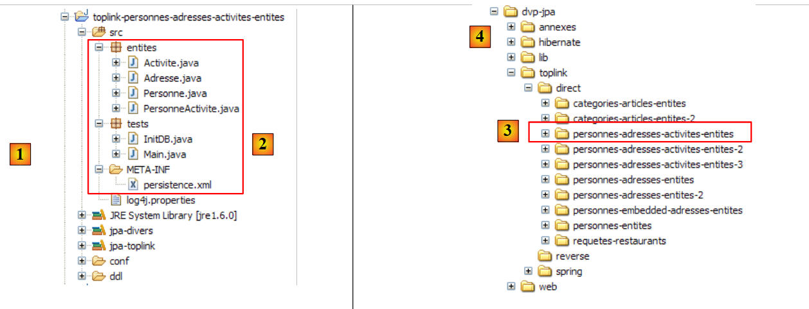 |
<!-- classes persistantes -->
<class>entites.Activite</class>
<class>entites.Adresse</class>
<class>entites.Personne</class>
<class>entites.PersonneActivite</class>
- الأسطر 2–5: الكيانات الأربعة المدارة
 |
CREATE TABLE jpa07_tl_activite (ID BIGINT NOT NULL, VERSION INTEGER NOT NULL, NOM VARCHAR(30) UNIQUE NOT NULL, PRIMARY KEY (ID))
CREATE TABLE jpa07_tl_adresse (ID BIGINT NOT NULL, ADR3 VARCHAR(30), CODEPOSTAL VARCHAR(5) NOT NULL, VERSION INTEGER NOT NULL, VILLE VARCHAR(20) NOT NULL, ADR2 VARCHAR(30), CEDEX VARCHAR(3), ADR1 VARCHAR(30) NOT NULL, PAYS VARCHAR(20) NOT NULL, PRIMARY KEY (ID))
CREATE TABLE jpa07_tl_personne_activite (PERSONNE_ID BIGINT NOT NULL, ACTIVITE_ID BIGINT NOT NULL, PRIMARY KEY (PERSONNE_ID, ACTIVITE_ID))
CREATE TABLE jpa07_tl_personne (ID BIGINT NOT NULL, DATENAISSANCE DATE NOT NULL, MARIE TINYINT(1) default 0 NOT NULL, NOM VARCHAR(30) UNIQUE NOT NULL, NBENFANTS INTEGER NOT NULL, VERSION INTEGER NOT NULL, PRENOM VARCHAR(30) NOT NULL, adresse_id BIGINT UNIQUE NOT NULL, PRIMARY KEY (ID))
ALTER TABLE jpa07_tl_personne_activite ADD CONSTRAINT FK_jpa07_tl_personne_activite_ACTIVITE_ID FOREIGN KEY (ACTIVITE_ID) REFERENCES jpa07_tl_activite (ID)
ALTER TABLE jpa07_tl_personne_activite ADD CONSTRAINT FK_jpa07_tl_personne_activite_PERSONNE_ID FOREIGN KEY (PERSONNE_ID) REFERENCES jpa07_tl_personne (ID)
ALTER TABLE jpa07_tl_personne ADD CONSTRAINT FK_jpa07_tl_personne_adresse_id FOREIGN KEY (adresse_id) REFERENCES jpa07_tl_adresse (ID)
CREATE TABLE SEQUENCE (SEQ_NAME VARCHAR(50) NOT NULL, SEQ_COUNT DECIMAL(38), PRIMARY KEY (SEQ_NAME))
INSERT INTO SEQUENCE(SEQ_NAME, SEQ_COUNT) values ('SEQ_GEN', 1)
 |
- في [1]، قاعدة بيانات MySQL5 – في [2]: جدول [person] – في [3]: جدول [address] المرتبط – في [4]: جدول [activity] للأنشطة – في [5]: جدول الربط [person_activity] الذي يربط بين الأشخاص والأنشطة.
- ستمثل @Entity Person الجدول [person]
- وستمثل @Entity Address الجدول [address]
- ستمثل @Entity Activity الجدول [activity]
- لم يعد الجدول [person_activity] ممثلاً بعلامة @Entity
- تربط علاقة واحد إلى واحد كيان Person بكيان Address: الشخص p له عنوان a. سيكون كيان Person الذي يحمل المفتاح الخارجي هو الكيان الأساسي، وسيكون كيان Address هو الكيان العكسي.
- تربط علاقة متعددة إلى متعددة كيانات Person و Activity: لكل شخص أنشطة متعددة، ويقوم عدة أشخاص بممارسة النشاط الواحد. سيتم تنفيذ هذه العلاقة باستخدام تعليق @ManyToMany في كل من الكيانين، مع إعلان أحدهما على أنه عكس الآخر.
@Entity
@Table(name = "jpa08_hb_personne")
public class Personne implements Serializable {
@Id
@Column(nullable = false)
@GeneratedValue(strategy = GenerationType.AUTO)
// toplink sqlserver :@GeneratedValue(strategy = GenerationType.IDENTITY)
private Long id;
@Column(nullable = false)
@Version
private int version;
@Column(length = 30, nullable = false, unique = true)
private String nom;
@Column(length = 30, nullable = false)
private String prenom;
@Column(nullable = false)
@Temporal(TemporalType.DATE)
private Date datenaissance;
@Column(nullable = false)
private boolean marie;
@Column(nullable = false)
private int nbenfants;
// main relationship Person (one) -> Address (one)
// implemented by the foreign key Person(adresse_id) -> Address
// cascade insert Person -> insert Address
// cascade shift Person -> shift Address
// cascade deletion Person -> deletion Address
// a Person must have 1 Address (nullable=false)
// 1 Address belongs to 1 person only (unique=true)
@OneToOne(cascade = CascadeType.ALL)
@JoinColumn(name = "adresse_id", unique = true, nullable = false)
private Adresse adresse;
// relationship Person (many) -> Activity (many) via a personne_activite join table
// personne_activite(PERSONNE_ID) is a foreign key on Person(id)
// personne_activite(ACTIVITE_ID) is a foreign key on Activite(id)
// cascade=CascadeType.PERSIST: persistence of 1 person leads to persistence of their activities
@ManyToMany(cascade={CascadeType.PERSIST})
@JoinTable(name="jpa08_hb_personne_activite",joinColumns = @JoinColumn(name = "PERSONNE_ID"), inverseJoinColumns = @JoinColumn(name = "ACTIVITE_ID"))
private Set<Activite> activites = new HashSet<Activite>();
// manufacturers
public Personne() {
}
- السطر 48: لكل شخص أنشطة. ويمثل حقل activities هذه الأنشطة. في الإصدار السابق، كان نوع العناصر في مجموعة activities هو PersonActivity. أما هنا، فهو Activity. وبالتالي، فإننا نصل إلى أنشطة الشخص مباشرةً، بينما في الإصدار السابق كان علينا المرور عبر الكيان الوسيط PersonActivity.
- السطر 46: العلاقة التي تربط @Entity Person التي ندرسها بـ @Entity Activity في مجموعة الأنشطة في السطر 48 هي من النوع متعدد إلى متعدد (ManyToMany):
- شخص واحد (One) لديه أنشطة متعددة (Many)
- نشاط واحد (One) يمارسه عدة أشخاص (Many)
- في النهاية، ترتبط @Entity Person و Activity بعلاقة ManyToMany. كما هو الحال مع علاقة OneToOne، فإن الكيانات في هذه العلاقة متماثلة. يمكننا اختيار @Entity التي ستحتفظ بالعلاقة الأساسية وأيها ستحتفظ بالعلاقة العكسية بحرية. هنا، نقرر أن @Entity Person ستحتفظ بالعلاقة الأساسية.
- كما رأينا في المثال السابق، تتطلب علاقة @ManyToMany جدول ربط. في حين أننا حددنا ذلك سابقًا باستخدام @Entity، يتم تحديد جدول الربط هنا باستخدام تعليق @JoinTable في السطر 47.
- تمنح السمة name الجدول اسمًا.
- يتكون جدول الربط من المفاتيح الخارجية من الجداول التي يربطها. هنا، هناك مفتاحان خارجيان: أحدهما من جدول [person]، والآخر من جدول [activity]. يتم تعريف أعمدة المفاتيح الخارجية هذه بواسطة سمات joinColumns و inverseJoinColumns.
- تحدد علامة @JoinColumn على السمة joinColumns المفتاح الأجنبي في جدول @Entity الذي يحمل العلاقة الأساسية @ManyToMany، وهو هنا جدول [person]. سيُسمى عمود المفتاح الأجنبي هذا PERSON_ID.
- تحدد تعليمة @JoinColumn الخاصة بالسمة inverseJoinColumns المفتاح الأجنبي في جدول الكيان @Entity الذي يحتوي على العلاقة العكسية @ManyToMany، وهو في هذه الحالة جدول [activity]. سيُسمى عمود المفتاح الأجنبي هذا ACTIVITY_ID.
@Entity
@Table(name = "jpa07_hb_adresse")
public class Adresse implements Serializable {
// fields
@Id
@Column(nullable = false)
@GeneratedValue(strategy = GenerationType.AUTO)
private Long id;
@Column(nullable = false)
@Version
private int version;
@Column(length = 30, nullable = false)
private String adr1;
@Column(length = 30)
private String adr2;
@Column(length = 30)
private String adr3;
@Column(length = 5, nullable = false)
private String codePostal;
@Column(length = 20, nullable = false)
private String ville;
@Column(length = 3)
private String cedex;
@Column(length = 20, nullable = false)
private String pays;
@OneToOne(mappedBy = "adresse")
private Personne personne;
- السطران 28-29: علاقة @OneToOne التي تمثل العكس لعلاقة @OneToOne الخاصة بالعنوان في كيان @Entity Person (السطران 37-38 من Person).
@Entity
@Table(name = "jpa08_hb_activite")
public class Activite implements Serializable {
// fields
@Id()
@Column(nullable = false)
@GeneratedValue(strategy = GenerationType.AUTO)
// toplink sqlserver : @GeneratedValue(strategy = GenerationType.IDENTITY)
private Long id;
@Column(nullable = false)
@Version
private int version;
@Column(length = 30, nullable = false, unique = true)
private String nom;
// inverse relationship Activity -> Person
@ManyToMany(mappedBy = "activites")
private Set<Personne> personnes = new HashSet<Personne>();
...
- السطران 20-21: العلاقة متعددة إلى متعددة التي تربط @Entity Activity بـ @Entity Person. تم تعريف هذه العلاقة بالفعل في @Entity Person. هنا، نحدد ببساطة أن العلاقة هي العكس (mappedBy) للعلاقة @ManyToMany الموجودة في حقل activites (mappedBy="activites") في @Entity Person.
- تذكر أن العلاقة العكسية اختيارية دائمًا. هنا، نستخدمها لاسترداد الأشخاص المشاركين في النشاط الحالي. سيتم استخدام مجموعة Set<Person> people لاستردادهم. لم يتم تحديد وضع التحميل لتبعيات Person لـ @Entity Activity. لم نحدده في المثال السابق أيضًا. بشكل افتراضي، يكون هذا الوضع fetch=FetchType.LAZY.
 |
alter table jpa08_hb_personne
drop
foreign key FKA44B1E555FE379D0;
alter table jpa08_hb_personne_activite
drop
foreign key FK5A6A55A5CD852024;
alter table jpa08_hb_personne_activite
drop
foreign key FK5A6A55A568C7A284;
drop table if exists jpa08_hb_activite;
drop table if exists jpa08_hb_adresse;
drop table if exists jpa08_hb_personne;
drop table if exists jpa08_hb_personne_activite;
create table jpa08_hb_activite (
id bigint not null auto_increment,
version integer not null,
nom varchar(30) not null unique,
primary key (id)
) ENGINE=InnoDB;
create table jpa08_hb_adresse (
id bigint not null auto_increment,
version integer not null,
adr1 varchar(30) not null,
adr2 varchar(30),
adr3 varchar(30),
codePostal varchar(5) not null,
ville varchar(20) not null,
cedex varchar(3),
pays varchar(20) not null,
primary key (id)
) ENGINE=InnoDB;
create table jpa08_hb_personne (
id bigint not null auto_increment,
version integer not null,
nom varchar(30) not null unique,
prenom varchar(30) not null,
datenaissance date not null,
marie bit not null,
nbenfants integer not null,
adresse_id bigint not null unique,
primary key (id)
) ENGINE=InnoDB;
create table jpa08_hb_personne_activite (
PERSONNE_ID bigint not null,
ACTIVITE_ID bigint not null,
primary key (PERSONNE_ID, ACTIVITE_ID)
) ENGINE=InnoDB;
alter table jpa08_hb_personne
add index FKA44B1E555FE379D0 (adresse_id),
add constraint FKA44B1E555FE379D0
foreign key (adresse_id)
references jpa08_hb_adresse (id);
alter table jpa08_hb_personne_activite
add index FK5A6A55A5CD852024 (ACTIVITE_ID),
add constraint FK5A6A55A5CD852024
foreign key (ACTIVITE_ID)
references jpa08_hb_activite (id);
alter table jpa08_hb_personne_activite
add index FK5A6A55A568C7A284 (PERSONNE_ID),
add constraint FK5A6A55A568C7A284
foreign key (PERSONNE_ID)
references jpa08_hb_personne (id);
 |
// people/activities display
System.out.println("[personnes/activites]");
Iterator iterator = em.createQuery("select p.id,a.id from Personne p join p.activites a").getResultList().iterator();
while (iterator.hasNext()) {
Object[] row = (Object[]) iterator.next();
System.out.format("[%d,%d]%n", (Long) row[0], (Long) row[1]);
}
- السطر 3: استعلام JPQL الذي يقوم بعملية الربط. تعرض نتيجة عبارة SELECT معرّفات كيانات Person و Activity المرتبطة بواسطة جدول الربط. تتكون القائمة التي تعرضها عبارة SELECT من صفوف تحتوي على كائنين من نوع Long. للتكرار عبر هذه القائمة، يطلب السطر 3 كائن Iterator للقائمة.
- الأسطر 4-7: باستخدام كائن Iterator من السطر السابق، يتم تصفح القائمة.
- السطر 5: كل عنصر في القائمة هو مصفوفة تحتوي على صف من نتيجة SELECT
- السطر 6: يتم استرداد عناصر الصف الحالي الناتج عن عبارة SELECT عن طريق إجراء تحويلات الأنواع المناسبة.
// suppression activite act1
public static void test3() {
// contexte de persistance
EntityManager em = getEntityManager();
// début transaction
EntityTransaction tx = em.getTransaction();
tx.begin();
// suppression activité act1 de p2
p2.getActivites().remove(act1);
// on retire act1 du contexte de persistance
em.remove(act1);
// fin transactions
tx.commit();
// on affiche les nouvelles tables
dumpPersonne();
dumpActivite();
dumpAdresse();
dumpPersonne_Activite();
}
- السطر 11: تمت إزالة النشاط act1 من سياق الاستمرارية
- السطر 9: النشاط act1 هو أحد أنشطة الشخص الوحيد المتبقي في السياق، وهو الشخص p2. يزيل السطر 9 النشاط act1 من أنشطة الشخص p2. نقوم بذلك للحفاظ على اتساق سياق الاستمرارية، حيث سنستخدمه لاحقًا.
- اختفت النشاط act1 في السطر 26 في test2 من الأنشطة في test3 (السطور 40-41)
- كان لدى الشخص p2 النشاط act1 في test2 (السطر 33). في نهاية test3، لم يعد لديه هذا النشاط (السطر 47)
// modification des activités d'une personne
public static void test6() {
// contexte de persistance
EntityManager em = getNewEntityManager();
// début transaction
EntityTransaction tx = em.getTransaction();
tx.begin();
// on récupère la personne p2
p2 = em.find(Personne.class, p2.getId());
// on récupère l'activité act2
act2 = em.find(Activite.class, act2.getId());
// p2 ne pratique plus que l'activité act2
p2.getActivites().clear();
p2.getActivites().add(act2);
// fin transaction
tx.commit();
// on affiche les nouvelles tables
dumpPersonne();
dumpActivite();
dumpPersonne_Activite();
}
- السطر 4: يتم استخدام سياق استمرارية جديد فارغ
- السطر 9: يتم استرداد الشخص p2 من قاعدة البيانات إلى سياق الاستمرارية
- السطر 11: يتم جلب النشاط act2 من قاعدة البيانات إلى سياق الاستمرارية
- السطر 13: يتم جلب أنشطة الشخص p2 (act3) من قاعدة البيانات إلى السياق (fetchType.LAZY). يؤدي استدعاء [getActivites] إلى تشغيل هذا التحميل. نقوم بإزالة أنشطة p2. هذه ليست إزالة فعلية للأنشطة (remove) بل تعديل لحالة الشخص p2. لم يعد يشارك في أي أنشطة.
- السطر 14: تتم إضافة النشاط act2 إلى الشخص p2. في النهاية، تكون مجموعة الأنشطة الجديدة للشخص p2 هي المجموعة {act2}.
- السطر 16: نهاية المعاملة. ستقوم المزامنة بمراجعة الكائنات في السياق (p2، act2، act3) وستكتشف أن حالة p2 قد تغيرت. سيتم تنفيذ عبارات SQL التي تعكس هذا التغيير في قاعدة البيانات.
- الأسطر 18-20: يتم عرض جميع الجداول
- في نهاية الاختبار 4، كان الشخص p2 يؤدي النشاط act3 (السطر 3).
- في نهاية الاختبار 6 (السطر 19)، لم يعد الشخص p2 يؤدي النشاط act3 (السطر 3) وأصبح يؤدي النشاط act2.
 |
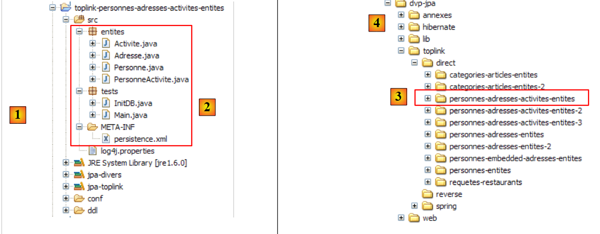 |
<!-- provider -->
<provider>oracle.toplink.essentials.PersistenceProvider</provider>
<!-- classes persistantes -->
<class>entites.Activite</class>
<class>entites.Adresse</class>
<class>entites.Personne</class>
...
- الأسطر 4-6: الكيانات المدارة
 |
CREATE TABLE jpa08_tl_personne_activite (PERSONNE_ID BIGINT NOT NULL, ACTIVITE_ID BIGINT NOT NULL, PRIMARY KEY (PERSONNE_ID, ACTIVITE_ID))
CREATE TABLE jpa08_tl_activite (ID BIGINT NOT NULL, VERSION INTEGER NOT NULL, NOM VARCHAR(30) UNIQUE NOT NULL, PRIMARY KEY (ID))
CREATE TABLE jpa08_tl_personne (ID BIGINT NOT NULL, DATENAISSANCE DATE NOT NULL, MARIE TINYINT(1) default 0 NOT NULL, NOM VARCHAR(30) UNIQUE NOT NULL, NBENFANTS INTEGER NOT NULL, VERSION INTEGER NOT NULL, PRENOM VARCHAR(30) NOT NULL, adresse_id BIGINT UNIQUE NOT NULL, PRIMARY KEY (ID))
CREATE TABLE jpa08_tl_adresse (ID BIGINT NOT NULL, ADR3 VARCHAR(30), CODEPOSTAL VARCHAR(5) NOT NULL, VERSION INTEGER NOT NULL, VILLE VARCHAR(20) NOT NULL, ADR2 VARCHAR(30), CEDEX VARCHAR(3), ADR1 VARCHAR(30) NOT NULL, PAYS VARCHAR(20) NOT NULL, PRIMARY KEY (ID))
ALTER TABLE jpa08_tl_personne_activite ADD CONSTRAINT FK_jpa08_tl_personne_activite_ACTIVITE_ID FOREIGN KEY (ACTIVITE_ID) REFERENCES jpa08_tl_activite (ID)
ALTER TABLE jpa08_tl_personne_activite ADD CONSTRAINT FK_jpa08_tl_personne_activite_PERSONNE_ID FOREIGN KEY (PERSONNE_ID) REFERENCES jpa08_tl_personne (ID)
ALTER TABLE jpa08_tl_personne ADD CONSTRAINT FK_jpa08_tl_personne_adresse_id FOREIGN KEY (adresse_id) REFERENCES jpa08_tl_adresse (ID)
CREATE TABLE SEQUENCE (SEQ_NAME VARCHAR(50) NOT NULL, SEQ_COUNT DECIMAL(38), PRIMARY KEY (SEQ_NAME))
INSERT INTO SEQUENCE(SEQ_NAME, SEQ_COUNT) values ('SEQ_GEN', 1)
 |
// relation Personne (many) -> Activite (many) via une table de jointure personne_activite
// personne_activite(PERSONNE_ID) est clé étangère sur Personne(id)
// personne_activite(ACTIVITE_ID) est clé étangère sur Activite(id)
// plus de cascade sur les activités
// @ManyToMany(cascade={CascadeType.PERSIST})
@ManyToMany()
@JoinTable(name = "jpa09_hb_personne_activite", joinColumns = @JoinColumn(name = "PERSONNE_ID"), inverseJoinColumns = @JoinColumn(name = "ACTIVITE_ID"))
private Set<Activite> activites = new HashSet<Activite>();
- السطر 6: لم تعد العلاقة الأساسية @ManyToMany تحتوي على تسلسل استمرارية من Person -> Activity (انظر الإصدار السابق، السطر 5)
// plus de relation inverse avec Personne
// @ManyToMany(mappedBy = "activites")
// private Set<Personne> personnes = new HashSet<Personne>();
- السطران 2-3: تمت إزالة العلاقة العكسية @ManyToMany بين النشاط -> الشخص
// associations personnes <--> activites
p1.getActivites().add(act1);
p1.getActivites().add(act2);
p2.getActivites().add(act1);
p2.getActivites().add(act3);
// persistance des activites
em.persist(act1);
em.persist(act2);
em.persist(act3);
// persistance des personnes
em.persist(p1);
em.persist(p2);
em.persist(p3);
// et de l'adresse a4 non liée à une personne
em.persist(adr4);
- الأسطر 7–9: نحن مطالبون بوضع الأنشطة من act1 إلى act3 بشكل صريح في سياق الاستمرارية. عندما كانت سلسلة الاستمرارية Person -> Activity موجودة، كانت الأسطر 11–13 تحفظ كل من الأشخاص p1 إلى p3 وأنشطة هؤلاء الأشخاص من act1 إلى act3.
// récupération personnes faisant une activité donnée
public static void test5() {
// contexte de persistance
EntityManager em = getNewEntityManager();
// début transaction
EntityTransaction tx = em.getTransaction();
tx.begin();
System.out.format("1 - Personnes pratiquant l'activité act3 (JPQL) :%n");
// on demande les activités de p2
for (Object pa : em.createQuery("select p.nom from Personne p join p.activites a where a.nom='act3'").getResultList()) {
System.out.println(pa);
}
// fin transaction
tx.commit();
}
- الأسطر 9-12: استعلام JPQL لاسترداد الأشخاص المشاركين في النشاط act3
- في الإصدار السابق، تم الحصول على نفس النتيجة أيضًا عبر العلاقة العكسية Activity -> Person، والتي تمت إزالتها الآن:
// we use the inverse relationship of act3
System.out.format("2 - Personnes pratiquant l'activité act3 (relation inverse) :%n");
act3 = em.find(Activite.class, act3.getId());
for (Personne p : act3.getPersonnes()) {
System.out.println(p.getNom());
}
 |
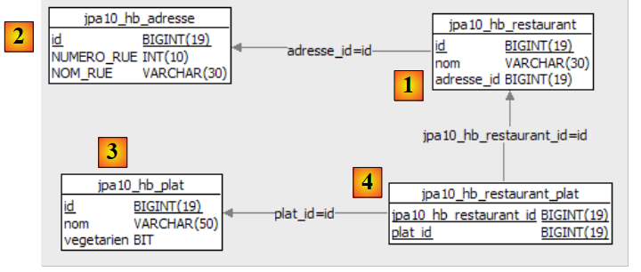 |
- في [1]: قائمة بالمطاعم مع أسمائها وعناوينها
- في [2]: جدول عناوين المطاعم، يقتصر على رقم الشارع واسم الشارع. توجد علاقة واحد إلى واحد بين جدول المطاعم وجدول العناوين: لكل مطعم عنوان واحد فقط.
- في [3]: جدول الأطباق مع أسمائها وعلامة صواب/خطأ تشير إلى ما إذا كان الطبق نباتيًا أم لا
- في [4]: جدول ربط المطعم/الطبق: يقدم المطعم أطباقًا متعددة، ويمكن تقديم الطبق نفسه في مطاعم متعددة. توجد علاقة متعددة الأطراف بين جداول المطاعم والأطباق.
- ستمثل @Entity Restaurant جدول [restaurant]
- سيتم تمثيل @Entity Address بالجدول [address]
- سيتم تمثيل @Entity Dish بالجدول [dish]
- تربط علاقة واحد إلى واحد كيان Restaurant بكيان Address: المطعم r له عنوان a. سيكون كيان Restaurant، الذي يحمل المفتاح الخارجي، هو الكيان الأساسي. لن يكون لكيان Address علاقة عكسية.
- تربط علاقة "كثير إلى كثير" بين كيانَي "المطعم" و"الطبق": فالمطعم يقدم أطباقًا متعددة، ويمكن أن يقدم نفس الطبق في مطاعم متعددة. سيتم تنفيذ هذه العلاقة باستخدام تعليق @ManyToMany في كيان "المطعم". ولن يكون لكيان "الطبق" علاقة عكسية.
package entites;
...
@Entity
@Table(name = "jpa10_hb_restaurant")
public class Restaurant implements java.io.Serializable {
private static final long serialVersionUID = 1L;
@Id
@GeneratedValue(strategy = GenerationType.AUTO)
private long id;
@Column(unique = true, length = 30, nullable = false)
private String nom;
@OneToOne(cascade = CascadeType.ALL)
private Adresse adresse;
@ManyToMany(cascade = { CascadeType.PERSIST, CascadeType.MERGE })
@JoinTable(name = "jpa10_hb_restaurant_plat", inverseJoinColumns = @JoinColumn(name = "plat_id"))
private Set<Plat> plats = new HashSet<Plat>();
// manufacturers
public Restaurant() {
}
public Restaurant(String name, Adresse address, Set<Plat> entrees) {
...
}
// getters and setters
...
// toString
public String toString() {
String signature = "R[" + getNom() + "," + getAdresse();
for (Plat e : getPlats()) {
signature += "," + e;
}
return signature + "]";
}
}
- السطر 17: العلاقة واحد إلى واحد بين كيان Restaurant وكيان Address. يتم ترحيل جميع عمليات الاستمرارية على المطعم إلى عنوانه.
- السطر 20: العلاقة التي تربط @Entity Restaurant بـ @Entity Dish في مجموعة الأطباق في السطر 22 هي من النوع متعدد إلى متعدد (ManyToMany):
- يحتوي المطعم (واحد) على أطباق متعددة (كثير)
- يمكن تقديم طبق (واحد) في عدة مطاعم (عدة)
- في النهاية، يتم ربط @Entity Restaurant و @Entity Dish بعلاقة ManyToMany. نقرر أن @Entity Restaurant ستكون العلاقة الأساسية وأن @Entity Dish لن يكون لها علاقة عكسية.
- تتطلب علاقة @ManyToMany جدول ربط. يتم تعريف هذا باستخدام تعليق @JoinTable في السطر 47.
- تمنح سمة name الجدول اسمًا.
- يتكون جدول الربط من المفاتيح الخارجية من الجداول التي يربطها. هنا، هناك مفتاحان خارجيان: أحدهما من جدول [restaurant] والآخر من جدول [dish]. يتم تعريف أعمدة المفاتيح الخارجية هذه بواسطة سمات joinColumns و inverseJoinColumns.
- تحدد السمة joinColumns المفتاح الأجنبي في جدول الكيان @Entity الذي يحمل العلاقة @ManyToMany الأساسية، وهو في هذه الحالة جدول [restaurant]. السمة joinColumns غير موجودة هنا. لدى JPA قيمة افتراضية في هذه الحالة: [table]_[table_primary_key]، وهي هنا [jpa10_hb_restaurant_id].
- تحدد تعليمة @JoinColumn للسمة inverseJoinColumns المفتاح الأجنبي في جدول @Entity الذي يحتوي على العلاقة العكسية @ManyToMany، وفي هذه الحالة هو جدول [dish]. سيتم تسمية عمود المفتاح الأجنبي هذا dish_id.
package entites;
...
@Entity
@Table(name="jpa10_hb_adresse")
public class Adresse implements java.io.Serializable {
@Id
@GeneratedValue(strategy = GenerationType.AUTO)
private long id;
@Column(name = "NUMERO_RUE")
private int numeroRue;
@Column(name = "NOM_RUE", length=30, nullable=false)
private String nomRue;
// getters and setters
...
// manufacturers
public Adresse(int streetNumber, String streetName){
...
}
public Adresse(){
}
// toString
public String toString(){
return "A["+getNumeroRue()+","+getNomRue()+"]";
}
}
- @Entity Address هي كيان لا توجد له علاقة مباشرة بكيانات أخرى. ولا يمكن الاحتفاظ به إلا من خلال كيان Restaurant.
- يتم تعريف العنوان بواسطة اسم الشارع (السطر 16) ورقم المنزل (السطر 13).
package entites;
...
@Entity
@Table(name="jpa10_hb_plat")
public class Plat implements java.io.Serializable {
@Id
@GeneratedValue(strategy = GenerationType.AUTO)
private long id;
@Column(unique=true, length=50, nullable=false)
private String nom;
private boolean vegetarien;
// manufacturers
public Plat() {
}
public Plat(String name, boolean vegetarian) {
...
}
// getters and setters
...
// toString
public String toString() {
return "E[" + getNom() + "," + isVegetarien() + "]";
}
}
- @Entity Dish هي كيان لا توجد له علاقة مباشرة بكيانات أخرى. ولا يمكن الاحتفاظ به إلا من خلال كيان Restaurant.
- يتم تعريف الطبق من خلال الاسم (السطر 12) وما إذا كان نباتيًا أم لا (السطر 14).
 |
alter table jpa10_hb_restaurant
drop
foreign key FK3E8E4F5D5FE379D0;
alter table jpa10_hb_restaurant_plat
drop
foreign key FK1D2D06D11F0F78A4;
alter table jpa10_hb_restaurant_plat
drop
foreign key FK1D2D06D1AFAC3E44;
drop table if exists jpa10_hb_adresse;
drop table if exists jpa10_hb_plat;
drop table if exists jpa10_hb_restaurant;
drop table if exists jpa10_hb_restaurant_plat;
create table jpa10_hb_adresse (
id bigint not null auto_increment,
NUMERO_RUE integer,
NOM_RUE varchar(30) not null,
primary key (id)
) ENGINE=InnoDB;
create table jpa10_hb_plat (
id bigint not null auto_increment,
nom varchar(50) not null unique,
vegetarien bit not null,
primary key (id)
) ENGINE=InnoDB;
create table jpa10_hb_restaurant (
id bigint not null auto_increment,
nom varchar(30) not null unique,
adresse_id bigint,
primary key (id)
) ENGINE=InnoDB;
create table jpa10_hb_restaurant_plat (
jpa10_hb_restaurant_id bigint not null,
plat_id bigint not null,
primary key (jpa10_hb_restaurant_id, plat_id)
) ENGINE=InnoDB;
alter table jpa10_hb_restaurant
add index FK3E8E4F5D5FE379D0 (adresse_id),
add constraint FK3E8E4F5D5FE379D0
foreign key (adresse_id)
references jpa10_hb_adresse (id);
alter table jpa10_hb_restaurant_plat
add index FK1D2D06D11F0F78A4 (plat_id),
add constraint FK1D2D06D11F0F78A4
foreign key (plat_id)
references jpa10_hb_plat (id);
alter table jpa10_hb_restaurant_plat
add index FK1D2D06D1AFAC3E44 (jpa10_hb_restaurant_id),
add constraint FK1D2D06D1AFAC3E44
foreign key (jpa10_hb_restaurant_id)
references jpa10_hb_restaurant (id);
- الأسطر 21-26: جدول [address]
- الأسطر 28-33: جدول [dish]
- الأسطر 35-40: جدول [restaurant]
- الأسطر 42-46: جدول الربط [restaurant_dish]. لاحظ المفتاح المركب (السطر 45)
- الأسطر 48-52: المفتاح الخارجي من جدول [المطعم] إلى جدول [العنوان]
- الأسطر 54–58: المفتاح الأجنبي من جدول [restaurant_dish] إلى جدول [dish]
- الأسطر 60–64: المفتاح الخارجي من جدول [restaurant_dish] إلى جدول [restaurant]
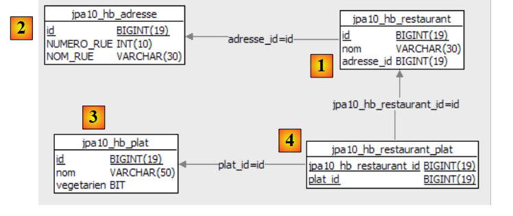 |
 |
- في [1]: الجداول الأربعة لقاعدة البيانات
- في [2]: العناوين
- في [3]: الأطباق
- في [4]: المطاعم. يشير [address_id] إلى العناوين من [2].
- في [5]: جدول الربط [restaurant,dish]. يشير [jpa10_hb_restaurant_id] إلى المطاعم في [4] ويشير [dish_id] إلى الأطباق في [3]. وبالتالي، فإن [1,1] يعني أن مطعم "Burger Barn" يقدم طبق "CheeseBurger".
 |
- في [1] و[2]: تكوين وحدة تحكم Hibernate
 |
- في [3]: استعلام JPQL وفي [4] النتيجة.
- في [5]: عبارة SQL المكافئة
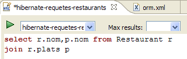 |  |
 |  |
 |  |
 | 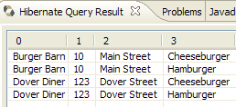 |
- يقوم بتعبئة قاعدة البيانات
- ويقوم بتنفيذ عدد من استعلامات JPQL عليها. يتم تخزين هذه الاستعلامات في ملف [META-INF/orm.xml] الخاص بمشروع Eclipse:
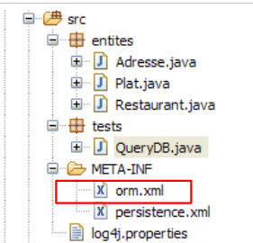 |
<?xml version="1.0" encoding="UTF-8" ?>
<entity-mappings xmlns="http://java.sun.com/xml/ns/persistence/orm" xmlns:xsi="http://www.w3.org/2001/XMLSchema-instance"
xsi:schemaLocation="http://java.sun.com/xml/ns/persistence/orm http://java.sun.com/xml/ns/persistence/orm_1_0.xsd" version="1.0">
<description>Restaurants</description>
<named-query name="supprimer le contenu de la table restaurant">
<query>delete from Restaurant</query>
</named-query>
<named-query name="supprimer le contenu de la table plat">
<query>delete from Plat</query>
</named-query>
<named-query name="obtenir tous les restaurants">
<query>select r from Restaurant r order by r.nom asc</query>
</named-query>
<named-query name="obtenir toutes les adresses">
<query>select a from Adresse a order by a.nomRue asc</query>
</named-query>
<named-query name="obtenir tous les plats">
<query>select p from Plat p order by p.nom asc</query>
</named-query>
<named-query name="obtenir tous les restaurants avec leurs plats">
<query>select r.nom,p.nom from Restaurant r join r.plats p</query>
</named-query>
<named-query name="obtenir les restaurants ayant au moins un plat vegetarien">
<query>select distinct r from Restaurant r join r.plats p where p.vegetarien=true</query>
</named-query>
<named-query name="obtenir les restaurants avec uniquement des plats vegetariens">
<query>
select distinct r1.nom from Restaurant r1 where not exists (select p1 from Restaurant r2 join r2.plats p1 where r2.id=r1.id and
p1.vegetarien=false)
</query>
</named-query>
<named-query name="obtenir les restaurants d'une certaine rue">
<query>select r from Restaurant r where r.adresse.nomRue=:nomRue</query>
</named-query>
<named-query name="obtenir les restaurants qui servent des burgers">
<query>select r.nom,r.adresse.numeroRue, r.adresse.nomRue, p.nom from Restaurant r join r.plats p where p.nom like '%burger'</query>
</named-query>
<named-query name="obtenir les plats du restaurant untel">
<query>select p.nom from Restaurant r join r.plats p where r.nom=:nomRestaurant</query>
</named-query>
</entity-mappings>
- جذر ملف [orm.xml] هو <entity-mappings> (السطر 2).
- الأسطر 5-7: يتم تضمين استعلامات JPQL المسماة في علامات <named-query name="...">text</named-query>.
- سمة name للعلامة هي اسم الاستعلام.
- محتوى النص للعلامة هو نص الاستعلام.
package tests;
...
public class QueryDB {
// Persistence context
private static EntityManagerFactory emf = Persistence.createEntityManagerFactory("jpa");
private static EntityManager em = emf.createEntityManager();
public static void main(String[] args) {
// start of transaction
EntityTransaction tx = em.getTransaction();
tx.begin();
// delete [restaurant] table items
em.createNamedQuery("supprimer le contenu de la table restaurant").executeUpdate();
// delete table items [flat]
em.createNamedQuery("supprimer le contenu de la table plat").executeUpdate();
// creation of Address objects
Adresse adr1 = new Adresse(10, "Main Street");
Adresse adr2 = new Adresse(20, "Main Street");
Adresse adr3 = new Adresse(123, "Dover Street");
// creation of Entree objects
Plat ent1 = new Plat("Hamburger", false);
Plat ent2 = new Plat("Cheeseburger", false);
Plat ent3 = new Plat("Tofu Stir Fry", true);
Plat ent4 = new Plat("Vegetable Soup", true);
// creation of Restaurant objects
Restaurant restaurant1 = new Restaurant();
restaurant1.setNom("Burger Barn");
restaurant1.setAdresse(adr1);
restaurant1.getPlats().add(ent1);
restaurant1.getPlats().add(ent2);
Restaurant restaurant2 = new Restaurant();
restaurant2.setNom("Veggie Village");
restaurant2.setAdresse(adr2);
restaurant2.getPlats().add(ent3);
restaurant2.getPlats().add(ent4);
Restaurant restaurant3 = new Restaurant();
restaurant3.setNom("Dover Diner");
restaurant3.setAdresse(adr3);
restaurant3.getPlats().add(ent1);
restaurant3.getPlats().add(ent2);
restaurant3.getPlats().add(ent4);
// persistence of Restaurant objects (and other objects through cascading)
em.persist(restaurant1);
em.persist(restaurant2);
em.persist(restaurant3);
// end transaction
tx.commit();
// dump base
dumpDataBase();
// end EntityManager
em.close();
// end EntityManagerFactory
emf.close();
}
// database content display
@SuppressWarnings("unchecked")
private static void dumpDataBase() {
// test2
log("données de la base");
// start of transaction
EntityTransaction tx = em.getTransaction();
tx.begin();
// restaurant displays
log("[restaurants]");
for (Object restaurant : em.createNamedQuery("obtenir tous les restaurants").getResultList()) {
System.out.println(restaurant);
}
// address display
log("[adresses]");
for (Object adresse : em.createNamedQuery("obtenir toutes les adresses").getResultList()) {
System.out.println(adresse);
}
// flat displays
log("[plats]");
for (Object plat : em.createNamedQuery("obtenir tous les plats").getResultList()) {
System.out.println(plat);
}
// displays links restaurants <--> dishes
log("[restaurants/plats]");
Iterator record = em.createNamedQuery("obtenir tous les restaurants avec leurs plats").getResultList().iterator();
while (record.hasNext()) {
Object[] currentRecord = (Object[]) record.next();
System.out.format("[%s,%s]%n", currentRecord[0], currentRecord[1]);
}
log("[Liste des restaurants avec au moins un plat végétarien]");
for (Object r : em.createNamedQuery("obtenir les restaurants ayant au moins un plat vegetarien").getResultList()) {
System.out.println(r);
}
// query
log("[Liste des restaurants avec seulement des plats végétariens]");
for (Object r : em.createNamedQuery("obtenir les restaurants avec uniquement des plats vegetariens").getResultList()) {
System.out.println(r);
}
// query
log("[Liste des restaurants dans Dover Street]");
for (Object r : em.createNamedQuery("obtenir les restaurants d'une certaine rue").setParameter("nomRue", "Dover Street").getResultList()) {
System.out.println(r);
}
// query
log("[Liste des restaurants ayant un plat de type burger]");
record = em.createNamedQuery("obtenir les restaurants qui servent des burgers").getResultList().iterator();
while (record.hasNext()) {
Object[] currentRecord = (Object[]) record.next();
System.out.format("[%s,%d,%s,%s]%n", currentRecord[0], currentRecord[1], currentRecord[2], currentRecord[3]);
}
// query
log("[Plats de Veggie Village]");
for (Object r : em.createNamedQuery("obtenir les plats du restaurant untel").setParameter("nomRestaurant", "Veggie Village").getResultList()) {
System.out.println(r);
}
// end transaction
tx.commit();
}
// logs
private static void log(String message) {
System.out.println(" -----------" + message);
}
}
 |
 |
<!-- provider -->
<provider>oracle.toplink.essentials.PersistenceProvider</provider>
<!-- classes persistantes -->
<class>entites.Restaurant</class>
<class>entites.Adresse</class>
<class>entites.Plat</class>
...
- الأسطر 4-6: الكيانات المُدارة